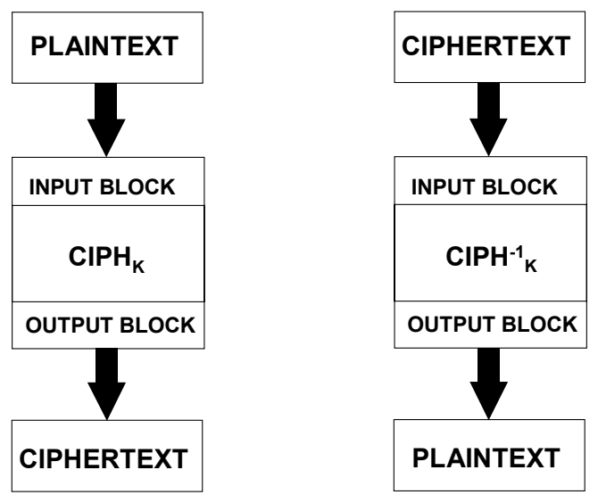
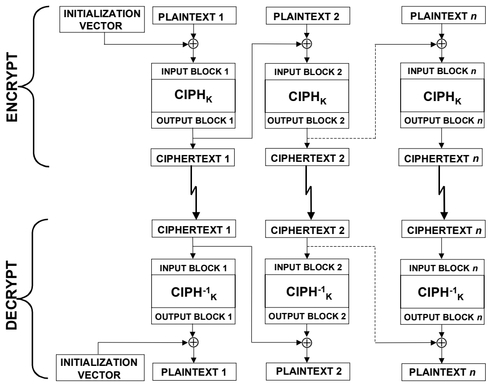
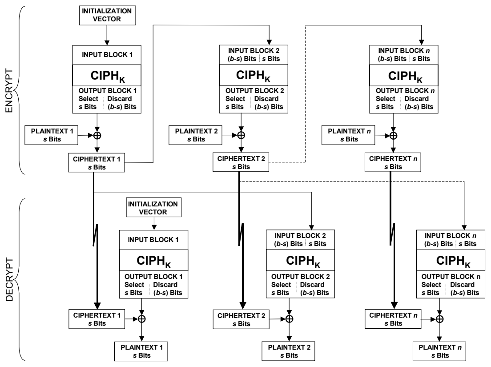
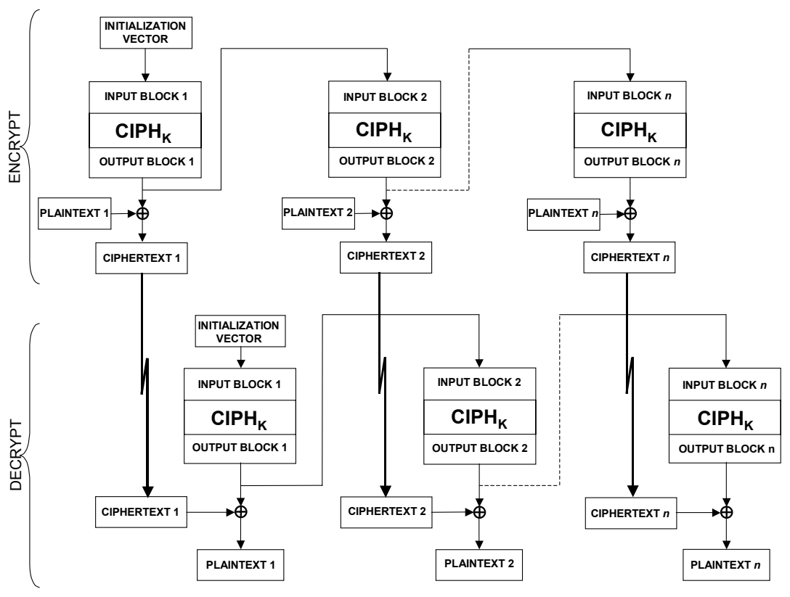
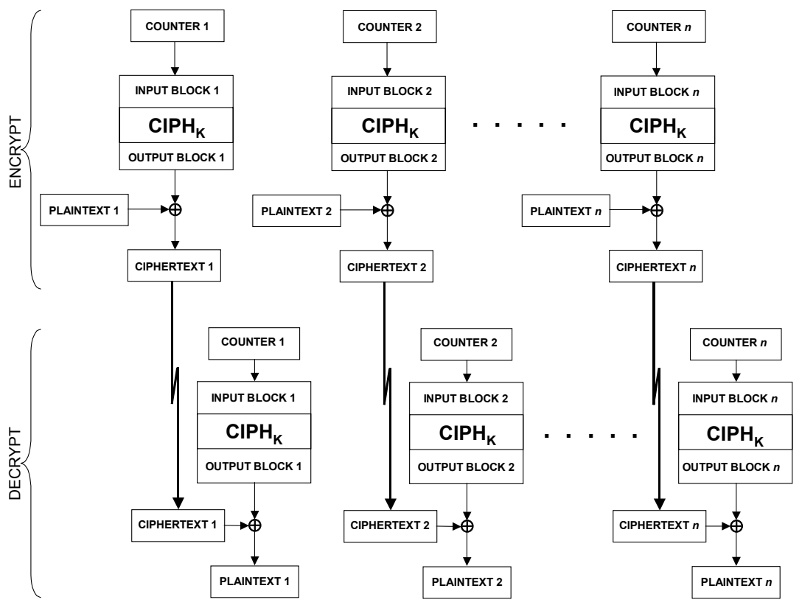

NIST SP 800-38A 日本語訳
英語タイトル : Recommendation for Block Cipher Modes of Operation: Methods and Techniques日本語タイトル : ブロック暗号の運用モードに関する推奨事項：方式と技法
公開日 : 2010-10-21
原文URL : https://csrc.nist.gov/pubs/sp/800/38/a/final
翻訳編集 : 自動生成（有志による非公式の日本語訳）, 原文取得日 : 2026-10-01, 訳文 : 832 / 837 ブロック
[要約] SP 800-38A は、共通鍵ブロック暗号アルゴリズムと併用する、ECB、CBC、CFB、OFB、CTRの5種類の機密性モードを定義する勧告です。FIPSで承認された基礎ブロック暗号アルゴリズムと併用することで、これらのモードは機微ではあるが非機密のコンピュータデータに暗号学的保護を提供できます。各モードの定義、利用上の前提、運用方法と例を示す、共通鍵ブロック暗号の運用モードに関する勧告です。
NIST Special Publication 800-38A
NIST特別刊行物 800-38A
2001 Edition
2001年版
［NIST のロゴ。公的な標章のため、この非公式サイトには掲載していない。原本 PDF を参照。］
Recommendation for Block Cipher Modes of Operation
ブロック暗号モードの運用に関する勧告
Methods and Techniques
方法と技術
Morris Dworkin
Morris Dworkin
COMPUTER SECURITY
COMPUTER SECURITY（コンピューターセキュリティ）
C O M P U T E R S E C U R I T Y
C O M P U T E R S E C U R I T Y（コンピューターセキュリティ）
Computer Security Division Information Technology Laboratory National Institute of Standards and Technology Gaithersburg, MD 20899-8930
コンピューターセキュリティ部門 情報技術研究所 米国国立標準技術研究所 メリーランド州ゲイサーズバーグ 20899-8930
December 2001
2001年12月
U.S. Department of Commerce Donald L. Evans, Secretary
米国商務省 Donald L. Evans 長官
Technology Administration Phillip J. Bond, Under Secretary of Commerce for Technology
技術管理局 Phillip J. Bond 商務技術担当次官
National Institute of Standards and Technology Arden L. Bement, Jr., Director
米国国立標準技術研究所 Arden L. Bement, Jr. 所長
Reports on Information Security Technology
情報セキュリティ技術に関する報告書
The Information Technology Laboratory (ITL) at the National Institute of Standards and Technology (NIST) promotes the U.S. economy and public welfare by providing technical leadership for the Nation’s measurement and standards infrastructure. ITL develops tests, test methods, reference data, proof of concept implementations, and technical analyses to advance the development and productive use of information technology. ITL’s responsibilities include the development of technical, physical, administrative, and management standards and guidelines for the cost-effective security and privacy of sensitive unclassified information in Federal computer systems. This Special Publication 800-series reports on ITL’s research, guidance, and outreach efforts in computer security, and its collaborative activities with industry, government, and academic organizations.
国立標準技術研究所（NIST）の情報技術研究所（ITL）は、米国の計測および標準インフラストラクチャに対する技術的リーダーシップを提供することで、米国経済と公共の福祉を促進している。ITLは、情報技術の発展と生産的な利用を前進させるため、試験、試験方法、参照データ、概念実証実装、および技術分析を開発する。ITLの責務には、連邦コンピューターシステム内の機微な非機密情報の費用対効果の高いセキュリティとプライバシーを確保するための技術、物理、管理、運用管理に関する標準およびガイドラインの策定が含まれる。本Special Publication 800シリーズは、コンピューターセキュリティに関するITLの研究、指針、普及活動、および産業界、政府、学術機関との協力活動について報告する。
Certain commercial entities, equipment, or materials may be identified in this document in order to describe an experimental procedure or concept adequately. Such identification is not intended to imply recommendation or endorsement by the National Institute of Standards and Technology, nor is it intended to imply that the entities, materials, or equipment are necessarily the best available for the purpose.
実験手順または概念を適切に説明するため、本書では特定の商業組織、装置、または材料の名称を挙げる場合がある。このような記載は、国立標準技術研究所による推奨または是認を意味することを意図するものではなく、また、当該組織、材料、または装置が必ずしもその目的に最適であることを意味するものでもない。
National Institute of Standards and Technology Special Publication 800-38A 2001 ED Natl. Inst. Stand. Technol. Spec. Publ. 800-38A 2001 ED, 66 pages (December 2001)
国立標準技術研究所 Special Publication 800-38A 2001年版 Natl. Inst. Stand. Technol. Spec. Publ. 800-38A 2001 ED, 66ページ（2001年12月）
CODEN: NSPUE2
CODEN: NSPUE2
U.S. GOVERNMENT PRINTING OFFICE
米国政府印刷局
WASHINGTON: 2001
ワシントン：2001年
For sale by the Superintendent of Documents, U.S. Government Printing Office Internet: bookstore.gpo.gov — Phone: (202) 512-1800 — Fax: (202) 512-2250 Mail: Stop SSOP, Washington, DC 20402-0001
販売元：米国政府印刷局 文書管理官 インターネット：bookstore.gpo.gov — 電話：(202) 512-1800 — ファクス：(202) 512-2250 郵送先：Stop SSOP, Washington, DC 20402-0001
Abstract
要旨
This recommendation defines five confidentiality modes of operation for use with an underlying symmetric key block cipher algorithm: Electronic Codebook (ECB), Cipher Block Chaining (CBC), Cipher Feedback (CFB), Output Feedback (OFB), and Counter (CTR). Used with an underlying block cipher algorithm that is approved in a Federal Information Processing Standard (FIPS), these modes can provide cryptographic protection for sensitive, but unclassified, computer data.
本勧告は、基礎となる共通鍵ブロック暗号アルゴリズムと併用するための、5種類の機密性モードを定義する。すなわち、Electronic Codebook（ECB）、Cipher Block Chaining（CBC）、Cipher Feedback（CFB）、Output Feedback（OFB）、およびCounter（CTR）である。連邦情報処理規格（FIPS）で承認された基礎ブロック暗号アルゴリズムと併用することで、これらのモードは機微ではあるが非機密のコンピューターデータに暗号学的保護を提供できる（can）。
KEY WORDS: Computer security; cryptography; data security; block cipher; encryption; Federal Information Processing Standard; mode of operation.
キーワード：コンピューターセキュリティ；暗号；データセキュリティ；ブロック暗号；暗号化；連邦情報処理規格；動作モード。
Table of Contents
目次
1 PURPOSE — 1
1 目的 — 1
2 AUTHORITY — 1
2 権限 — 1
3 INTRODUCTION — 1
3 はじめに — 1
4 DEFINITIONS, ABBREVIATIONS, AND SYMBOLS — 3
4 定義、略語、記号 — 3
4.1 DEFINITIONS AND ABBREVIATIONS — 3
4.1 定義および略語 — 3
4.2 SYMBOLS — 5
4.2 記号 — 5
4.2.1 Variables — 5
4.2.1 変数 — 5
4.2.2 Operations and Functions — 5
4.2.2 演算および関数 — 5
5 PRELIMINARIES — 7
5 予備事項 — 7
5.1 UNDERLYING BLOCK CIPHER ALGORITHM — 7
5.1 基礎となるブロック暗号アルゴリズム — 7
5.2 REPRESENTATION OF THE PLAINTEXT AND THE CIPHERTEXT — 7
5.2 平文および暗号文の表現 — 7
5.3 INITIALIZATION VECTORS — 8
5.3 初期化ベクトル — 8
5.4 EXAMPLES OF OPERATIONS AND FUNCTIONS — 8
5.4 演算および関数の例 — 8
6 BLOCK CIPHER MODES OF OPERATION — 9
6 ブロック暗号の動作モード — 9
6.1 THE ELECTRONIC CODEBOOK MODE — 9
6.1 Electronic Codebookモード — 9
6.2 THE CIPHER BLOCK CHAINING MODE — 10
6.2 暗号ブロック連鎖（Cipher Block Chaining）モード — 10
6.3 THE CIPHER FEEDBACK MODE — 11
6.3 暗号フィードバック（Cipher Feedback）モード — 11
6.4 THE OUTPUT FEEDBACK MODE — 13
6.4 出力フィードバック（Output Feedback）モード — 13
6.5 THE COUNTER MODE — 15
6.5 カウンター（Counter）モード — 15
APPENDIX A: PADDING — 17
付録A：パディング — 17
APPENDIX B: GENERATION OF COUNTER BLOCKS — 18
付録B：カウンターブロックの生成 — 18
B.1 THE STANDARD INCREMENTING FUNCTION — 18
B.1 標準インクリメント関数 — 18
B.2 CHOOSING INITIAL COUNTER BLOCKS — 19
B.2 初期カウンターブロックの選択 — 19
APPENDIX C: GENERATION OF INITIALIZATION VECTORS — 20
付録C：初期化ベクトルの生成 — 20
APPENDIX D: ERROR PROPERTIES — 21
付録D：誤り特性 — 21
APPENDIX E: MODES OF TRIPLE DES — 23
付録E：Triple DESのモード — 23
APPENDIX F: EXAMPLE VECTORS FOR MODES OF OPERATION OF THE AES — 24
付録F：AESの動作モードの例示ベクトル — 24
F.1 ECB EXAMPLE VECTORS — 24
F.1 ECB例示ベクトル — 24
F.1.1 ECB-AES128.Encrypt — 24
F.1.1 ECB-AES128.Encrypt — 24
F.1.2 ECB-AES128.Decrypt — 24
F.1.2 ECB-AES128.Decrypt — 24
F.1.3 ECB-AES192.Encrypt — 25
F.1.3 ECB-AES192.Encrypt — 25
F.1.4 ECB-AES192.Decrypt — 25
F.1.4 ECB-AES192.Decrypt — 25
F.1.5 ECB-AES256.Encrypt — 26
F.1.5 ECB-AES256.Encrypt — 26
F.1.6 ECB-AES256.Decrypt — 26
F.1.6 ECB-AES256.Decrypt — 26
F.2 CBC EXAMPLE VECTORS — 27
F.2 CBC例示ベクトル — 27
F.2.1 CBC-AES128.Encrypt — 27
F.2.1 CBC-AES128.Encrypt — 27
F.2.2 CBC-AES128.Decrypt — 27
F.2.2 CBC-AES128.Decrypt — 27
F.2.3 CBC-AES192.Encrypt — 28
F.2.3 CBC-AES192.Encrypt — 28
F.2.4 CBC-AES192.Decrypt — 28
F.2.4 CBC-AES192.Decrypt — 28
F.2.5 CBC-AES256.Encrypt — 28
F.2.5 CBC-AES256.Encrypt — 28
F.2.6 CBC-AES256.Decrypt — 29
F.2.6 CBC-AES256.Decrypt — 29
F.3 CFB EXAMPLE VECTORS — 29
F.3 CFB例示ベクトル — 29
F.3.1 CFB1-AES128.Encrypt — 29
F.3.1 CFB1-AES128.Encrypt — 29
F.3.2 CFB1-AES128.Decrypt — 31
F.3.2 CFB1-AES128.Decrypt — 31
F.3.3 CFB1-AES192.Encrypt — 33
F.3.3 CFB1-AES192.Encrypt — 33
F.3.4 CFB1-AES192.Decrypt — 34
F.3.4 CFB1-AES192.Decrypt — 34
F.3.5 CFB1-AES256.Encrypt — 36
F.3.5 CFB1-AES256.Encrypt — 36
F.3.6 CFB1-AES256.Decrypt — 37
F.3.6 CFB1-AES256.Decrypt — 37
F.3.7 CFB8-AES128.Encrypt — 39
F.3.7 CFB8-AES128.Encrypt — 39
F.3.8 CFB8-AES128.Decrypt — 41
F.3.8 CFB8-AES128.Decrypt — 41
F.3.9 CFB8-AES192.Encrypt — 42
F.3.9 CFB8-AES192.Encrypt — 42
F.3.10 CFB8-AES192.Decrypt — 44
F.3.10 CFB8-AES192.Decrypt — 44
F.3.11 CFB8-AES256.Encrypt — 46
F.3.11 CFB8-AES256.Encrypt — 46
F.3.12 CFB8-AES256.Decrypt — 48
F.3.12 CFB8-AES256.Decrypt — 48
F.3.13 CFB128-AES128.Encrypt — 50
F.3.13 CFB128-AES128.Encrypt — 50
F.3.14 CFB128-AES128.Decrypt — 50
F.3.14 CFB128-AES128.Decrypt — 50
F.3.15 CFB128-AES192.Encrypt — 50
F.3.15 CFB128-AES192.Encrypt — 50
F.3.16 CFB128-AES192.Decrypt — 51
F.3.16 CFB128-AES192.Decrypt — 51
F.3.17 CFB128-AES256.Encrypt — 51
F.3.17 CFB128-AES256.Encrypt — 51
F.3.18 CFB128-AES256.Decrypt — 52
F.3.18 CFB128-AES256.Decrypt — 52
F.4 OFB EXAMPLE VECTORS — 52
F.4 OFB例示ベクトル — 52
F.4.1 OFB-AES128.Encrypt — 52
F.4.1 OFB-AES128.Encrypt — 52
F.4.2 OFB-AES128.Decrypt — 53
F.4.2 OFB-AES128.Decrypt — 53
F.4.3 OFB-AES192.Encrypt — 53
F.4.3 OFB-AES192.Encrypt — 53
F.4.4 OFB-AES192.Decrypt — 54
F.4.4 OFB-AES192.Decrypt — 54
F.4.5 OFB-AES256.Encrypt — 54
F.4.5 OFB-AES256.Encrypt — 54
F.4.6 OFB-AES256.Decrypt — 55
F.4.6 OFB-AES256.Decrypt — 55
F.5 CTR EXAMPLE VECTORS — 55
F.5 CTR例示ベクトル — 55
F.5.1 CTR-AES128.Encrypt — 55
F.5.1 CTR-AES128.Encrypt — 55
F.5.2 CTR-AES128.Decrypt — 56
F.5.2 CTR-AES128.Decrypt — 56
F.5.3 CTR-AES192.Encrypt — 56
F.5.3 CTR-AES192.Encrypt — 56
F.5.4 CTR-AES192.Decrypt — 57
F.5.4 CTR-AES192.Decrypt — 57
F.5.5 CTR-AES256.Encrypt — 57
F.5.5 CTR-AES256.Encrypt — 57
F.5.6 CTR-AES256.Decrypt — 57
F.5.6 CTR-AES256.Decrypt — 57
APPENDIX G: REFERENCES — 59
付録G：参考文献 — 59
Table of Figures
図一覧
Figure 1: The ECB Mode — 9
図1：ECBモード — 9
Figure 2: The CBC Mode — 10
図2：CBCモード — 10
Figure 3: The CFB Mode — 12
図3：CFBモード — 12
Figure 4: The OFB Mode — 14
図4：OFBモード — 14
Figure 5: The CTR Mode — 16
図5：CTRモード — 16
1 Purpose
1 目的
This publication provides recommendations regarding modes of operation to be used with symmetric key block cipher algorithms.
本書は、共通鍵ブロック暗号アルゴリズムで使用する動作モードに関する推奨事項を示す。
2 Authority
2 権限
This document has been developed by the National Institute of Standards and Technology (NIST) in furtherance of its statutory responsibilities under the Computer Security Act of 1987 (Public Law 100-235) and the Information Technology Management Reform Act of 1996, specifically 15 U.S.C. 278 g-3(a)(5). This is not a guideline within the meaning of 15 U.S.C. 278 g-3 (a)(5).
本書は、1987年コンピューターセキュリティ法（公法100-235）および1996年情報技術管理改革法に基づく法的責任を果たすため、特に15 U.S.C. 278 g-3(a)(5)に基づき、米国国立標準技術研究所（NIST）が策定したものである。本書は、15 U.S.C. 278 g-3 (a)(5)の意味におけるガイドラインではない。
This recommendation is neither a standard nor a guideline, and as such, is neither mandatory nor binding on Federal agencies. Federal agencies and non-government organizations may use this recommendation on a voluntary basis. It is not subject to copyright.
この推奨事項は標準でもガイドラインでもなく、そのため連邦機関に対して義務的でも拘束力を有するものでもない。連邦機関および非政府組織は、この推奨事項を任意で使用できる（may）。著作権の対象ではない。
Nothing in this recommendation should be taken to contradict standards and guidelines that have been made mandatory and binding upon Federal agencies by the Secretary of Commerce under his statutory authority. Nor should this recommendation be interpreted as altering or superseding the existing authorities of the Secretary of Commerce, the Director of the Office of Management and Budget, or any other Federal official.
この推奨事項のいかなる内容も、商務長官が法的権限に基づいて連邦機関に義務付け、拘束力を持たせた標準およびガイドラインに反するものと解釈すべきではない。また、この推奨事項は、商務長官、行政管理予算局長、またはその他の連邦職員の既存の権限を変更または置き換えるものと解釈すべきでもない。
Conformance testing for implementations of the modes of operation that are specified in this recommendation will be conducted within the framework of the Cryptographic Module Validation Program (CMVP), a joint effort of the NIST and the Communications Security Establishment of the Government of Canada. An implementation of a mode of operation must adhere to the requirements in this recommendation in order to be validated under the CMVP.
この推奨事項で規定する動作モードの実装に対する適合性試験は、NISTとカナダ政府通信安全局が共同で実施する暗号モジュール検証プログラム（CMVP）の枠組み内で実施される。動作モードの実装は、CMVPに基づく検証を受けるため、本推奨事項の要件に従わなければならない（must）。
3 Introduction
3 はじめに
This recommendation specifies five confidentiality modes of operation for symmetric key block cipher algorithms, such as the algorithm specified in FIPS Pub. 197, the Advanced Encryption Standard (AES) [2]. The modes may be used in conjunction with any symmetric key block cipher algorithm that is approved by a Federal Information Processing Standard (FIPS). The five modes—the Electronic Codebook (ECB), Cipher Block Chaining (CBC), Cipher Feedback (CFB), Output Feedback (OFB), and Counter (CTR) modes—can provide data confidentiality.
本推奨事項は、FIPS Pub. 197で規定されたアルゴリズムであるAdvanced Encryption Standard（AES）[2]などの共通鍵ブロック暗号アルゴリズム用に、5つの機密性モードを規定する。これらのモードは、連邦情報処理規格（FIPS）で承認された任意の共通鍵ブロック暗号アルゴリズムと組み合わせて使用できる（may）。5つのモード、すなわち電子コードブック（ECB）、暗号ブロック連鎖（CBC）、暗号フィードバック（CFB）、出力フィードバック（OFB）、およびカウンター（CTR）モードは、データの機密性を提供できる（can）。
Two FIPS publications already approve confidentiality modes of operation for two particular block cipher algorithms. FIPS Pub. 81 [4] specifies the ECB, CBC, CFB, and OFB modes of the Data Encryption Standard (DES). FIPS Pub. 46-3 [3] approves the seven modes that are specified in ANSI X9.52 [1]. Four of these modes are equivalent to the ECB, CBC, CFB, and OFB modes with the Triple DES algorithm (TDEA) as the underlying block cipher; the other three modes in ANSI X9.52 are variants of the CBC, CFB, and OFB modes of Triple DES that use interleaving or pipelining.
2つのFIPS刊行物は、すでに2つの特定のブロック暗号アルゴリズム用の機密性モードを承認している。FIPS Pub. 81 [4]は、データ暗号化規格（DES）のECB、CBC、CFB、およびOFBモードを規定している。FIPS Pub. 46-3 [3]は、ANSI X9.52 [1]で規定された7つのモードを承認している。これらのモードのうち4つは、基礎となるブロック暗号としてTriple DESアルゴリズムを用いるECB、CBC、CFB、およびOFBモードと同等である。ANSI X9.52の残り3つのモードは、インターリーブまたはパイプライン処理を用いるTriple DESのCBC、CFB、およびOFBモードの派生形である。
Thus, there are three new elements in this recommendation: 1) the extension of the four confidentiality modes in FIPS Pub 81 for use with any FIPS-approved block cipher; 2) the revision of the requirements for these modes; and 3) the specification of an additional confidentiality mode, the CTR mode, for use with any FIPS-approved block cipher.
したがって、本推奨事項には3つの新しい要素がある。1) FIPS Pub. 81の4つの機密性モードを、FIPS承認ブロック暗号であれば任意のものに使用できるよう拡張すること、2) これらのモードの要件を改訂すること、3) FIPS承認ブロック暗号であれば任意のものに使用できる追加の機密性モードとしてCTRモードを規定すること。
4 Definitions, Abbreviations, and Symbols
4 定義、略語、および記号
4.1 Definitions and Abbreviations
4.1 定義および略語
| Bit | A binary digit: 0 or 1. |
| Bit Error | The substitution of a ‘0’ bit for a ‘1’ bit, or vice versa. |
| Bit String | An ordered sequence of 0’s and 1’s. |
| Block Cipher | A family of functions and their inverse functions that is parameterized by cryptographic keys; the functions map bit strings of a fixed length to bit strings of the same length. |
| Block Size | The number of bits in an input (or output) block of the block cipher. |
| CBC | Cipher Block Chaining. |
| CFB | Cipher Feedback. |
| Ciphertext | Encrypted data. |
| Confidentiality Mode | A mode that is used to encipher plaintext and decipher ciphertext. The confidentiality modes in this recommendation are the ECB, CBC, CFB, OFB, and CTR modes. |
| CTR | Counter. |
| Cryptographic Key | A parameter used in the block cipher algorithm that determines the forward cipher operation and the inverse cipher operation. |
| Data Block (Block) | A sequence of bits whose length is the block size of the block cipher. |
| Data Segment (Segment) | In the CFB mode, a sequence of bits whose length is a parameter that does not exceed the block size. |
| Decryption (Deciphering) | The process of a confidentiality mode that transforms encrypted data into the original usable data. |
| ECB | Electronic Codebook. |
| Encryption (Enciphering) | The process of a confidentiality mode that transforms usable data into an unreadable form. |
| ビット（Bit） | 二進数字：0または1。 |
| ビット誤り（Bit Error） | ビット値「0」を「1」に置き換えること、またはその逆。 |
| ビット列（Bit String） | 0と1の順序付き列。 |
| ブロック暗号（Block Cipher） | 暗号鍵でパラメータ化される関数およびその逆関数の族。これらの関数は、固定長のビット列を同じ長さのビット列に写像する。 |
| ブロックサイズ（Block Size） | ブロック暗号の入力（または出力）ブロックに含まれるビット数。 |
| CBC | Cipher Block Chaining（暗号ブロック連鎖）。 |
| CFB | Cipher Feedback（暗号フィードバック）。 |
| 暗号文（Ciphertext） | 暗号化されたデータ。 |
| 機密性モード（Confidentiality Mode） | 平文を暗号化し、暗号文を復号するために使用するモード。本推奨事項における機密性モードは、ECB、CBC、CFB、OFB、およびCTRモードである。 |
| CTR | Counter（カウンター）。 |
| 暗号鍵（Cryptographic Key） | ブロック暗号アルゴリズムで使用され、順方向暗号処理および逆方向暗号処理を決定するパラメータ。 |
| データブロック（ブロック）（Data Block (Block)） | 長さがブロック暗号のブロックサイズであるビット列。 |
| データセグメント（セグメント）（Data Segment (Segment)） | CFBモードにおける、長さがブロックサイズを超えないパラメータで定められるビット列。 |
| 復号（解読）（Decryption (Deciphering)） | 暗号化されたデータを元の利用可能なデータに変換する機密性モードの処理。 |
| ECB | Electronic Codebook（電子コードブック）。 |
| 暗号化（暗号化処理）（Encryption (Enciphering)） | 利用可能なデータを判読不能な形式に変換する機密性モードの処理。 |
| Exclusive-OR | The bitwise addition, modulo 2, of two bit strings of equal length. |
| FIPS | Federal Information Processing Standard. |
| Forward Cipher Function (Forward Cipher Operation) | One of the two functions of the block cipher algorithm that is selected by the cryptographic key. |
| Initialization Vector (IV) | A data block that some modes of operation require as an additional initial input. |
| Input Block | A data block that is an input to either the forward cipher function or the inverse cipher function of the block cipher algorithm. |
| Inverse Cipher Function (Inverse Cipher Operation) | The function that reverses the transformation of the forward cipher function when the same cryptographic key is used. |
| Least Significant Bit(s) | The right-most bit(s) of a bit string. |
| Mode of Operation (Mode) | An algorithm for the cryptographic transformation of data that features a symmetric key block cipher algorithm. |
| Most Significant Bit(s) | The left-most bit(s) of a bit string. |
| Nonce | A value that is used only once. |
| Octet | A group of eight binary digits. |
| OFB | Output Feedback. |
| Output Block | A data block that is an output of either the forward cipher function or the inverse cipher function of the block cipher algorithm. |
| Plaintext | Usable data that is formatted as input to a mode. |
| 排他的論理和（Exclusive-OR） | 同じ長さの2つのビット列を、2を法としてビットごとに加算すること。 |
| FIPS | Federal Information Processing Standard（連邦情報処理規格）。 |
| 順方向暗号関数（順方向暗号処理）（Forward Cipher Function (Forward Cipher Operation)） | 暗号鍵によって選択される、ブロック暗号アルゴリズムの2つの関数のうちの1つ。 |
| 初期化ベクトル（IV）（Initialization Vector (IV)） | 一部の動作モードで追加の初期入力として必要となるデータブロック。 |
| 入力ブロック（Input Block） | ブロック暗号アルゴリズムの順方向暗号関数または逆方向暗号関数のいずれかに入力されるデータブロック。 |
| 逆方向暗号関数（逆方向暗号処理）（Inverse Cipher Function (Inverse Cipher Operation)） | 同じ暗号鍵が使用されるとき、順方向暗号関数による変換を元に戻す関数。 |
| 最下位ビット（複数可）（Least Significant Bit(s)） | ビット列の最右端のビット（複数可）。 |
| 動作モード（モード）（Mode of Operation (Mode)） | 共通鍵ブロック暗号アルゴリズムを用いてデータを暗号変換するアルゴリズム。 |
| 最上位ビット（複数可）（Most Significant Bit(s)） | ビット列の最左端のビット（複数可）。 |
| ノンス（Nonce） | 一度だけ使用される値。 |
| オクテット（Octet） | 8個の二進数字からなるグループ。 |
| OFB | Output Feedback（出力フィードバック）。 |
| 出力ブロック（Output Block） | ブロック暗号アルゴリズムの順方向暗号関数または逆方向暗号関数のいずれかから出力されるデータブロック。 |
| 平文（Plaintext） | 動作モードへの入力として形式化された、利用可能なデータ。 |
4.2 Symbols
4.2 記号
4.2.1 Variables
4.2.1 変数
\(b\)
\(b\)
The block size, in bits.
ブロックサイズ（ビット単位）。
\(j\)
\(j\)
The index to a sequence of data blocks or data segments ordered from left to right.
左から右へ並べられたデータブロックまたはデータセグメントの列に対するインデックス。
\(n\)
\(n\)
The number of data blocks or data segments in the plaintext.
平文中のデータブロックまたはデータセグメントの数。
\(s\)
\(s\)
The number of bits in a data segment.
データセグメント中のビット数。
\(u\)
\(u\)
The number of bits in the last plaintext or ciphertext block.
最後の平文ブロックまたは暗号文ブロック中のビット数。
The \(j^{\mathrm{th}}\) ciphertext block.
\(j^{\mathrm{th}}\) 暗号文ブロック。
\(C_j\)
\(C_j\)
\(C^{\#}_j\)
\(C^{\#}_j\)
The \(j^{\mathrm{th}}\) ciphertext segment.
\(j^{\mathrm{th}}\) 暗号文セグメント。
\(C^{*}_n\)
\(C^{*}_n\)
The last block of the ciphertext, which may be a partial block.
暗号文の最後のブロック。部分ブロックであってもよい。
The \(j^{\mathrm{th}}\) input block.
\(j^{\mathrm{th}}\) 入力ブロック。
\(I_j\)
\(I_j\)
\(\mathit{IV}\)
\(\mathit{IV}\)
The initialization vector.
初期化ベクトル。
\(K\)
\(K\)
The secret key.
秘密鍵。
The \(j^{\text{th}}\) output block.
\(j^{\text{th}}\) の出力ブロック。
\(O_j\)
\(O_j\)
The \(j^{\text{th}}\) plaintext block.
\(j^{\text{th}}\) の平文ブロック。
\(P_j\)
\(P_j\)
\(P^{\#}_j\)
\(P^{\#}_j\)
The \(j^{\text{th}}\) plaintext segment.
\(j^{\text{th}}\) の平文セグメント。
\(P^{*}_n\)
\(P^{*}_n\)
The last block of the plaintext, which may be a partial block.
平文の最後のブロック。部分ブロックであってもよい（may）。
The \(j^{\text{th}}\) counter block.
\(j^{\text{th}}\) のカウンターブロック。
\(T_j\)
\(T_j\)
4.2.2 Operations and Functions
4.2.2 演算および関数
\(X \mid Y\)
\(X \mid Y\)
The concatenation of two bit strings \(X\) and \(Y\).
2つのビット列 \(X\) と \(Y\) の連結。
\(X \oplus Y\) The bitwise exclusive-OR of two bit strings \(X\) and \(Y\) of the same length.
\(X \oplus Y\) 同じ長さの2つのビット列 \(X\) と \(Y\) のビットごとの排他的論理和。
\(\mathit{CIPH}_K(X)\) The forward cipher function of the block cipher algorithm under the key \(K\) applied to the data block \(X\).
\(\mathit{CIPH}_K(X)\) 鍵 \(K\) の下でのブロック暗号アルゴリズムの順方向暗号関数を、データブロック \(X\) に適用したもの。
\(\mathit{CIPH}^{-1}_K(X)\) The inverse cipher function of the block cipher algorithm under the key \(K\) applied to the data block \(X\).
\(\mathit{CIPH}^{-1}_K(X)\) 鍵 \(K\) の下でのブロック暗号アルゴリズムの逆方向暗号関数を、データブロック \(X\) に適用したもの。
\(\mathit{LSB}_m(X)\) The bit string consisting of the \(m\) least significant bits of the bit string \(X\).
\(\mathit{LSB}_m(X)\) 最下位の \(m\) ビットをビット列 \(X\) から取り出したビット列。
\(\mathit{MSB}_m(X)\) The bit string consisting of the \(m\) most significant bits of the bit string \(X\).
\(\mathit{MSB}_m(X)\) 最上位の \(m\) ビットをビット列 \(X\) から取り出したビット列。
The binary representation of the non-negative integer \(x\), in \(m\) bits, where \(x<2^m\).
非負整数 \(x\) の、\(m\) ビットでの二進表現。ここで \(x<2^m\) である。
\([x]_m\)
\([x]_m\)
5 Preliminaries
5 前提事項
5.1 Underlying Block Cipher Algorithm
5.1 基礎となるブロック暗号アルゴリズム
This recommendation assumes that a FIPS-approved symmetric key block cipher algorithm has been chosen as the underlying algorithm, and that a secret, random key, denoted \(K\), has been established among all of the parties to the communication. The cryptographic key regulates the functioning of the block cipher algorithm and, thus, by extension, regulates the functioning of the mode. The specifications of the block cipher and algorithms and the modes are public, so the security of the mode depends, at a minimum, on the secrecy of the key.
本推奨事項では、FIPS承認の共通鍵ブロック暗号アルゴリズムが基礎アルゴリズムとして選択され、通信に参加するすべての当事者間で、\(K\) と表記される秘密のランダム鍵が確立されていることを前提とする。暗号鍵はブロック暗号アルゴリズムの動作を制御し、したがってその拡張としてモードの動作も制御する。ブロック暗号アルゴリズムおよびモードの仕様は公開されているため、モードのセキュリティは少なくとも鍵の秘匿性に依存する。
A confidentiality mode of operation of the block cipher algorithm consists of two processes that are inverses of each other: encryption and decryption. Encryption is the transformation of a usable message, called the plaintext, into an unreadable form, called the ciphertext; decryption is the transformation that recovers the plaintext from the ciphertext.
ブロック暗号アルゴリズムの機密性動作モードは、互いに逆の2つの処理、すなわち暗号化と復号から構成される。暗号化とは、平文と呼ばれる利用可能なメッセージを暗号文と呼ばれる判読不能な形式に変換することであり、復号とは暗号文から平文を復元する変換である。
For any given key, the underlying block cipher algorithm of the mode also consists of two functions that are inverses of each other. These two functions are often called encryption and decryption, but in this recommendation, those terms are reserved for the processes of the confidentiality modes. Instead, as part of the choice of the block cipher algorithm, one of the two functions is designated as the forward cipher function, denoted \(\mathit{CIPH}_K\); the other function is then called the inverse cipher function, denoted \(\mathit{CIPH}^{-1}_K\). The inputs and outputs of both functions are called input blocks and output blocks. The input and output blocks of the block cipher algorithm have the same bit length, called the block size, denoted \(b\).
任意の鍵について、モードの基礎となるブロック暗号アルゴリズムも、互いに逆の2つの関数から構成される。この2つの関数はしばしば暗号化および復号と呼ばれるが、本推奨事項ではこれらの用語を機密性モードの処理に用いるために留保する。代わりに、ブロック暗号アルゴリズムを選択する際に、2つの関数の一方を順方向暗号関数として指定し、\(\mathit{CIPH}_K\) と表記する。もう一方の関数は逆方向暗号関数と呼ばれ、\(\mathit{CIPH}^{-1}_K\) と表記される。両関数の入力と出力は、それぞれ入力ブロックおよび出力ブロックと呼ばれる。ブロック暗号アルゴリズムの入力ブロックと出力ブロックは同じビット長であり、その長さをブロックサイズと呼び、\(b\) で表す。
5.2 Representation of the Plaintext and the Ciphertext
5.2 平文および暗号文の表現
For all of the modes in this recommendation, the plaintext must be represented as a sequence of bit strings; the requirements on the lengths of the bit strings vary according to the mode:
本推奨事項のすべてのモードにおいて、平文はビット列の列として表現しなければならない（must）。ビット列の長さに関する要件はモードによって異なる。
For the ECB and CBC modes, the total number of bits in the plaintext must be a multiple of the block size, \(b\); in other words, for some positive integer \(n\), the total number of bits in the plaintext must be \(nb\). The plaintext consists of a sequence of \(n\) bit strings, each with bit length \(b\). The bit strings in the sequence are called data blocks, and the plaintext is denoted \(P_1, P_2, \ldots, P_n\).
ECBモードおよびCBCモードでは、平文のビット総数はブロックサイズ\(b\)の倍数でなければならない（must）。言い換えると、ある正の整数\(n\)について、平文のビット総数は\(nb\)でなければならない（must）。平文は\(n\)個のビット列からなり、各々のビット長は\(b\)である。列中のビット列はデータブロックと呼ばれ、平文は\(P_1, P_2, \ldots, P_n\)と表記される。
For the CFB mode, the total number of bits in the plaintext must be a multiple of a parameter, denoted \(s\), that does not exceed the block size; in other words, for some positive integer \(n\), the total number of bits in the message must be \(ns\). The plaintext consists of a sequence of \(n\) bit strings, each with bit length \(s\). The bit strings in the sequence are called data segments, and the plaintext is denoted \(P^{\#}_1, P^{\#}_2, \ldots, P^{\#}_n\).
CFBモードでは、平文のビット総数は、ブロックサイズを超えないパラメータ\(s\)の倍数でなければならない（must）。言い換えると、ある正の整数\(n\)について、メッセージのビット総数は\(ns\)でなければならない（must）。平文は\(n\)個のビット列からなり、各々のビット長は\(s\)である。列中のビット列はデータセグメントと呼ばれ、平文は\(P^{\#}_1, P^{\#}_2, \ldots, P^{\#}_n\)と表記される。
For the OFB and CTR modes, the plaintext need not be a multiple of the block size. Let \(n\) and \(u\) denote the unique pair of positive integers such that the total number of bits in the message is \((n-1)b+u\), where \(1 \le u \le b\). The plaintext consists of a sequence of \(n\) bit strings, in which the bit length of the last bit string is \(u\), and the bit length of the other bit strings is \(b\). The sequence is denoted \(P_1, P_2, \ldots, P_{n-1}, P^*_n\), and the bit strings are called data blocks, although the last bit string, \(P^*_n\), may not be a complete block.
OFBモードおよびCTRモードでは、平文の長さはブロックサイズの倍数である必要はない。\(n\)および\(u\)を、メッセージのビット総数が\((n-1)b+u\)であり、\(1 \le u \le b\)であるような一意な正整数の組とする。平文は\(n\)個のビット列からなり、最後のビット列のビット長は\(u\)、他のビット列のビット長は\(b\)である。この列は\(P_1, P_2, \ldots, P_{n-1}, P^*_n\)と表記され、これらのビット列はデータブロックと呼ばれる。ただし、最後のビット列\(P^*_n\)は完全なブロックでないことがある。
For each mode, the encryption process transforms every plaintext data block or segment into a corresponding ciphertext data block or segment with the same bit length, so that the ciphertext is a sequence of data blocks or segments. The ciphertext is denoted as follows: for the ECB and CBC modes, \(C_1, C_2, \ldots, C_n\); for the CFB mode, \(C^{\#}_1, C^{\#}_2, \ldots, C^{\#}_n\); and, for the OFB and CTR modes, \(C_1, C_2, \ldots, C_{n-1}, C^*_n\), where \(C^*_n\) may be a partial block.
各モードでは、暗号化処理により、平文の各データブロックまたはセグメントは、同じビット長の対応する暗号文データブロックまたはセグメントに変換される。そのため、暗号文はデータブロックまたはセグメントの列となる。暗号文は次のように表記される。ECBモードおよびCBCモードでは\(C_1, C_2, \ldots, C_n\)、CFBモードでは\(C^{\#}_1, C^{\#}_2, \ldots, C^{\#}_n\)、OFBモードおよびCTRモードでは\(C_1, C_2, \ldots, C_{n-1}, C^*_n\)と表記され、\(C^*_n\)は部分ブロックであることがある。
The formatting of the plaintext, including in some cases the appending of padding bits to form complete data blocks or data segments, is outside the scope of this recommendation. Padding is discussed in Appendix A.
平文の書式設定には、完全なデータブロックまたはデータセグメントを形成するためにパディングビットを追加する場合も含まれるが、これは本推奨事項の範囲外である。パディングについては付録Aで説明する。
5.3 Initialization Vectors
5.3 初期化ベクトル
The input to the encryption processes of the CBC, CFB, and OFB modes includes, in addition to the plaintext, a data block called the initialization vector (IV), denoted \(\mathit{IV}\). The IV is used in an initial step in the encryption of a message and in the corresponding decryption of the message.
CBC、CFB、およびOFBモードの暗号化処理への入力には、平文に加えて、初期化ベクトル（IV）と呼ばれ\(\mathit{IV}\)と表記されるデータブロックが含まれる。IVはメッセージの暗号化および対応する復号の初期段階で使用される。
The IV need not be secret; however, for the CBC and CFB modes, the IV for any particular execution of the encryption process must be unpredictable, and, for the OFB mode, unique IVs must be used for each execution of the encryption process. The generation of IVs is discussed in Appendix C.
IVを秘密にする必要はない。ただし、CBCおよびCFBモードでは、暗号化処理の各実行におけるIVは予測不能でなければならない（must）。また、OFBモードでは、暗号化処理の実行ごとに一意なIVを使用しなければならない（must）。IVの生成については付録Cで説明する。
5.4 Examples of Operations and Functions
5.4 演算および関数の例
The concatenation operation on bit strings is denoted \(\mid\); for example, \(001 \mid 10111 = 00110111\).
ビット列の連結演算は\(\mid\)で表す。たとえば、\(001 \mid 10111 = 00110111\)である。
Given bit strings of equal length, the exclusive-OR operation, denoted \(\oplus\), specifies the addition, modulo 2, of the bits in each bit position, i.e., without carries. Thus, \(10011 \oplus 10101 = 00110\), for example.
同じ長さのビット列に対し、\(\oplus\)で表す排他的論理和演算は、各ビット位置のビットを、桁上がりなしで2を法として加算することを表す。たとえば、\(10011 \oplus 10101 = 00110\)である。
The functions \(\mathit{LSB}_s\) and \(\mathit{MSB}_s\) return the \(s\) least significant bits and the \(s\) most significant bits of their arguments. For example, \(\mathit{LSB}_3(111011010) = 010\), and \(\mathit{MSB}_4(111011010) = 1110\).
関数\(\mathit{LSB}_s\)および\(\mathit{MSB}_s\)は、それぞれ引数の最下位\(s\)ビットおよび最上位\(s\)ビットを返す。たとえば、\(\mathit{LSB}_3(111011010) = 010\)であり、\(\mathit{MSB}_4(111011010) = 1110\)である。
Given a positive integer \(m\) and a non-negative (decimal) integer \(x\) that is less than \(2^m\), the binary representation of \(x\) in \(m\) bits is denoted \([x]_m\). For example, \([45]_8 = 00101101\).
正の整数\(m\)と、非負の（十進）整数\(x\)で\(2^m\)未満のものについて、\(x\)の\(m\)ビットでの二進表現を\([x]_m\)で表す。たとえば、\([45]_8 = 00101101\)である。
6 Block Cipher Modes of Operation
6 ブロック暗号の利用モード
The mathematical specifications of the five modes are given in Sections 6.1-6.5, along with descriptions, illustrations, and comments on the potential for parallel processing.
5つのモードの数学的仕様を、説明、図解、および並列処理の可能性に関する注記とともに、6.1節～6.5節に示す。
6.1 The Electronic Codebook Mode
6.1 電子コードブックモード
The Electronic Codebook (ECB) mode is a confidentiality mode that features, for a given key, the assignment of a fixed ciphertext block to each plaintext block, analogous to the assignment of code words in a codebook. The Electronic Codebook (ECB) mode is defined as follows:
電子コードブック（ECB）モードは、コードブックにおける符号語の割り当てと同様に、所与の鍵の下で各平文ブロックに固定の暗号文ブロックを割り当てることを特徴とする機密性モードである。電子コードブック（ECB）モードは次のように定義される。
ECB Encryption: \(\mathrm{C}_j = \mathit{CIPH}_K(P_j)\) for \(j = 1 \ldots n\).
ECB暗号化：\(\mathrm{C}_j = \mathit{CIPH}_K(P_j)\) ただし\(j = 1 \ldots n\)。
ECB Decryption: \(P_j = \mathit{CIPH}^{-1}_K(C_j)\) for \(j = 1 \ldots n\).
ECB復号：\(P_j = \mathit{CIPH}^{-1}_K(C_j)\) ただし\(j = 1 \ldots n\)。
ECB Encryption: C_j = CIPH_K(P_j) for j = 1 … n.
ECB 暗号化：C_j = CIPH_K(P_j)（j = 1 … n）。
ECB Decryption: P_j = CIPH^-1_K(C_j) for j = 1 … n.
ECB 復号：P_j = CIPH^-1_K(C_j)（j = 1 … n）。
In ECB encryption, the forward cipher function is applied directly and independently to each block of the plaintext. The resulting sequence of output blocks is the ciphertext.
ECB 暗号化では、順方向暗号関数を平文の各ブロックに直接かつ独立に適用する。その結果得られる出力ブロックの列が暗号文である。
In ECB decryption, the inverse cipher function is applied directly and independently to each block of the ciphertext. The resulting sequence of output blocks is the plaintext.
ECB 復号では、逆暗号関数を暗号文の各ブロックに直接かつ独立に適用する。その結果得られる出力ブロックの列が平文である。

Figure 1: The ECB Mode
図1：ECB モード
In ECB encryption and ECB decryption, multiple forward cipher functions and inverse cipher functions can be computed in parallel.
ECB 暗号化および ECB 復号では、複数の順方向暗号関数および逆暗号関数を並列に計算できる。
In the ECB mode, under a given key, any given plaintext block always gets encrypted to the same ciphertext block. If this property is undesirable in a particular application, the ECB mode should not be used.
ECB モードでは、所与の鍵の下で、ある平文ブロックは常に同じ暗号文ブロックに暗号化される。特定のアプリケーションにおいてこの性質が望ましくない場合は、ECB モードを使用すべきではない。
The ECB mode is illustrated in Figure 1.
ECBモードを図1に示す。
6.2 The Cipher Block Chaining Mode
6.2 暗号ブロック連鎖モード
The Cipher Block Chaining (CBC) mode is a confidentiality mode whose encryption process features the combining (“chaining”) of the plaintext blocks with the previous ciphertext blocks. The CBC mode requires an IV to combine with the first plaintext block. The IV need not be secret, but it must be unpredictable; the generation of such IVs is discussed in Appendix C. Also, the integrity of the IV should be protected, as discussed in Appendix D. The CBC mode is defined as follows:
暗号ブロック連鎖（CBC）モードは、暗号化処理において平文ブロックと直前の暗号文ブロックを結合（「連鎖」）する機密性モードである。CBCモードでは、最初の平文ブロックと結合するIVが必要となる。IVを秘密にする必要はないが、予測不能でなければならない（must）。このようなIVの生成については付録Cで説明する。また、付録Dで説明するようにIVの完全性を保護すべきである（should）。CBCモードを次のように定義する。
CBC Encryption:
CBC暗号化：
CBC Decryption:
CBC復号：

Figure 2: The CBC Mode
図2：CBCモード
In CBC encryption, the first input block is formed by exclusive-ORing the first block of the plaintext with the IV. The forward cipher function is applied to the first input block, and the resulting output block is the first block of the ciphertext. This output block is also exclusive-ORed with the second plaintext data block to produce the second input block, and the forward cipher function is applied to produce the second output block. This output block, which is the second ciphertext block, is exclusive-ORed with the next plaintext block to form the next input block. Each successive plaintext block is exclusive-ORed with the previous output/ciphertext block to produce the new input block. The forward cipher function is applied to each input block to produce the ciphertext block.
CBC 暗号化では、平文の第1ブロックと IV との排他的論理和をとって第1入力ブロックを形成する。第1入力ブロックに順方向暗号関数を適用し、その結果得られる出力ブロックが暗号文の第1ブロックとなる。この出力ブロックは第2平文データブロックとも排他的論理和をとって第2入力ブロックを生成し、これに順方向暗号関数を適用して第2出力ブロックを生成する。この出力ブロックは第2暗号文ブロックであり、次の平文ブロックと排他的論理和をとって次の入力ブロックを形成する。後続の各平文ブロックは、直前の出力／暗号文ブロックと排他的論理和をとって新たな入力ブロックを生成する。各入力ブロックに順方向暗号関数を適用して暗号文ブロックを生成する。
In CBC decryption, the inverse cipher function is applied to the first ciphertext block, and the resulting output block is exclusive-ORed with the initialization vector to recover the first plaintext block. The inverse cipher function is also applied to the second ciphertext block, and the resulting output block is exclusive-ORed with the first ciphertext block to recover the second plaintext block. In general, to recover any plaintext block (except the first), the inverse cipher function is applied to the corresponding ciphertext block, and the resulting block is exclusive-ORed with the previous ciphertext block.
CBC 復号では、第1暗号文ブロックに逆暗号関数を適用し、その結果得られる出力ブロックと初期化ベクトルとの排他的論理和をとって第1平文ブロックを復元する。第2暗号文ブロックにも逆暗号関数を適用し、その結果得られる出力ブロックと第1暗号文ブロックとの排他的論理和をとって第2平文ブロックを復元する。一般に、任意の平文ブロック（第1ブロックを除く）を復元するには、対応する暗号文ブロックに逆暗号関数を適用し、その結果得られるブロックと直前の暗号文ブロックとの排他的論理和をとる。
In CBC encryption, the input block to each forward cipher operation (except the first) depends on the result of the previous forward cipher operation, so the forward cipher operations cannot be performed in parallel. In CBC decryption, however, the input blocks for the inverse cipher function, i.e., the ciphertext blocks, are immediately available, so that multiple inverse cipher operations can be performed in parallel.
CBC暗号化では、各順方向暗号処理への入力ブロック（最初のものを除く）は、直前の順方向暗号処理の結果に依存するため、順方向暗号処理を並列に実行できない。一方、CBC復号では、逆方向暗号関数への入力ブロック、すなわち暗号文ブロックが直ちに利用可能であるため、複数の逆方向暗号処理を並列に実行できる（can）。
The CBC mode is illustrated in Figure 2.
CBCモードを図2に示す。
6.3 The Cipher Feedback Mode
6.3 暗号フィードバックモード
The Cipher Feedback (CFB) mode is a confidentiality mode that features the feedback of successive ciphertext segments into the input blocks of the forward cipher to generate output blocks that are exclusive-ORed with the plaintext to produce the ciphertext, and vice versa. The CFB mode requires an IV as the initial input block. The IV need not be secret, but it must be unpredictable; the generation of such IVs is discussed in Appendix C.
暗号フィードバック（CFB）モードは、順方向暗号への入力ブロックに連続する暗号文セグメントをフィードバックして出力ブロックを生成し、その出力ブロックと平文の排他的論理和をとって暗号文を生成する（およびその逆を行う）機密性モードである。CFBモードでは、初期入力ブロックとしてIVが必要となる。IVを秘密にする必要はないが、予測不能でなければならない（must）。このようなIVの生成については付録Cで説明する。
The CFB mode also requires an integer parameter, denoted \(s\), such that \(1 \le s \le b\). In the specification of the CFB mode below, each plaintext segment (\(P^{\#}_{j}\)) and ciphertext segment (\(C^{\#}_{j}\)) consists of \(s\) bits. The value of \(s\) is sometimes incorporated into the name of the mode, e.g., the 1-bit CFB mode, the 8-bit CFB mode, the 64-bit CFB mode, or the 128-bit CFB mode.
CFBモードでは、整数パラメータ \(s\) も必要であり、これは \(1 \le s \le b\) を満たす。以下のCFBモードの仕様では、各平文セグメント（\(P^{\#}_{j}\)）および暗号文セグメント（\(C^{\#}_{j}\)）は \(s\) ビットからなる。\(s\) の値はモード名に含めて示される場合がある。たとえば、1ビットCFBモード、8ビットCFBモード、64ビットCFBモード、または128ビットCFBモードである。
The CFB mode is defined as follows:
CFBモードを次のように定義する：
CFB Encryption:
CFB暗号化：
\(I_1 = \mathit{IV}\);
\(I_1 = \mathit{IV}\);
\(I_j = \mathit{LSB}_{b-s}(I_{j-1}) \mid C^{\#}_{j-1}\) for \(j = 2 \ldots n\);
\(I_j = \mathit{LSB}_{b-s}(I_{j-1}) \mid C^{\#}_{j-1}\) （\(j = 2 \ldots n\) について）;
\(O_j = \mathit{CIPH}_K(I_j)\) for \(j = 1, 2 \ldots n\);
\(O_j = \mathit{CIPH}_K(I_j)\) （\(j = 1, 2 \ldots n\) について）;
\(P^{\#}_j = C^{\#}_j \oplus \mathit{MSB}_s(O_j)\) for \(j = 1, 2 \ldots n\).
\(P^{\#}_j = C^{\#}_j \oplus \mathit{MSB}_s(O_j)\) （\(j = 1, 2 \ldots n\) について）。
In CFB encryption, the first input block is the IV, and the forward cipher operation is applied to the IV to produce the first output block. The first ciphertext segment is produced by exclusive-ORing the first plaintext segment with the \(s\) most significant bits of the first output block. (The remaining \(b-s\) bits of the first output block are discarded.) The \(b-s\) least significant bits of the IV are then concatenated with the \(s\) bits of the first ciphertext segment to form the second input block. An alternative description of the formation of the second input block is that the bits of the first input block circularly shift \(s\) positions to the left, and then the ciphertext segment replaces the \(s\) least significant bits of the result.
CFB暗号化では、最初の入力ブロックはIVであり、順方向暗号処理をIVに適用して最初の出力ブロックを生成する。最初の暗号文セグメントは、最初の平文セグメントと最初の出力ブロックの\(s\)個の最上位ビットとの排他的論理和をとって生成される。（最初の出力ブロックの残りの\(b-s\)ビットは破棄される。）次に、IVの\(b-s\)個の最下位ビットを最初の暗号文セグメントの\(s\)ビットと連結し、2番目の入力ブロックを形成する。2番目の入力ブロックの形成は、最初の入力ブロックのビットを左に\(s\)位置だけ循環シフトし、その後、暗号文セグメントで結果の\(s\)個の最下位ビットを置き換えることとも説明できる。
The process is repeated with the successive input blocks until a ciphertext segment is produced from every plaintext segment. In general, each successive input block is enciphered to produce an output block. The \(s\) most significant bits of each output block are exclusive-ORed with the corresponding plaintext segment to form a ciphertext segment. Each ciphertext segment (except the last one) is “fed back” into the previous input block, as described above, to form a new input block. The feedback can be described in terms of the individual bits in the strings as follows: if \(i_1i_2\ldots i_b\) is the \(j\)th input block, and \(c_1c_2\ldots c_s\) is the \(j\)th ciphertext segment, then the \((j+1)^{\text{th}}\) input block is \(i_{s+1}i_{s+2}\ldots i_b\,c_1c_2\ldots c_s\).
すべての平文セグメントから暗号文セグメントが生成されるまで、この処理を後続の入力ブロックについて繰り返す。一般に、後続する各入力ブロックを暗号化して出力ブロックを生成する。各出力ブロックの\(s\)個の最上位ビットと対応する平文セグメントとの排他的論理和をとり、暗号文セグメントを形成する。最後のものを除く各暗号文セグメントは、上記のように直前の入力ブロックに「フィードバック」され、新たな入力ブロックを形成する。このフィードバックは、文字列中の個々のビットを用いて次のように記述できる（can）。\(i_1i_2\ldots i_b\)が\(j\)番目の入力ブロックであり、\(c_1c_2\ldots c_s\)が\(j\)番目の暗号文セグメントであるとすると、\((j+1)^{\text{番目}}\)の入力ブロックは\(i_{s+1}i_{s+2}\ldots i_b\,c_1c_2\ldots c_s\)である。

Figure 3: The CFB Mode
図3：CFBモード
In CFB decryption, the IV is the first input block, and each successive input block is formed as in CFB encryption, by concatenating the b-s least significant bits of the previous input block with the s most significant bits of the previous ciphertext. The forward cipher function is applied to each input block to produce the output blocks. The s most significant bits of the output blocks are exclusive-ORed with the corresponding ciphertext segments to recover the plaintext segments.
CFB 復号では、IV が第1入力ブロックであり、後続の各入力ブロックは CFB 暗号化と同様に、直前の入力ブロックの下位 b-s ビットと直前の暗号文の上位 s ビットを連結して形成する。各入力ブロックに順方向暗号関数を適用して出力ブロックを生成する。出力ブロックの上位 s ビットと対応する暗号文セグメントとの排他的論理和をとって平文セグメントを復元する。
In CFB encryption, like CBC encryption, the input block to each forward cipher function (except the first) depends on the result of the previous forward cipher function; therefore, multiple forward cipher operations cannot be performed in parallel. In CFB decryption, the required forward cipher operations can be performed in parallel if the input blocks are first constructed (in series) from the IV and the ciphertext.
CFB 暗号化では、CBC 暗号化と同様に、各順方向暗号関数への入力ブロック（第1ブロックを除く）が直前の順方向暗号関数の結果に依存するため、複数の順方向暗号操作を並列に実行することはできない。CFB 復号では、入力ブロックを IV と暗号文から先に（逐次的に）構成すれば、必要な順方向暗号操作を並列に実行できる。
The CFB mode is illustrated in Figure 3.
CFB モードを図3に示す。
6.4 The Output Feedback Mode
6.4 出力フィードバックモード
The Output Feedback (OFB) mode is a confidentiality mode that features the iteration of the forward cipher on an IV to generate a sequence of output blocks that are exclusive-ORed with the plaintext to produce the ciphertext, and vice versa. The OFB mode requires that the IV is a nonce, i.e., the IV must be unique for each execution of the mode under the given key; the generation of such IVs is discussed in Appendix C. The OFB mode is defined as follows:
出力フィードバック（OFB）モードは、IV に順方向暗号を反復適用して出力ブロックの列を生成し、それと平文との排他的論理和をとって暗号文を生成する（またその逆を行う）ことを特徴とする機密性モードである。OFB モードでは IV がノンスであること、すなわち所与の鍵の下でモードを実行するたびに IV が一意でなければならないことが要求される。そのような IV の生成については附属書 C で論じる。OFB モードは次のように定義される。
OFB Encryption:
OFB 暗号化：
OFB Decryption:
OFB 復号：
for \(j = 1, 2 \ldots n-1\);
\(j = 1, 2 \ldots n-1\) の場合;
In OFB encryption, the IV is transformed by the forward cipher function to produce the first output block. The first output block is exclusive-ORed with the first plaintext block to produce the first ciphertext block. The forward cipher function is then invoked on the first output block to produce the second output block. The second output block is exclusive-ORed with the second plaintext block to produce the second ciphertext block, and the forward cipher function is invoked on the second output block to produce the third output block. Thus, the successive output blocks are produced from applying the forward cipher function to the previous output blocks, and the output blocks are exclusive-ORed with the corresponding plaintext blocks to produce the ciphertext blocks. For the last block, which may be a partial block of \(u\) bits, the most significant \(u\) bits of the last output block are used for the exclusive-OR operation; the remaining \(b-u\) bits of the last output block are discarded.
OFB暗号化では、IVに順方向暗号関数を適用して最初の出力ブロックを生成する。最初の出力ブロックと最初の平文ブロックとの排他的論理和をとり、最初の暗号文ブロックを生成する。次に、最初の出力ブロックに順方向暗号関数を適用し、2番目の出力ブロックを生成する。2番目の出力ブロックと2番目の平文ブロックとの排他的論理和をとって2番目の暗号文ブロックを生成し、さらに2番目の出力ブロックに順方向暗号関数を適用して3番目の出力ブロックを生成する。このように、後続する出力ブロックは直前の出力ブロックに順方向暗号関数を適用して生成され、出力ブロックと対応する平文ブロックとの排他的論理和をとって暗号文ブロックが生成される。最後のブロックが \(u\) ビットの部分ブロックであってもよい（may）。この場合、排他的論理和演算には最後の出力ブロックの最上位 \(u\) ビットを使用し、残りの \(b-u\) ビットは破棄する。
In OFB decryption, the IV is transformed by the forward cipher function to produce the first output block. The first output block is exclusive-ORed with the first ciphertext block to recover the first plaintext block. The first output block is then transformed by the forward cipher function to produce the second output block. The second output block is exclusive-ORed with the second ciphertext block to produce the second plaintext block, and the second output block is also transformed by the forward cipher function to produce the third output block. Thus, the successive output blocks are produced from applying the forward cipher function to the previous output blocks, and the output blocks are exclusive-ORed with the corresponding ciphertext blocks to recover the plaintext blocks. For the last block, which may be a partial block of u bits, the most significant u bits of the last output block are used for the exclusive-OR operation; the remaining b-u bits of the last output block are discarded.
OFB 復号では、IV を順方向暗号関数で変換して第1出力ブロックを生成する。第1出力ブロックと第1暗号文ブロックとの排他的論理和をとって第1平文ブロックを復元する。次に、第1出力ブロックを順方向暗号関数で変換して第2出力ブロックを生成する。第2出力ブロックと第2暗号文ブロックとの排他的論理和をとって第2平文ブロックを生成し、第2出力ブロックも順方向暗号関数で変換して第3出力ブロックを生成する。このように、後続の出力ブロックは直前の出力ブロックに順方向暗号関数を適用して生成され、出力ブロックと対応する暗号文ブロックとの排他的論理和をとって平文ブロックが復元される。最後のブロックは u ビットの部分ブロックである場合があり、その場合は最後の出力ブロックの上位 u ビットを排他的論理和演算に使用し、最後の出力ブロックの残りの b-u ビットは破棄する。

Figure 4: The OFB Mode
図4：OFBモード
In both OFB encryption and OFB decryption, each forward cipher function (except the first) depends on the results of the previous forward cipher function; therefore, multiple forward cipher functions cannot be performed in parallel. However, if the IV is known, the output blocks can be generated prior to the availability of the plaintext or ciphertext data.
OFB暗号化およびOFB復号のいずれにおいても、各順方向暗号関数（最初のものを除く）は直前の順方向暗号関数の結果に依存する。したがって、複数の順方向暗号関数を並列に実行できない。ただし、IVが既知であれば、平文または暗号文データが利用可能になる前に出力ブロックを生成できる（can）。
The OFB mode requires a unique IV for every message that is ever encrypted under the given key. If, contrary to this requirement, the same IV is used for the encryption of more than one message, then the confidentiality of those messages may be compromised. In particular, if a plaintext block of any of these messages is known, say, the jth plaintext block, then the jth output of the forward cipher function can be determined easily from the jth ciphertext block of the message. This information allows the jth plaintext block of any other message that is encrypted using the same IV to be easily recovered from the jth ciphertext block of that message.
OFBモードでは、所与の鍵の下で暗号化されるすべてのメッセージについて、それぞれ一意なIVが必要である。この要件に反して、同じIVを複数のメッセージの暗号化に使用した場合、それらのメッセージの機密性が損なわれるおそれがある（may）。特に、これらのメッセージのいずれかの平文ブロック（たとえば第j平文ブロック）が既知であれば、そのメッセージの第j暗号文ブロックから順方向暗号関数の第j出力を容易に決定できる（can）。この情報を用いると、同じIVを使用して暗号化された別のメッセージの第j平文ブロックを、そのメッセージの第j暗号文ブロックから容易に復元できる。
Confidentiality may similarly be compromised if any of the input blocks to the forward cipher function for the encryption of a message is designated as the IV for the encryption of another message under the given key.
同様に、あるメッセージの暗号化に用いる順方向暗号関数への入力ブロックが、所与の鍵の下で別のメッセージの暗号化におけるIVとして指定された場合も、機密性が損なわれるおそれがある（may）。
The OFB mode is illustrated in Figure 4.
OFBモードを図4に示す。
6.5 The Counter Mode
6.5 カウンターモード
The Counter (CTR) mode is a confidentiality mode that features the application of the forward cipher to a set of input blocks, called counters, to produce a sequence of output blocks that are exclusive-ORed with the plaintext to produce the ciphertext, and vice versa. The sequence of counters must have the property that each block in the sequence is different from every other block. This condition is not restricted to a single message: across all of the messages that are encrypted under the given key, all of the counters must be distinct. In this recommendation, the counters for a given message are denoted \(T_1, T_2, \ldots, T_n\). Methods for generating counters are discussed in Appendix B. Given a sequence of counters, \(T_1, T_2, \ldots, T_n\), the CTR mode is defined as follows:
カウンター（CTR）モードは、カウンターと呼ばれる入力ブロック集合に順方向暗号を適用して出力ブロック列を生成し、その出力ブロックと平文との排他的論理和をとって暗号文を生成する（およびその逆を行う）機密性モードである。カウンター列は、列中の各ブロックが他のすべてのブロックと異なるという性質を持たなければならない（must）。この条件は単一のメッセージに限られない。所与の鍵の下で暗号化されるすべてのメッセージにわたり、すべてのカウンターが相異ならなければならない（must）。本推奨事項では、あるメッセージのカウンターを \(T_1, T_2, \ldots, T_n\) と表記する。カウンター生成方法は付録Bで説明する。カウンター列 \(T_1, T_2, \ldots, T_n\) が与えられると、CTRモードは次のように定義される：
CTR Encryption:
CTR暗号化：
for \(j = 1, 2 \ldots n\);
\(j = 1, 2 \ldots n\) の場合;
for \(j = 1, 2 \ldots n-1\);
\(j = 1, 2 \ldots n-1\) について;
CTR復号：
In CTR encryption, the forward cipher function is invoked on each counter block, and the resulting output blocks are exclusive-ORed with the corresponding plaintext blocks to produce the ciphertext blocks. For the last block, which may be a partial block of \(u\) bits, the most significant \(u\) bits of the last output block are used for the exclusive-OR operation; the remaining \(b-u\) bits of the last output block are discarded.
CTR暗号化では、各カウンターブロックに順方向暗号関数を適用し、得られた出力ブロックと対応する平文ブロックとの排他的論理和をとって暗号文ブロックを生成する。最後のブロックは \(u\) ビットの部分ブロックであってもよい（may）。この場合、排他的論理和演算には最後の出力ブロックの最上位 \(u\) ビットを使用し、残りの \(b-u\) ビットは破棄する。
In CTR decryption, the forward cipher function is invoked on each counter block, and the resulting output blocks are exclusive-ORed with the corresponding ciphertext blocks to recover the plaintext blocks. For the last block, which may be a partial block of \(u\) bits, the most significant \(u\) bits of the last output block are used for the exclusive-OR operation; the remaining \(b-u\) bits of the last output block are discarded.
CTR復号では、各カウンターブロックに順方向暗号関数を適用し、得られた出力ブロックと対応する暗号文ブロックとの排他的論理和をとって平文ブロックを復元する。最後のブロックは \(u\) ビットの部分ブロックであってもよい（may）。この場合、排他的論理和演算には最後の出力ブロックの最上位 \(u\) ビットを使用し、残りの \(b-u\) ビットは破棄する。
In both CTR encryption and CTR decryption, the forward cipher functions can be performed in parallel; similarly, the plaintext block that corresponds to any particular ciphertext block can be recovered independently from the other plaintext blocks if the corresponding counter block can be determined. Moreover, the forward cipher functions can be applied to the counters prior to the availability of the plaintext or ciphertext data.
CTR暗号化およびCTR復号のいずれにおいても、順方向暗号関数は並列に実行できる（can）。同様に、対応するカウンターブロックを特定できれば（can）、特定の暗号文ブロックに対応する平文ブロックを、他の平文ブロックとは独立に復元できる（can）。さらに、平文または暗号文データが利用可能になる前に、カウンターに順方向暗号関数を適用できる（can）。

Figure 5: The CTR Mode
図5：CTRモード
The CTR mode is illustrated in Figure 5.
CTRモードを図5に示す。
Appendix A: Padding
付録A：パディング
For the ECB, CBC, and CFB modes, the plaintext must be a sequence of one or more complete data blocks (or, for CFB mode, data segments). In other words, for these three modes, the total number of bits in the plaintext must be a positive multiple of the block (or segment) size.
ECB、CBC、およびCFBモードでは、平文は1つ以上の完全なデータブロック（CFBモードの場合はデータセグメント）の列でなければならない（must）。言い換えると、これら3つのモードでは、平文のビット総数はブロック（またはセグメント）サイズの正の倍数でなければならない（must）。
If the data string to be encrypted does not initially satisfy this property, then the formatting of the plaintext must entail an increase in the number of bits. A common way to achieve the necessary increase is to append some extra bits, called padding, to the trailing end of the data string as the last step in the formatting of the plaintext. An example of a padding method is to append a single ‘1’ bit to the data string and then to pad the resulting string by as few ‘0’ bits, possibly none, as are necessary to complete the final block (segment). Other methods may be used; in general, the formatting of the plaintext is outside the scope of this recommendation.
暗号化するデータ列が当初この性質を満たしていない場合、平文の書式設定ではビット数を増やさなければならない（must）。この必要な増加を実現する一般的な方法は、平文の書式設定の最終段階で、パディングと呼ばれる余分なビットをデータ列の末尾に追加することである。パディング方法の一例は、データ列に単一の「1」ビットを追加し、その後、最後のブロック（セグメント）を完成させるのに必要な最小数（0個の場合もある）の「0」ビットで結果の列をパディングすることである。他の方法を使用してもよい（may）。一般に、平文の書式設定は本推奨事項の範囲外である。
For the above padding method, the padding bits can be removed unambiguously, provided the receiver can determine that the message is indeed padded. One way to ensure that the receiver does not mistakenly remove bits from an unpadded message is to require the sender to pad every message, including messages in which the final block (segment) is already complete. For such messages, an entire block (segment) of padding is appended. Alternatively, such messages can be sent without padding if, for every message, the existence of padding can be reliably inferred, e.g., from a message length indicator.
上記のパディング方法では、受信者がメッセージに実際にパディングが施されていると判断できる（can）場合、パディングビットを曖昧さなく削除できる（can）。パディングされていないメッセージから受信者が誤ってビットを削除しないようにする方法の一つは、最後のブロック（セグメント）がすでに完全なメッセージも含め、送信者にすべてのメッセージをパディングするよう要求することである。そのようなメッセージには、パディングのブロック（セグメント）全体が追加される。代わりに、各メッセージについてパディングの存在を確実に推測できる（can）場合（例えば、メッセージ長インジケーターによる場合）、そのようなメッセージはパディングなしで送信できる（can）。
Appendix B: Generation of Counter Blocks
付録B：カウンターブロックの生成
The specification of the CTR mode requires a unique counter block for each plaintext block that is ever encrypted under a given key, across all messages. If, contrary to this requirement, a counter block is used repeatedly, then the confidentiality of all of the plaintext blocks corresponding to that counter block may be compromised. In particular, if any plaintext block that is encrypted using a given counter block is known, then the output of the forward cipher function can be determined easily from the associated ciphertext block. This output allows any other plaintext blocks that are encrypted using the same counter block to be easily recovered from their associated ciphertext blocks.
CTRモードの仕様では、すべてのメッセージを通じ、所与の鍵の下で暗号化されるすべての平文ブロックごとに一意なカウンターブロックが必要である。この要件に反してカウンターブロックが繰り返し使用された場合、そのカウンターブロックに対応するすべての平文ブロックの機密性が損なわれるおそれがある（may）。特に、所与のカウンターブロックを用いて暗号化された平文ブロックが既知であれば、関連する暗号文ブロックから順方向暗号関数の出力を容易に決定できる（can）。この出力により、同じカウンターブロックを用いて暗号化された他の平文ブロックを、関連する暗号文ブロックから容易に復元できる。
There are two aspects to satisfying the uniqueness requirement. First, an incrementing function for generating the counter blocks from any initial counter block can ensure that counter blocks do not repeat within a given message. Second, the initial counter blocks, \(T_1\), must be chosen to ensure that counters are unique across all messages that are encrypted under the given key.
一意性要件を満たすには2つの側面がある。第1に、任意の初期カウンターブロックからカウンターブロックを生成するインクリメント関数により、所与のメッセージ内でカウンターブロックが反復しないようにできる（can）。第2に、所与の鍵の下で暗号化されるすべてのメッセージにわたりカウンターが一意になるよう、初期カウンターブロック\(T_1\)を選択しなければならない（must）。
B.1 The Standard Incrementing Function
B.1 標準インクリメント関数
In general, given the initial counter block for a message, the successive counter blocks are derived by applying an incrementing function. As in the above specifications of the modes, \(n\) is the number of blocks in the given plaintext message, and \(b\) is the number of bits in the block.
一般に、メッセージの初期カウンターブロックが与えられると、後続するカウンターブロックはインクリメント関数を適用して導出される。上記の各モードの仕様と同様に、\(n\)は所与の平文メッセージ内のブロック数、\(b\)はブロック中のビット数である。
The standard incrementing function can apply either to an entire block or to a part of a block. Let \(m\) be the number of bits in the specific part of the block to be incremented; thus, \(m\) is a positive integer such that \(m \le b\). Any string of \(m\) bits can be regarded as the binary representation of a non-negative integer \(x\) that is strictly less than \(2^m\). The standard incrementing function takes \([x]_m\) and returns \([x+1 \bmod 2^m]_m\).
標準インクリメント関数は、ブロック全体またはブロックの一部分に適用できる（can）。インクリメント対象となるブロックの特定部分のビット数を\(m\)とする。したがって、\(m\)は\(m \le b\)を満たす正の整数である。\(m\)ビットの任意の列は、ある非負整数\(x\)（\(2^m\)未満）の二進表現とみなすことができる（can）。標準インクリメント関数は\([x]_m\)を入力として受け取り、\([x+1 \bmod 2^m]_m\)を返す。
For example, let the standard incrementing function apply to the five least significant bits of eight bit blocks, so that \(b=8\) and \(m=5\) (unrealistically small values); let * represent each unknown bit in this example, and let ***11110 represent a block to be incremented. The following sequence of blocks results from four applications of the standard incrementing function:
例えば、標準インクリメント関数を8ビットブロックの最下位5ビットに適用し、\(b=8\)、\(m=5\)とする（現実的でない小さな値）。この例では、各未知ビットを*で表し、***11110をインクリメント対象のブロックとする。標準インクリメント関数を4回適用すると、次のブロック列が得られる。
* * * 1 1 1 1 0 * * * 1 1 1 1 1 * * * 0 0 0 0 0 * * * 0 0 0 0 1 * * * 0 0 0 1 0.
* * * 1 1 1 1 0 * * * 1 1 1 1 1 * * * 0 0 0 0 0 * * * 0 0 0 0 1 * * * 0 0 0 1 0.
Counter blocks in which a given set of \(m\) bits are incremented by the standard incrementing function satisfy the uniqueness requirement within the given message provided that \(n \le 2^m\). Whether the uniqueness requirement for counter blocks is satisfied across all messages that are encrypted under a given key then depends on the choices of the initial counter blocks for the messages, as discussed in the next section.
所与の\(m\)ビット集合を標準インクリメント関数でインクリメントするカウンターブロックは、所与のメッセージ内で一意性要件を満たす。ただし\(n \le 2^m\)である場合に限る。所与の鍵の下で暗号化されるすべてのメッセージにわたってカウンターブロックの一意性要件が満たされるかどうかは、次節で説明するメッセージの初期カウンターブロックの選択に依存する。
This recommendation permits the use of any other incrementing function that generates \(n\) unique strings of \(m\) bits in succession from the allowable initial strings. For example, if the initial string of \(m\) bits is not the “zero” string, i.e., if it contains at least one ‘1’ bit, then an incrementing function can be constructed from a linear feedback shift register that is specialized to ensure a sufficiently large period; see Ref. [5] for information about linear feedback shift registers.
本推奨事項は、許容される初期列から始めて、連続する\(n\)個の一意な\(m\)ビット列を生成する他の任意のインクリメント関数の使用を認める。例えば、初期\(m\)ビット列が「ゼロ」列ではない場合、すなわち少なくとも1つの「1」ビットを含む場合、十分に大きな周期を確保するよう特化した線形帰還シフトレジスタからインクリメント関数を構成できる（can）。線形帰還シフトレジスタに関する情報は参考文献[5]を参照。
B.2 Choosing Initial Counter Blocks
B.2 初期カウンターブロックの選択
The initial counter blocks, \(T_1\), for each message that is encrypted under the given key must be chosen in a manner than ensures the uniqueness of all the counter blocks across all the messages. Two examples of approaches to choosing the initial counter blocks are given in this section.
所与の鍵の下で暗号化される各メッセージの初期カウンターブロック\(T_1\)は、すべてのメッセージにわたるすべてのカウンターブロックの一意性を保証する方法で選択しなければならない（must）。初期カウンターブロックを選択する方法の例を、この節で2つ示す。
In the first approach, for a given key, all plaintext messages are encrypted sequentially. Within the messages, the same fixed set of \(m\) bits of the counter block is incremented by the standard incrementing function. The initial counter block for the initial plaintext message may be any string of \(b\) bits. The initial counter block for any subsequent message can be obtained by applying the standard incrementing function to the fixed set of \(m\) bits of the final counter block of the previous message. In effect, all of the plaintext messages that are ever encrypted under the given key are concatenated into a single message; consequently, the total number of plaintext blocks must not exceed \(2^m\). Procedures should be established to ensure the maintenance of the state of the final counter block of the latest encrypted message, and to ensure the proper sequencing of the messages.
第1の方法では、所与の鍵についてすべての平文メッセージを順次暗号化する。各メッセージ内では、カウンターブロックの同一の固定\(m\)ビット集合を標準インクリメント関数でインクリメントする。最初の平文メッセージの初期カウンターブロックは、\(b\)ビットの任意の列でよい（may）。後続する任意のメッセージの初期カウンターブロックは、直前のメッセージの最後のカウンターブロックの固定\(m\)ビット集合に標準インクリメント関数を適用して得られる（can）。実質的に、所与の鍵の下で暗号化されるすべての平文メッセージを1つのメッセージに連結することになるため、平文ブロックの総数は\(2^m\)を超えてはならない（must）。最後に暗号化されたメッセージの最終カウンターブロックの状態を維持し、メッセージを正しく順序付ける手順を確立すべきである（should）。
A second approach to satisfying the uniqueness property across messages is to assign to each message a unique string of \(b/2\) bits (rounding up, if \(b\) is odd), in other words, a message nonce, and to incorporate the message nonce into every counter block for the message. The leading \(b/2\) bits (rounding up, if \(b\) is odd) of each counter block would be the message nonce, and the standard incrementing function would be applied to the remaining \(m\) bits to provide an index to the counter blocks for the message. Thus, if \(N\) is the message nonce for a given message, then the \(j\)th counter block is given by \(T_j = N \mathbin{|} [j]_m\), for \(j = 1 \ldots n\). The number of blocks, \(n\), in any message must satisfy \(n < 2^m\). A procedure should be established to ensure the uniqueness of the message nonces.
メッセージ間で一意性を満たす第2の方法は、各メッセージに一意な\(b/2\)ビット列（\(b\)が奇数の場合は切り上げ）、すなわちメッセージノンスを割り当て、そのメッセージのすべてのカウンターブロックにメッセージノンスを組み込むことである。各カウンターブロックの先頭\(b/2\)ビット（\(b\)が奇数の場合は切り上げ）はメッセージノンスとし、残りの\(m\)ビットに標準インクリメント関数を適用して、そのメッセージのカウンターブロックのインデックスを与える。したがって、あるメッセージのメッセージノンスが\(N\)であれば、第\(j\)カウンターブロックは\(T_j = N \mathbin{|} [j]_m\)と表され、\(j = 1 \ldots n\)である。任意のメッセージのブロック数\(n\)は\(n < 2^m\)を満たさなければならない（must）。メッセージノンスの一意性を保証する手順を確立すべきである（should）。
This recommendation allows other methods and approaches for achieving the uniqueness property. Validation that an implementation of the CTR mode conforms to this recommendation will typically include an examination of the procedures for assuring the uniqueness of counter blocks within messages and across all messages that are encrypted under a given key.
本推奨事項は、一意性を達成するための他の方法およびアプローチも認める。本推奨事項への適合性についてCTRモードの実装を検証する際には、通常、メッセージ内および所与の鍵の下で暗号化されるすべてのメッセージ間でカウンターブロックの一意性を保証する手順の確認が含まれる。
Appendix C: Generation of Initialization Vectors
付録C：初期化ベクトルの生成
The CBC, CFB, and OFB modes require an initialization vector as input, in addition to the plaintext. An IV must be generated for each execution of the encryption operation, and the same IV is necessary for the corresponding execution of the decryption operation. Therefore, the IV, or information that is sufficient to calculate the IV, must be available to each party to the communication.
CBC、CFB、およびOFBモードでは、平文に加えて入力として初期化ベクトルが必要である。暗号化処理を実行するたびにIVを生成しなければならない（must）。対応する復号処理では同じIVが必要となる。したがって、IVまたはIVを計算するのに十分な情報は、通信の各当事者が利用できなければならない（must）。
The IV need not be secret, so the IV, or information sufficient to determine the IV, may be transmitted with the ciphertext.
IVを秘密にする必要はないため、IVまたはIVを特定するのに十分な情報は、暗号文とともに送信してもよい（may）。
For the CBC and CFB modes, the IVs must be unpredictable. In particular, for any given plaintext, it must not be possible to predict the IV that will be associated to the plaintext in advance of the generation of the IV.
CBCおよびCFBモードでは、IVは予測不能でなければならない（must）。特に、任意の平文に対して、IVの生成前にその平文に対応付けられるIVを予測できてはならない（must）。
There are two recommended methods for generating unpredictable IVs. The first method is to apply the forward cipher function, under the same key that is used for the encryption of the plaintext, to a nonce. The nonce must be a data block that is unique to each execution of the encryption operation. For example, the nonce may be a counter, as described in Appendix B, or a message number. The second method is to generate a random data block using a FIPS-approved random number generator.
予測不能なIVを生成する方法として、2つの方法を推奨する。第1の方法は、平文の暗号化に用いるものと同じ鍵の下で、ノンスに順方向暗号関数を適用することである。ノンスは、暗号化処理の実行ごとに一意なデータブロックでなければならない（must）。例えば、付録Bで説明するカウンターやメッセージ番号をノンスとして使用してもよい（may）。第2の方法は、FIPS承認の乱数生成器を用いてランダムなデータブロックを生成することである。
For the OFB mode, the IV need not be unpredictable, but it must be a nonce that is unique to each execution of the encryption operation. For example, the nonce may be a counter, as described in Appendix B, or a message number.
OFBモードでは、IVが予測不能である必要はないが、暗号化処理の実行ごとに一意なノンスでなければならない（must）。例えば、付録Bで説明するカウンターやメッセージ番号をノンスとして使用してもよい（may）。
If, contrary to this requirement, the same IV is used for the OFB encryption of more than one message, then the confidentiality of those messages may be compromised. In particular, if a plaintext block of any of these messages is known, say, the \(j\)th plaintext block, then the \(j\)th output of the forward cipher function can be determined easily from the \(j\)th ciphertext block of the message. This information allows the \(j\)th plaintext block of any other message that is encrypted using the same IV to be easily recovered from the \(j\)th ciphertext block of that message.
この要件に反して、同じIVを複数のメッセージのOFB暗号化に使用した場合、それらのメッセージの機密性が損なわれるおそれがある（may）。特に、これらのメッセージのいずれかの平文ブロック（たとえば第\(j\)平文ブロック）が既知であれば、そのメッセージの第\(j\)暗号文ブロックから順方向暗号関数の第\(j\)出力を容易に決定できる（can）。この情報により、同じIVを使用して暗号化された別のメッセージの第\(j\)平文ブロックを、そのメッセージの第\(j\)暗号文ブロックから容易に復元できる。
Confidentiality may similarly be compromised if any of the input blocks to the forward cipher function for the OFB encryption of a message is designated as the IV for the encryption of another message under the given key. One consequence of this observation is that IVs for the OFB mode should not be generated by invoking the block cipher on another IV.
同様に、メッセージのOFB暗号化に用いる順方向暗号関数への入力ブロックが、所与の鍵の下で別のメッセージの暗号化におけるIVとして指定された場合も、機密性が損なわれるおそれがある（may）。この観察から得られる帰結の一つとして、OFBモードのIVは、別のIVにブロック暗号を適用して生成すべきではない（should）。
Validation that an implementation of the CBC, CFB, or OFB mode conforms to this recommendation will typically include an examination of the procedures for assuring the unpredictability or uniqueness of the IV.
CBC、CFB、またはOFBモードの実装が本推奨事項に適合していることの検証には、通常、IVの予測不能性または一意性を保証する手順の確認が含まれる。
Appendix D: Error Properties
付録D：誤り特性
A bit error is the substitution of a ‘0’ bit for a ‘1’ bit, or vice versa. This appendix contains a discussion of the effects of bit errors in ciphertext blocks (or segments), counter blocks, and IVs on the modes in this recommendation. Insertion or deletion of bits into ciphertext blocks (or segments) is also discussed.
ビット誤りとは、「0」ビットを「1」ビットに置き換えること、またはその逆である。本付録では、暗号文ブロック（またはセグメント）、カウンターブロック、およびIV内のビット誤りが本推奨事項の各モードに及ぼす影響について説明する。暗号文ブロック（またはセグメント）へのビットの挿入または削除についても説明する。
For any confidentiality mode, if there are any bit errors in a single ciphertext block (or segment), then the decryption of that ciphertext block (or segment) will be incorrect, i.e., it will differ from the original plaintext block (or segment). In the CFB, OFB, and CTR modes, the bit error(s) in the decrypted ciphertext block (or segment) occur in the same bit position(s) as in the ciphertext block (or segment); the other bit positions are not affected. In the ECB and CBC modes, a bit error may occur, independently, in any bit position of the decrypted ciphertext block, with an expected error rate of fifty percent, depending on the strength of the underlying block cipher.
いずれの機密性モードでも、単一の暗号文ブロック（またはセグメント）にビット誤りがあると、その暗号文ブロック（またはセグメント）の復号結果は誤りとなり、元の平文ブロック（またはセグメント）とは異なる。CFB、OFB、およびCTRモードでは、復号された暗号文ブロック（またはセグメント）内のビット誤りは、暗号文ブロック（またはセグメント）内と同じビット位置に生じ、その他のビット位置には影響しない。ECBおよびCBCモードでは、基礎となるブロック暗号の強度に応じて、復号された暗号文ブロックの任意のビット位置に独立してビット誤りが生じることがある（may）。期待誤り率は50パーセントである。
For the ECB, OFB, and CTR modes, bit errors within a ciphertext block do not affect the decryption of any other blocks. In the CBC mode, any bit positions that contain bit errors in a ciphertext block will also contain bit errors in the decryption of the succeeding ciphertext block; the other bit positions are not affected. In the CFB mode, bit errors in a ciphertext segment affect the decryption of the next \(b/s\) (rounded up to the nearest integer) ciphertext segments. A bit error may occur, independently, in any bit position in these decrypted segments, with an expected error rate of fifty percent.
ECB、OFB、およびCTRモードでは、暗号文ブロック内のビット誤りは他のブロックの復号に影響しない。CBCモードでは、暗号文ブロック内にビット誤りがあるビット位置は、後続する暗号文ブロックの復号結果でもビット誤りとなるが、その他のビット位置には影響しない。CFBモードでは、暗号文セグメント内のビット誤りは、次の\(b/s\)個（最も近い整数に切り上げ）の暗号文セグメントの復号に影響する。これらの復号セグメントでは、任意のビット位置に独立してビット誤りが生じることがあり（may）、期待誤り率は50パーセントである。
Similarly, for the CTR mode, if there is a bit error in a counter block, then a bit error may occur, independently, in any bit position of the decryption of the corresponding ciphertext, with an expected error rate of fifty percent.
同様に、CTRモードでは、カウンターブロックにビット誤りがあると、対応する暗号文の復号結果の任意のビット位置に、独立してビット誤りが生じることがある（may）。期待誤り率は50パーセントである。
Bit errors in IVs also affect the decryption process. In the OFB mode, bit errors in the IV affect the decryption of every ciphertext block. In the CFB mode, bit errors in the IV affect, at a minimum, the decryption of the first ciphertext segment, and possibly successive ciphertext segments, depending on the bit position of the rightmost bit error in the IV. (In general, a bit error in the \(i\)th most significant bit position affects the decryptions of the first \(i/s\) (rounding up) ciphertext segments.) For both the OFB and CFB modes, a bit error may occur, independently, in any bit position of the affected ciphertext blocks (or segments), with an expected error rate of fifty percent. In the CBC mode, if bit errors occur in the IV, then the first ciphertext block will be decrypted incorrectly, and bit errors will occur in exactly the same bit positions as in the IV; the decryptions of the other ciphertext blocks are not affected.
IV内のビット誤りも復号処理に影響する。OFBモードでは、IV内のビット誤りはすべての暗号文ブロックの復号に影響する。CFBモードでは、IV内のビット誤りは少なくとも最初の暗号文セグメントの復号に影響し、IV内で最も右側にあるビット誤りの位置に応じて、後続する暗号文セグメントの復号にも影響することがある。（一般に、最上位から\(i\)番目のビット位置にあるビット誤りは、最初の\(i/s\)個（切り上げ）の暗号文セグメントの復号に影響する。）OFBモードおよびCFBモードのいずれでも、影響を受ける暗号文ブロック（またはセグメント）の任意のビット位置に、独立してビット誤りが生じることがある（may）。期待誤り率は50パーセントである。CBCモードでは、IV内にビット誤りが生じると、最初の暗号文ブロックは誤って復号され、IVとまったく同じビット位置にビット誤りが生じる。他の暗号文ブロックの復号には影響しない。
Consequently, for the CBC mode, the decryption of the first ciphertext block is vulnerable to the (deliberate) introduction of bit errors in specific bit positions of the IV if the integrity of the IV is not protected. Similarly, for the OFB and CTR modes, the decryption of any ciphertext block is vulnerable to the introduction of specific bit errors into that ciphertext block if its integrity is not protected. The same property also holds for the ciphertext segments in the CFB mode; however, for every ciphertext segment except the last one, the existence of such bit errors may be detected by their randomizing effect on the decryption of the succeeding ciphertext segment.
したがって、CBCモードでは、IVの完全性が保護されていない場合、最初の暗号文ブロックの復号は、IVの特定のビット位置への（意図的な）ビット誤りの導入に対して脆弱である。同様に、OFBおよびCTRモードでは、完全性が保護されていない場合、任意の暗号文ブロックの復号は、その暗号文ブロックへの特定のビット誤りの導入に対して脆弱である。同じ性質はCFBモードの暗号文セグメントにも当てはまる。ただし、最後のものを除くすべての暗号文セグメントでは、後続する暗号文セグメントの復号に及ぼすランダム化効果によって、このようなビット誤りの存在が検出されることがある。
Table D.1 summarizes the effects of bit errors in a ciphertext block or IV on the decryption of the ciphertext for each of the five confidentiality modes.
表D.1は、5つの機密性モードそれぞれについて、暗号文ブロックまたはIV内のビット誤りが暗号文の復号に及ぼす影響を要約する。
Table D.1e five confidentiality modes.
表D.1e 五つの機密性モード。
Table D.2: Summary of Effect of Bit Errors on Decryption
表D.2：ビット誤りが復号に及ぼす影響の要約
| Mode | Effect of Bit Errors in \(C_j\) | Effect of Bit Errors in the IV |
| ECB | RBE in the decryption of \(C_j\) | Not applicable |
| CBC | RBE in the decryption of \(C_j\) SBE in the decryption of \(C_{j+1}\) | SBE in the decryption of \(C_1\) |
| CFB | SBE in the decryption of \(C_j\) RBE in the decryption of \(C_{j+1},\ldots,C_{j+b/s}\) | RBE in the decryption of \(C_1, C_2, \ldots, C_j\) for some \(j\) between 1 and \(b/s\) |
| OFB | SBE in the decryption of \(C_j\) | RBE in the decryption of \(C_1, C_2, \ldots, C_n\) |
| CTR | SBE in the decryption of \(C_j\) | Not applicable * |
| モード | \(C_j\)内のビット誤りの影響 | IV内のビット誤りの影響 |
| ECB | \(C_j\)の復号におけるRBE | 該当なし |
| CBC | \(C_j\)の復号におけるRBE \(C_{j+1}\)の復号におけるSBE | \(C_1\)の復号におけるSBE |
| CFB | \(C_j\)の復号におけるSBE \(C_{j+1},\ldots,C_{j+b/s}\)の復号におけるRBE | \(C_1, C_2, \ldots, C_j\)の復号におけるRBE（ただし\(j\)は1から\(b/s\)の間のいずれか） |
| OFB | \(C_j\)の復号におけるSBE | \(C_1, C_2, \ldots, C_n\)の復号におけるRBE |
| CTR | \(C_j\)の復号におけるSBE | 該当なし * |
RBE: random bit errors, i.e., bit errors occur independently in any bit position with an expected probability of ½.
SBE: specific bit errors, i.e., bit errors occur in the same bit position(s) as the original bit error(s).
* Bit errors in the \(j\)th counter block, \(T_j\), result in RBE in the decryption of \(C_j\).
RBE：ランダムビット誤り。すなわち、ビット誤りは任意のビット位置に独立して生じ、期待確率は½である。
SBE：特定ビット誤り。すなわち、ビット誤りは元のビット誤りと同じビット位置に生じる。
* 第\(j\)カウンターブロック\(T_j\)のビット誤りは、\(C_j\)の復号にRBEを生じさせる。
The deletion or insertion of bits into a ciphertext block (or segment) spoils the synchronization of the block (or segment) boundaries; in effect, bit errors may occur in the bit position of the inserted or deleted bit, and in every subsequent bit position. Therefore, the decryptions of the subsequent ciphertext blocks (or segments) will almost certainly be incorrect until the synchronization is restored. When the 1-bit CFB mode is used, then the synchronization is automatically restored \(b+1\) positions after the inserted or deleted bit. For other values of \(s\) in the CFB mode, and for the other confidentiality modes in this recommendation, the synchronization must be restored externally.
暗号文ブロック（またはセグメント）内でのビットの削除または挿入は、ブロック（またはセグメント）境界の同期を損なう。実質的に、挿入または削除されたビットの位置と、それ以降のすべてのビット位置でビット誤りが生じることがある（may）。したがって、同期が回復するまで、後続する暗号文ブロック（またはセグメント）の復号はほぼ確実に誤りとなる。1ビットCFBモードを使用する場合、挿入または削除されたビットから\(b+1\)位置後に同期が自動的に回復する。CFBモードで\(s\)に他の値を用いる場合、および本推奨事項の他の機密性モードでは、同期を外部で回復しなければならない（must）。
Appendix E: Modes of Triple DES
付録E：Triple DESのモード
FIPS Pub 46-3 [FIPS 46-3] specifies the Data Encryption Standard (DES) algorithm and approves its three-fold, compound operation that is specified in ANSI X9.52 [1]: the Triple Data Encryption Algorithm (TDEA). Essentially, the TDEA consists of the application of the forward DES algorithm, i.e, DES encryption, under one key, followed by the application of the inverse DES algorithm, i.e., DES decryption, under a second key, followed by the application of the forward DES algorithm under a third key. The TDEA is often called Triple DES.
FIPS Pub 46-3 [FIPS 46-3]は、データ暗号化規格（DES）アルゴリズムを規定し、ANSI X9.52 [1]で規定される3重の複合演算であるTriple Data Encryption Algorithm（TDEA）を承認している。基本的に、TDEAは、1つの鍵の下で順方向DESアルゴリズム（すなわちDES暗号化）を適用し、続いて2番目の鍵の下で逆方向DESアルゴリズム（すなわちDES復号）を適用し、さらに3番目の鍵の下で順方向DESアルゴリズムを適用することからなる。TDEAはTriple DESと呼ばれることが多い。
FIPS Pub 46-3 also approves the seven modes of operation of Triple DES that are specified in ANSI X9.52. Four of those modes are equivalent to modes in this recommendation with the TDEA as the underlying block cipher. In particular, the TECB, TCBC, and TOFB modes in ANSI X9.52 are equivalent to the ECB, CBC, and OFB modes in this recommendation, with the TDEA as the underlying block cipher; the TCFB mode in ANSI X9.52 is equivalent to the CFB mode in this recommendation, with the TDEA as the underlying block cipher, provided that the possible choices of the parameter \(s\) (the segment size) are restricted to three values: 1, 8, and 64. The remaining three modes in ANSI X9.52 are TCBC-I, TCFB-P, and TOFB-I; they are mode variants that allow for interleaving or pipelining; this recommendation does not provide analogues of these three modes.
FIPS Pub 46-3は、ANSI X9.52で規定されるTriple DESの7つの動作モードも承認している。それらのモードのうち4つは、基礎となるブロック暗号としてTDEAを用いた場合、本推奨事項のモードと同等である。特に、ANSI X9.52のTECB、TCBC、およびTOFBモードは、基礎となるブロック暗号としてTDEAを用いる本推奨事項のECB、CBC、およびOFBモードと同等である。ANSI X9.52のTCFBモードは、パラメータ\(s\)（セグメントサイズ）の選択肢を1、8、および64の3値に制限すれば、基礎となるブロック暗号としてTDEAを用いる本推奨事項のCFBモードと同等である。ANSI X9.52の残り3つのモードはTCBC-I、TCFB-P、およびTOFB-Iであり、インターリーブまたはパイプライン処理を可能にする派生モードである。本推奨事項には、これら3つのモードに対応するものはない。
The Triple DES modes in ANSI X9.52 should not be used as the underlying block cipher algorithm for the modes in this recommendation. However, the Triple DES algorithm, i.e., TDEA, as described above, may be used as the underlying block cipher algorithm for the six modes in this recommendation. One of the resulting modes of Triple DES is new, i.e., not specified in ANSI X9.52: the CTR mode of the TDEA.
ANSI X9.52のTriple DESモードを、本推奨事項におけるモードの基礎となるブロック暗号アルゴリズムとして使用すべきではない（should）。ただし、上記のTriple DESアルゴリズム、すなわちTDEAは、本推奨事項における6つのモードの基礎となるブロック暗号アルゴリズムとして使用してもよい（may）。その結果得られるTriple DESのモードのうち1つは新しいものであり、すなわちANSI X9.52には規定されていないTDEAのCTRモードである。
Appendix F: Example Vectors for Modes of Operation of the AES
付録F：AESの動作モードの例示ベクトル
In this appendix, three examples are provided for each of the modes in this recommendation with the AES algorithm [2] as the underlying block cipher: one example is given for each of the allowed key sizes (128, 192, and 256 bits). Some intermediate results are presented. For the five confidentiality modes, examples are provided for both encryption and decryption. Examples are provided for 1-bit, 8-bit, and 128 bit CFB. The plaintext for all but two of these examples is equivalent to the following string of hexadecimal characters, formatted into four 128 bit blocks:
本付録では、基礎となるブロック暗号としてAESアルゴリズム[2]を用いる本推奨事項の各モードについて、3つの例を示す。各例は許容される鍵サイズ（128、192、および256ビット）ごとに1つずつ示す。中間結果も一部示す。5つの機密性モードについて、暗号化と復号の両方の例を示す。CFBについては1ビット、8ビット、および128ビットの例を示す。これらの例のうち2つを除くすべてで、平文は次の16進文字列を4つの128ビットブロックに整形したものと同じである。
6bc1bee22e409f96e93d7e117393172a ae2d8a571e03ac9c9eb76fac45af8e51 30c81c46a35ce411e5fbc1191a0a52ef f69f2445df4f9b17ad2b417be66c3710.
6bc1bee22e409f96e93d7e117393172a ae2d8a571e03ac9c9eb76fac45af8e51 30c81c46a35ce411e5fbc1191a0a52ef f69f2445df4f9b17ad2b417be66c3710。
For the example of 1-bit CFB, the plaintext is the first 16 bits in the above string; for the example of 8-bit CFB, the plaintext is the first 18 octets in the above string. All strings are presented in hexadecimal notation, except in the example of 1-bit CFB, where the plaintext and ciphertext segments are single bits.
1ビットCFBの例では、平文は上記文字列の最初の16ビットである。8ビットCFBの例では、平文は上記文字列の最初の18オクテットである。1ビットCFBの例を除き、すべての文字列は16進表記で示す。1ビットCFBの例では、平文セグメントおよび暗号文セグメントは単一ビットである。
F.1 ECB Example Vectors
F.1 ECB例示ベクトル
F.1.1 ECB-AES128.Encrypt
F.1.1 ECB-AES128.Encrypt
Key 2b7e151628aed2a6abf7158809cf4f3c
鍵 2b7e151628aed2a6abf7158809cf4f3c
Block #1 Plaintext 6bc1bee22e409f96e93d7e117393172a Input Block 6bc1bee22e409f96e93d7e117393172a Output Block 3ad77bb40d7a3660a89ecaf32466ef97 Ciphertext 3ad77bb40d7a3660a89ecaf32466ef97
ブロック #1 平文 6bc1bee22e409f96e93d7e117393172a 入力ブロック 6bc1bee22e409f96e93d7e117393172a 出力ブロック 3ad77bb40d7a3660a89ecaf32466ef97 暗号文 3ad77bb40d7a3660a89ecaf32466ef97
Block #2 Plaintext ae2d8a571e03ac9c9eb76fac45af8e51 Input Block ae2d8a571e03ac9c9eb76fac45af8e51 Output Block f5d3d58503b9699de785895a96fdbaaf Ciphertext f5d3d58503b9699de785895a96fdbaaf
ブロック #2 平文 ae2d8a571e03ac9c9eb76fac45af8e51 入力ブロック ae2d8a571e03ac9c9eb76fac45af8e51 出力ブロック f5d3d58503b9699de785895a96fdbaaf 暗号文 f5d3d58503b9699de785895a96fdbaaf
Block #3 Plaintext 30c81c46a35ce411e5fbc1191a0a52ef Input Block 30c81c46a35ce411e5fbc1191a0a52ef Output Block 43b1cd7f598ece23881b00e3ed030688 Ciphertext 43b1cd7f598ece23881b00e3ed030688
ブロック #3 平文 30c81c46a35ce411e5fbc1191a0a52ef 入力ブロック 30c81c46a35ce411e5fbc1191a0a52ef 出力ブロック 43b1cd7f598ece23881b00e3ed030688 暗号文 43b1cd7f598ece23881b00e3ed030688
Block #4 Plaintext f69f2445df4f9b17ad2b417be66c3710 Input Block f69f2445df4f9b17ad2b417be66c3710 Output Block 7b0c785e27e8ad3f8223207104725dd4 Ciphertext 7b0c785e27e8ad3f8223207104725dd4
ブロック #4 平文 f69f2445df4f9b17ad2b417be66c3710 入力ブロック f69f2445df4f9b17ad2b417be66c3710 出力ブロック 7b0c785e27e8ad3f8223207104725dd4 暗号文 7b0c785e27e8ad3f8223207104725dd4
F.1.2 ECB-AES128.Decrypt
F.1.2 ECB-AES128.Decrypt
Key 2b7e151628aed2a6abf7158809cf4f3c
鍵 2b7e151628aed2a6abf7158809cf4f3c
Block #1 Ciphertext 3ad77bb40d7a3660a89ecaf32466ef97 Input Block 3ad77bb40d7a3660a89ecaf32466ef97 Output Block 6bc1bee22e409f96e93d7e117393172a Plaintext 6bc1bee22e409f96e93d7e117393172a
ブロック #1 暗号文 3ad77bb40d7a3660a89ecaf32466ef97 入力ブロック 3ad77bb40d7a3660a89ecaf32466ef97 出力ブロック 6bc1bee22e409f96e93d7e117393172a 平文 6bc1bee22e409f96e93d7e117393172a
Block #2 Ciphertext f5d3d58503b9699de785895a96fdbaaf Input Block f5d3d58503b9699de785895a96fdbaaf Output Block ae2d8a571e03ac9c9eb76fac45af8e51 Plaintext ae2d8a571e03ac9c9eb76fac45af8e51
ブロック #2 暗号文 f5d3d58503b9699de785895a96fdbaaf 入力ブロック f5d3d58503b9699de785895a96fdbaaf 出力ブロック ae2d8a571e03ac9c9eb76fac45af8e51 平文 ae2d8a571e03ac9c9eb76fac45af8e51
Block #3 Ciphertext 43b1cd7f598ece23881b00e3ed030688 Input Block 43b1cd7f598ece23881b00e3ed030688 Output Block 30c81c46a35ce411e5fbc1191a0a52ef Plaintext 30c81c46a35ce411e5fbc1191a0a52ef
ブロック #3 暗号文 43b1cd7f598ece23881b00e3ed030688 入力ブロック 43b1cd7f598ece23881b00e3ed030688 出力ブロック 30c81c46a35ce411e5fbc1191a0a52ef 平文 30c81c46a35ce411e5fbc1191a0a52ef
Block #4 Ciphertext 7b0c785e27e8ad3f8223207104725dd4 Input Block 7b0c785e27e8ad3f8223207104725dd4 Output Block f69f2445df4f9b17ad2b417be66c3710 Plaintext f69f2445df4f9b17ad2b417be66c3710
ブロック #4 暗号文 7b0c785e27e8ad3f8223207104725dd4 入力ブロック 7b0c785e27e8ad3f8223207104725dd4 出力ブロック f69f2445df4f9b17ad2b417be66c3710 平文 f69f2445df4f9b17ad2b417be66c3710
F.1.3 ECB-AES192.Encrypt
F.1.3 ECB-AES192.Encrypt
Key 8e73b0f7da0e6452c810f32b809079e562f8ead2522c6b7b
鍵 8e73b0f7da0e6452c810f32b809079e562f8ead2522c6b7b
Block #1 Plaintext 6bc1bee22e409f96e93d7e117393172a Input Block 6bc1bee22e409f96e93d7e117393172a Output Block bd334f1d6e45f25ff712a214571fa5cc Ciphertext bd334f1d6e45f25ff712a214571fa5cc
ブロック #1 平文 6bc1bee22e409f96e93d7e117393172a 入力ブロック 6bc1bee22e409f96e93d7e117393172a 出力ブロック bd334f1d6e45f25ff712a214571fa5cc 暗号文 bd334f1d6e45f25ff712a214571fa5cc
Block #2 Plaintext ae2d8a571e03ac9c9eb76fac45af8e51 Input Block ae2d8a571e03ac9c9eb76fac45af8e51 Output Block 974104846d0ad3ad7734ecb3ecee4eef Ciphertext 974104846d0ad3ad7734ecb3ecee4eef
ブロック #2 平文 ae2d8a571e03ac9c9eb76fac45af8e51 入力ブロック ae2d8a571e03ac9c9eb76fac45af8e51 出力ブロック 974104846d0ad3ad7734ecb3ecee4eef 暗号文 974104846d0ad3ad7734ecb3ecee4eef
Block #3 Plaintext 30c81c46a35ce411e5fbc1191a0a52ef Input Block 30c81c46a35ce411e5fbc1191a0a52ef Output Block ef7afd2270e2e60adce0ba2face6444e Ciphertext ef7afd2270e2e60adce0ba2face6444e
ブロック #3 平文 30c81c46a35ce411e5fbc1191a0a52ef 入力ブロック 30c81c46a35ce411e5fbc1191a0a52ef 出力ブロック ef7afd2270e2e60adce0ba2face6444e 暗号文 ef7afd2270e2e60adce0ba2face6444e
Block #4 Plaintext f69f2445df4f9b17ad2b417be66c3710 Input Block f69f2445df4f9b17ad2b417be66c3710 Output Block 9a4b41ba738d6c72fb16691603c18e0e Ciphertext 9a4b41ba738d6c72fb16691603c18e0e
ブロック #4 平文 f69f2445df4f9b17ad2b417be66c3710 入力ブロック f69f2445df4f9b17ad2b417be66c3710 出力ブロック 9a4b41ba738d6c72fb16691603c18e0e 暗号文 9a4b41ba738d6c72fb16691603c18e0e
F.1.4 ECB-AES192.Decrypt
F.1.4 ECB-AES192.Decrypt
Key 8e73b0f7da0e6452c810f32b809079e562f8ead2522c6b7b
鍵 8e73b0f7da0e6452c810f32b809079e562f8ead2522c6b7b
Block #1 Ciphertext bd334f1d6e45f25ff712a214571fa5cc Input Block bd334f1d6e45f25ff712a214571fa5cc Output Block 6bc1bee22e409f96e93d7e117393172a Plaintext 6bc1bee22e409f96e93d7e117393172a
ブロック #1 暗号文 bd334f1d6e45f25ff712a214571fa5cc 入力ブロック bd334f1d6e45f25ff712a214571fa5cc 出力ブロック 6bc1bee22e409f96e93d7e117393172a 平文 6bc1bee22e409f96e93d7e117393172a
Block #2 Ciphertext 974104846d0ad3ad7734ecb3ecee4eef Input Block 974104846d0ad3ad7734ecb3ecee4eef Output Block ae2d8a571e03ac9c9eb76fac45af8e51 Plaintext ae2d8a571e03ac9c9eb76fac45af8e51
ブロック #2 暗号文 974104846d0ad3ad7734ecb3ecee4eef 入力ブロック 974104846d0ad3ad7734ecb3ecee4eef 出力ブロック ae2d8a571e03ac9c9eb76fac45af8e51 平文 ae2d8a571e03ac9c9eb76fac45af8e51
Block #3 Ciphertext ef7afd2270e2e60adce0ba2face6444e Input Block ef7afd2270e2e60adce0ba2face6444e Output Block 30c81c46a35ce411e5fbc1191a0a52ef Plaintext 30c81c46a35ce411e5fbc1191a0a52ef
ブロック #3 暗号文 ef7afd2270e2e60adce0ba2face6444e 入力ブロック ef7afd2270e2e60adce0ba2face6444e 出力ブロック 30c81c46a35ce411e5fbc1191a0a52ef 平文 30c81c46a35ce411e5fbc1191a0a52ef
Block #4 Ciphertext 9a4b41ba738d6c72fb16691603c18e0e Input Block 9a4b41ba738d6c72fb16691603c18e0e Output Block f69f2445df4f9b17ad2b417be66c3710 Plaintext f69f2445df4f9b17ad2b417be66c3710
ブロック #4 暗号文 9a4b41ba738d6c72fb16691603c18e0e 入力ブロック 9a4b41ba738d6c72fb16691603c18e0e 出力ブロック f69f2445df4f9b17ad2b417be66c3710 平文 f69f2445df4f9b17ad2b417be66c3710
F.1.5 ECB-AES256.Encrypt
F.1.5 ECB-AES256.Encrypt
Key 603deb1015ca71be2b73aef0857d77811f352c073b6108d72d9810a30914dff4
鍵 603deb1015ca71be2b73aef0857d77811f352c073b6108d72d9810a30914dff4
Block #1 Plaintext 6bc1bee22e409f96e93d7e117393172a Input Block 6bc1bee22e409f96e93d7e117393172a Output Block f3eed1bdb5d2a03c064b5a7e3db181f8 Ciphertext f3eed1bdb5d2a03c064b5a7e3db181f8
ブロック #1 平文 6bc1bee22e409f96e93d7e117393172a 入力ブロック 6bc1bee22e409f96e93d7e117393172a 出力ブロック f3eed1bdb5d2a03c064b5a7e3db181f8 暗号文 f3eed1bdb5d2a03c064b5a7e3db181f8
Block #2 Plaintext ae2d8a571e03ac9c9eb76fac45af8e51 Input Block ae2d8a571e03ac9c9eb76fac45af8e51 Output Block 591ccb10d410ed26dc5ba74a31362870 Ciphertext 591ccb10d410ed26dc5ba74a31362870
ブロック #2 平文 ae2d8a571e03ac9c9eb76fac45af8e51 入力ブロック ae2d8a571e03ac9c9eb76fac45af8e51 出力ブロック 591ccb10d410ed26dc5ba74a31362870 暗号文 591ccb10d410ed26dc5ba74a31362870
Block #3 Plaintext 30c81c46a35ce411e5fbc1191a0a52ef Input Block 30c81c46a35ce411e5fbc1191a0a52ef Output Block b6ed21b99ca6f4f9f153e7b1beafed1d Ciphertext b6ed21b99ca6f4f9f153e7b1beafed1d
ブロック #3 平文 30c81c46a35ce411e5fbc1191a0a52ef 入力ブロック 30c81c46a35ce411e5fbc1191a0a52ef 出力ブロック b6ed21b99ca6f4f9f153e7b1beafed1d 暗号文 b6ed21b99ca6f4f9f153e7b1beafed1d
Block #4 Plaintext f69f2445df4f9b17ad2b417be66c3710 Input Block f69f2445df4f9b17ad2b417be66c3710 Output Block 23304b7a39f9f3ff067d8d8f9e24ecc7 Ciphertext 23304b7a39f9f3ff067d8d8f9e24ecc7
ブロック #4 平文 f69f2445df4f9b17ad2b417be66c3710 入力ブロック f69f2445df4f9b17ad2b417be66c3710 出力ブロック 23304b7a39f9f3ff067d8d8f9e24ecc7 暗号文 23304b7a39f9f3ff067d8d8f9e24ecc7
F.1.6 ECB-AES256.Decrypt
F.1.6 ECB-AES256.Decrypt
Key 603deb1015ca71be2b73aef0857d77811f352c073b6108d72d9810a30914dff4
鍵 603deb1015ca71be2b73aef0857d77811f352c073b6108d72d9810a30914dff4
Block #1 Ciphertext f3eed1bdb5d2a03c064b5a7e3db181f8 Input Block f3eed1bdb5d2a03c064b5a7e3db181f8 Output Block 6bc1bee22e409f96e93d7e117393172a Plaintext 6bc1bee22e409f96e93d7e117393172a
ブロック #1 暗号文 f3eed1bdb5d2a03c064b5a7e3db181f8 入力ブロック f3eed1bdb5d2a03c064b5a7e3db181f8 出力ブロック 6bc1bee22e409f96e93d7e117393172a 平文 6bc1bee22e409f96e93d7e117393172a
Block #2 Ciphertext 591ccb10d410ed26dc5ba74a31362870 Input Block 591ccb10d410ed26dc5ba74a31362870 Output Block ae2d8a571e03ac9c9eb76fac45af8e51 Plaintext ae2d8a571e03ac9c9eb76fac45af8e51
ブロック #2 暗号文 591ccb10d410ed26dc5ba74a31362870 入力ブロック 591ccb10d410ed26dc5ba74a31362870 出力ブロック ae2d8a571e03ac9c9eb76fac45af8e51 平文 ae2d8a571e03ac9c9eb76fac45af8e51
Block #3 Ciphertext b6ed21b99ca6f4f9f153e7b1beafed1d Input Block b6ed21b99ca6f4f9f153e7b1beafed1d Output Block 30c81c46a35ce411e5fbc1191a0a52ef Plaintext 30c81c46a35ce411e5fbc1191a0a52ef
ブロック #3 暗号文 b6ed21b99ca6f4f9f153e7b1beafed1d 入力ブロック b6ed21b99ca6f4f9f153e7b1beafed1d 出力ブロック 30c81c46a35ce411e5fbc1191a0a52ef 平文 30c81c46a35ce411e5fbc1191a0a52ef
Block #4 Ciphertext 23304b7a39f9f3ff067d8d8f9e24ecc7 Input Block 23304b7a39f9f3ff067d8d8f9e24ecc7 Output Block f69f2445df4f9b17ad2b417be66c3710 Plaintext f69f2445df4f9b17ad2b417be66c3710
ブロック #4 暗号文 23304b7a39f9f3ff067d8d8f9e24ecc7 入力ブロック 23304b7a39f9f3ff067d8d8f9e24ecc7 出力ブロック f69f2445df4f9b17ad2b417be66c3710 平文 f69f2445df4f9b17ad2b417be66c3710
F.2 CBC Example Vectors
F.2 CBC例示ベクトル
F.2.1 CBC-AES128.Encrypt
F.2.1 CBC-AES128.Encrypt
Key 2b7e151628aed2a6abf7158809cf4f3c IV 000102030405060708090a0b0c0d0e0f
鍵 2b7e151628aed2a6abf7158809cf4f3c IV 000102030405060708090a0b0c0d0e0f
Block #1 Plaintext 6bc1bee22e409f96e93d7e117393172a Input Block 6bc0bce12a459991e134741a7f9e1925 Output Block 7649abac8119b246cee98e9b12e9197d Ciphertext 7649abac8119b246cee98e9b12e9197d
ブロック #1 平文 6bc1bee22e409f96e93d7e117393172a 入力ブロック 6bc0bce12a459991e134741a7f9e1925 出力ブロック 7649abac8119b246cee98e9b12e9197d 暗号文 7649abac8119b246cee98e9b12e9197d
Block #2 Plaintext ae2d8a571e03ac9c9eb76fac45af8e51 Input Block d86421fb9f1a1eda505ee1375746972c Output Block 5086cb9b507219ee95db113a917678b2 Ciphertext 5086cb9b507219ee95db113a917678b2
ブロック #2 平文 ae2d8a571e03ac9c9eb76fac45af8e51 入力ブロック d86421fb9f1a1eda505ee1375746972c 出力ブロック 5086cb9b507219ee95db113a917678b2 暗号文 5086cb9b507219ee95db113a917678b2
Block #3 Plaintext 30c81c46a35ce411e5fbc1191a0a52ef Input Block 604ed7ddf32efdff7020d0238b7c2a5d Output Block 73bed6b8e3c1743b7116e69e22229516 Ciphertext 73bed6b8e3c1743b7116e69e22229516
ブロック #3 平文 30c81c46a35ce411e5fbc1191a0a52ef 入力ブロック 604ed7ddf32efdff7020d0238b7c2a5d 出力ブロック 73bed6b8e3c1743b7116e69e22229516 暗号文 73bed6b8e3c1743b7116e69e22229516
Block #4 Plaintext f69f2445df4f9b17ad2b417be66c3710 Input Block 8521f2fd3c8eef2cdc3da7e5c44ea206 Output Block 3ff1caa1681fac09120eca307586e1a7 Ciphertext 3ff1caa1681fac09120eca307586e1a7
ブロック #4 平文 f69f2445df4f9b17ad2b417be66c3710 入力ブロック 8521f2fd3c8eef2cdc3da7e5c44ea206 出力ブロック 3ff1caa1681fac09120eca307586e1a7 暗号文 3ff1caa1681fac09120eca307586e1a7
F.2.2 CBC-AES128.Decrypt
F.2.2 CBC-AES128.Decrypt
Key 2b7e151628aed2a6abf7158809cf4f3c IV 000102030405060708090a0b0c0d0e0f
鍵 2b7e151628aed2a6abf7158809cf4f3c IV 000102030405060708090a0b0c0d0e0f
Block #1 Ciphertext 7649abac8119b246cee98e9b12e9197d Input Block 7649abac8119b246cee98e9b12e9197d Output Block 6bc0bce12a459991e134741a7f9e1925 Plaintext 6bc1bee22e409f96e93d7e117393172a
ブロック #1 暗号文 7649abac8119b246cee98e9b12e9197d 入力ブロック 7649abac8119b246cee98e9b12e9197d 出力ブロック 6bc0bce12a459991e134741a7f9e1925 平文 6bc1bee22e409f96e93d7e117393172a
Block #2 Ciphertext 5086cb9b507219ee95db113a917678b2 Input Block 5086cb9b507219ee95db113a917678b2 Output Block d86421fb9f1a1eda505ee1375746972c Plaintext ae2d8a571e03ac9c9eb76fac45af8e51
ブロック #2 暗号文 5086cb9b507219ee95db113a917678b2 入力ブロック 5086cb9b507219ee95db113a917678b2 出力ブロック d86421fb9f1a1eda505ee1375746972c 平文 ae2d8a571e03ac9c9eb76fac45af8e51
Block #3 Ciphertext 73bed6b8e3c1743b7116e69e22229516 Input Block 73bed6b8e3c1743b7116e69e22229516 Output Block 604ed7ddf32efdff7020d0238b7c2a5d Plaintext 30c81c46a35ce411e5fbc1191a0a52ef
ブロック #3 暗号文 73bed6b8e3c1743b7116e69e22229516 入力ブロック 73bed6b8e3c1743b7116e69e22229516 出力ブロック 604ed7ddf32efdff7020d0238b7c2a5d 平文 30c81c46a35ce411e5fbc1191a0a52ef
Block #4 Ciphertext 3ff1caa1681fac09120eca307586e1a7 Input Block 3ff1caa1681fac09120eca307586e1a7 Output Block 8521f2fd3c8eef2cdc3da7e5c44ea206 Plaintext f69f2445df4f9b17ad2b417be66c3710
ブロック #4 暗号文 3ff1caa1681fac09120eca307586e1a7 入力ブロック 3ff1caa1681fac09120eca307586e1a7 出力ブロック 8521f2fd3c8eef2cdc3da7e5c44ea206 平文 f69f2445df4f9b17ad2b417be66c3710
F.2.3 CBC-AES192.Encrypt
F.2.3 CBC-AES192.Encrypt
Key 8e73b0f7da0e6452c810f32b809079e562f8ead2522c6b7b IV 000102030405060708090a0b0c0d0e0f
鍵 8e73b0f7da0e6452c810f32b809079e562f8ead2522c6b7b IV 000102030405060708090a0b0c0d0e0f
Block #1 Plaintext 6bc1bee22e409f96e93d7e117393172a Input Block 6bc0bce12a459991e134741a7f9e1925 Output Block 4f021db243bc633d7178183a9fa071e8 Ciphertext 4f021db243bc633d7178183a9fa071e8
ブロック #1 平文 6bc1bee22e409f96e93d7e117393172a 入力ブロック 6bc0bce12a459991e134741a7f9e1925 出力ブロック 4f021db243bc633d7178183a9fa071e8 暗号文 4f021db243bc633d7178183a9fa071e8
Block #2 Plaintext ae2d8a571e03ac9c9eb76fac45af8e51 Input Block e12f97e55dbfcfa1efcf7796da0fffb9 Output Block b4d9ada9ad7dedf4e5e738763f69145a Ciphertext b4d9ada9ad7dedf4e5e738763f69145a
ブロック #2 平文 ae2d8a571e03ac9c9eb76fac45af8e51 入力ブロック e12f97e55dbfcfa1efcf7796da0fffb9 出力ブロック b4d9ada9ad7dedf4e5e738763f69145a 暗号文 b4d9ada9ad7dedf4e5e738763f69145a
Block #3 Plaintext 30c81c46a35ce411e5fbc1191a0a52ef Input Block 8411b1ef0e2109e5001cf96f256346b5 Output Block 571b242012fb7ae07fa9baac3df102e0 Ciphertext 571b242012fb7ae07fa9baac3df102e0
ブロック #3 平文 30c81c46a35ce411e5fbc1191a0a52ef 入力ブロック 8411b1ef0e2109e5001cf96f256346b5 出力ブロック 571b242012fb7ae07fa9baac3df102e0 暗号文 571b242012fb7ae07fa9baac3df102e0
Block #4 Plaintext f69f2445df4f9b17ad2b417be66c3710 Input Block a1840065cdb4e1f7d282fbd7db9d35f0 Output Block 08b0e27988598881d920a9e64f5615cd Ciphertext 08b0e27988598881d920a9e64f5615cd
ブロック #4 平文 f69f2445df4f9b17ad2b417be66c3710 入力ブロック a1840065cdb4e1f7d282fbd7db9d35f0 出力ブロック 08b0e27988598881d920a9e64f5615cd 暗号文 08b0e27988598881d920a9e64f5615cd
F.2.4 CBC-AES192.Decrypt
F.2.4 CBC-AES192.Decrypt
Key 8e73b0f7da0e6452c810f32b809079e562f8ead2522c6b7b IV 000102030405060708090a0b0c0d0e0f
鍵 8e73b0f7da0e6452c810f32b809079e562f8ead2522c6b7b IV 000102030405060708090a0b0c0d0e0f
Block #1 Ciphertext 4f021db243bc633d7178183a9fa071e8 Input Block 4f021db243bc633d7178183a9fa071e8 Output Block 6bc0bce12a459991e134741a7f9e1925 Plaintext 6bc1bee22e409f96e93d7e117393172a
ブロック #1 暗号文 4f021db243bc633d7178183a9fa071e8 入力ブロック 4f021db243bc633d7178183a9fa071e8 出力ブロック 6bc0bce12a459991e134741a7f9e1925 平文 6bc1bee22e409f96e93d7e117393172a
Block #2 Ciphertext b4d9ada9ad7dedf4e5e738763f69145a Input Block b4d9ada9ad7dedf4e5e738763f69145a Output Block e12f97e55dbfcfa1efcf7796da0fffb9 Plaintext ae2d8a571e03ac9c9eb76fac45af8e51
ブロック #2 暗号文 b4d9ada9ad7dedf4e5e738763f69145a 入力ブロック b4d9ada9ad7dedf4e5e738763f69145a 出力ブロック e12f97e55dbfcfa1efcf7796da0fffb9 平文 ae2d8a571e03ac9c9eb76fac45af8e51
Block #3 Ciphertext 571b242012fb7ae07fa9baac3df102e0 Input Block 571b242012fb7ae07fa9baac3df102e0 Output Block 8411b1ef0e2109e5001cf96f256346b5 Plaintext 30c81c46a35ce411e5fbc1191a0a52ef
ブロック #3 暗号文 571b242012fb7ae07fa9baac3df102e0 入力ブロック 571b242012fb7ae07fa9baac3df102e0 出力ブロック 8411b1ef0e2109e5001cf96f256346b5 平文 30c81c46a35ce411e5fbc1191a0a52ef
Block #4 Ciphertext 08b0e27988598881d920a9e64f5615cd Input Block 08b0e27988598881d920a9e64f5615cd Output Block a1840065cdb4e1f7d282fbd7db9d35f0 Plaintext f69f2445df4f9b17ad2b417be66c3710
ブロック #4 暗号文 08b0e27988598881d920a9e64f5615cd 入力ブロック 08b0e27988598881d920a9e64f5615cd 出力ブロック a1840065cdb4e1f7d282fbd7db9d35f0 平文 f69f2445df4f9b17ad2b417be66c3710
F.2.5 CBC-AES256.Encrypt
F.2.5 CBC-AES256.Encrypt
Key 603deb1015ca71be2b73aef0857d77811f352c073b6108d72d9810a30914dff4 IV 000102030405060708090a0b0c0d0e0f
鍵 603deb1015ca71be2b73aef0857d77811f352c073b6108d72d9810a30914dff4 IV 000102030405060708090a0b0c0d0e0f
Block #1 Plaintext 6bc1bee22e409f96e93d7e117393172a Input Block 6bc0bce12a459991e134741a7f9e1925 Output Block f58c4c04d6e5f1ba779eabfb5f7bfbd6 Ciphertext f58c4c04d6e5f1ba779eabfb5f7bfbd6
ブロック #1 平文 6bc1bee22e409f96e93d7e117393172a 入力ブロック 6bc0bce12a459991e134741a7f9e1925 出力ブロック f58c4c04d6e5f1ba779eabfb5f7bfbd6 暗号文 f58c4c04d6e5f1ba779eabfb5f7bfbd6
Block #2 Plaintext ae2d8a571e03ac9c9eb76fac45af8e51 Input Block 5ba1c653c8e65d26e929c4571ad47587 Output Block 9cfc4e967edb808d679f777bc6702c7d Ciphertext 9cfc4e967edb808d679f777bc6702c7d
ブロック #2 平文 ae2d8a571e03ac9c9eb76fac45af8e51 入力ブロック 5ba1c653c8e65d26e929c4571ad47587 出力ブロック 9cfc4e967edb808d679f777bc6702c7d 暗号文 9cfc4e967edb808d679f777bc6702c7d
Block #3 Plaintext 30c81c46a35ce411e5fbc1191a0a52ef Input Block ac3452d0dd87649c8264b662dc7a7e92 Output Block 39f23369a9d9bacfa530e26304231461 Ciphertext 39f23369a9d9bacfa530e26304231461
ブロック #3 平文 30c81c46a35ce411e5fbc1191a0a52ef 入力ブロック ac3452d0dd87649c8264b662dc7a7e92 出力ブロック 39f23369a9d9bacfa530e26304231461 暗号文 39f23369a9d9bacfa530e26304231461
Block #4 Plaintext f69f2445df4f9b17ad2b417be66c3710 Input Block cf6d172c769621d8081ba318e24f2371 Output Block b2eb05e2c39be9fcda6c19078c6a9d1b Ciphertext b2eb05e2c39be9fcda6c19078c6a9d1b
ブロック #4 平文 f69f2445df4f9b17ad2b417be66c3710 入力ブロック cf6d172c769621d8081ba318e24f2371 出力ブロック b2eb05e2c39be9fcda6c19078c6a9d1b 暗号文 b2eb05e2c39be9fcda6c19078c6a9d1b
F.2.6 CBC-AES256.Decrypt
F.2.6 CBC-AES256.Decrypt
Key 603deb1015ca71be2b73aef0857d77811f352c073b6108d72d9810a30914dff4 IV 000102030405060708090a0b0c0d0e0f
鍵 603deb1015ca71be2b73aef0857d77811f352c073b6108d72d9810a30914dff4 IV 000102030405060708090a0b0c0d0e0f
Block #1 Ciphertext f58c4c04d6e5f1ba779eabfb5f7bfbd6 Input Block f58c4c04d6e5f1ba779eabfb5f7bfbd6 Output Block 6bc0bce12a459991e134741a7f9e1925 Plaintext 6bc1bee22e409f96e93d7e117393172a
ブロック #1 暗号文 f58c4c04d6e5f1ba779eabfb5f7bfbd6 入力ブロック f58c4c04d6e5f1ba779eabfb5f7bfbd6 出力ブロック 6bc0bce12a459991e134741a7f9e1925 平文 6bc1bee22e409f96e93d7e117393172a
Block #2 Ciphertext 9cfc4e967edb808d679f777bc6702c7d Input Block 9cfc4e967edb808d679f777bc6702c7d Output Block 5ba1c653c8e65d26e929c4571ad47587 Plaintext ae2d8a571e03ac9c9eb76fac45af8e51
ブロック #2 暗号文 9cfc4e967edb808d679f777bc6702c7d 入力ブロック 9cfc4e967edb808d679f777bc6702c7d 出力ブロック 5ba1c653c8e65d26e929c4571ad47587 平文 ae2d8a571e03ac9c9eb76fac45af8e51
Block #3 Ciphertext 39f23369a9d9bacfa530e26304231461 Input Block 39f23369a9d9bacfa530e26304231461 Output Block ac3452d0dd87649c8264b662dc7a7e92 Plaintext 30c81c46a35ce411e5fbc1191a0a52ef
ブロック #3 暗号文 39f23369a9d9bacfa530e26304231461 入力ブロック 39f23369a9d9bacfa530e26304231461 出力ブロック ac3452d0dd87649c8264b662dc7a7e92 平文 30c81c46a35ce411e5fbc1191a0a52ef
Block #4 Ciphertext b2eb05e2c39be9fcda6c19078c6a9d1b Input Block b2eb05e2c39be9fcda6c19078c6a9d1b Output Block cf6d172c769621d8081ba318e24f2371 Plaintext f69f2445df4f9b17ad2b417be66c3710
ブロック #4 暗号文 b2eb05e2c39be9fcda6c19078c6a9d1b 入力ブロック b2eb05e2c39be9fcda6c19078c6a9d1b 出力ブロック cf6d172c769621d8081ba318e24f2371 平文 f69f2445df4f9b17ad2b417be66c3710
F.3 CFB Example Vectors
F.3 CFB例示ベクトル
F.3.1 CFB1-AES128.Encrypt
F.3.1 CFB1-AES128.Encrypt
Key 2b7e151628aed2a6abf7158809cf4f3c IV 000102030405060708090a0b0c0d0e0f
鍵 2b7e151628aed2a6abf7158809cf4f3c IV 000102030405060708090a0b0c0d0e0f
Segment #1 Input Block 000102030405060708090a0b0c0d0e0f Output Block 50fe67cc996d32b6da0937e99bafec60 Plaintext
セグメント#1 入力ブロック 000102030405060708090a0b0c0d0e0f 出力ブロック 50fe67cc996d32b6da0937e99bafec60 平文
0
Ciphertext 0 Segment #2 Input Block 00020406080a0c0e10121416181a1c1e Output Block 19cf576c7596e702f298b35666955c79 Plaintext
暗号文 0 セグメント#2 入力ブロック 00020406080a0c0e10121416181a1c1e 出力ブロック 19cf576c7596e702f298b35666955c79 平文
1
Ciphertext 1 Segment #3 Input Block 0004080c1014181c2024282c3034383d Output Block 59e17759acd02b801fa321ea059e331f Plaintext
暗号文 1 セグメント#3 入力ブロック 0004080c1014181c2024282c3034383d 出力ブロック 59e17759acd02b801fa321ea059e331f 平文
1
Ciphertext 1 Segment #4 Input Block 0008101820283038404850586068707b Output Block 71f415b0cc109e8b0faa14ab740c22f4 Plaintext
暗号文 1 セグメント#4 入力ブロック 0008101820283038404850586068707b 出力ブロック 71f415b0cc109e8b0faa14ab740c22f4 平文
0
Ciphertext 0 Segment #5 Input Block 00102030405060708090a0b0c0d0e0f6 Output Block 3fb76d3d1048179964597a0f64d5adad Plaintext
暗号文 0 セグメント#5 入力ブロック 00102030405060708090a0b0c0d0e0f6 出力ブロック 3fb76d3d1048179964597a0f64d5adad 平文
1
Ciphertext 1 Segment #6 Input Block 0020406080a0c0e10121416181a1c1ed Output Block 4c943b4bac54ab974e3e52326d29aaa1 Plaintext
暗号文 1 セグメント#6 入力ブロック 0020406080a0c0e10121416181a1c1ed 出力ブロック 4c943b4bac54ab974e3e52326d29aaa1 平文
0
Ciphertext 0 Segment #7 Input Block 004080c1014181c2024282c3034383da Output Block c94da41eb3d3acf1993a512ab1e8203f Plaintext
暗号文 0 セグメント#7 入力ブロック 004080c1014181c2024282c3034383da 出力ブロック c94da41eb3d3acf1993a512ab1e8203f 平文
1
Ciphertext 0 Segment #8 Input Block 008101820283038404850586068707b4 Output Block e07f5e98778f75dbb2691c3f582c3953 Plaintext
暗号文 0 セグメント#8 入力ブロック 008101820283038404850586068707b4 出力ブロック e07f5e98778f75dbb2691c3f582c3953 平文
1
Ciphertext 0 Segment #9 Input Block 0102030405060708090a0b0c0d0e0f68 Output Block 02ef5fc8961efcce8568bc0731262dc7 Plaintext
暗号文 0 セグメント#9 入力ブロック 0102030405060708090a0b0c0d0e0f68 出力ブロック 02ef5fc8961efcce8568bc0731262dc7 平文
1
Ciphertext 1 Segment #10 Input Block 020406080a0c0e10121416181a1c1ed1 Output Block 9f5a30367065efbe914b53698c8716b7 Plaintext
暗号文 1 セグメント#10 入力ブロック 020406080a0c0e10121416181a1c1ed1 出力ブロック 9f5a30367065efbe914b53698c8716b7 平文
1
Ciphertext 0 Segment #11 Input Block 04080c1014181c2024282c3034383da2 Output Block d018cfb81d0580edbff955ed74d382db Plaintext
暗号文 0 セグメント#11 入力ブロック 04080c1014181c2024282c3034383da2 出力ブロック d018cfb81d0580edbff955ed74d382db 平文
0 Ciphertext 1
0 暗号文 1
Segment #12 Input Block 08101820283038404850586068707b45 Output Block 81272ab351e08e0b695b94b8164d86f4 Plaintext 0 Ciphertext 1
セグメント #12 入力ブロック 08101820283038404850586068707b45 出力ブロック 81272ab351e08e0b695b94b8164d86f4 平文 0 暗号文 1
Segment #13 Input Block 102030405060708090a0b0c0d0e0f68b Output Block 094d33f856483d3fa01ba94f7e5ab3e7 Plaintext 0 Ciphertext 0
セグメント #13 入力ブロック 102030405060708090a0b0c0d0e0f68b 出力ブロック 094d33f856483d3fa01ba94f7e5ab3e7 平文 0 暗号文 0
Segment #14 Input Block 20406080a0c0e10121416181a1c1ed16 Output Block 609900ad61923c8c102cd8d0d7947a2c Plaintext 0 Ciphertext 0
セグメント #14 入力ブロック 20406080a0c0e10121416181a1c1ed16 出力ブロック 609900ad61923c8c102cd8d0d7947a2c 平文 0 暗号文 0
Segment #15 Input Block 4080c1014181c2024282c3034383da2c Output Block 9e5a154de966ab4db9c88b22a398134e Plaintext 0 Ciphertext 1
セグメント #15 入力ブロック 4080c1014181c2024282c3034383da2c 出力ブロック 9e5a154de966ab4db9c88b22a398134e 平文 0 暗号文 1
Segment #16 Input Block 8101820283038404850586068707b459 Output Block 7fe16252b338bc4de3725c4156dfed20 Plaintext 1 Ciphertext 1
セグメント #16 入力ブロック 8101820283038404850586068707b459 出力ブロック 7fe16252b338bc4de3725c4156dfed20 平文 1 暗号文 1
F.3.2 CFB1-AES128.Decrypt
F.3.2 CFB1-AES128.Decrypt
Key 2b7e151628aed2a6abf7158809cf4f3c IV 000102030405060708090a0b0c0d0e0f
鍵 2b7e151628aed2a6abf7158809cf4f3c IV 000102030405060708090a0b0c0d0e0f
Segment #1 Input Block 000102030405060708090a0b0c0d0e0f Output Block 50fe67cc996d32b6da0937e99bafec60 Ciphertext 0 Plaintext 0
セグメント #1 入力ブロック 000102030405060708090a0b0c0d0e0f 出力ブロック 50fe67cc996d32b6da0937e99bafec60 暗号文 0 平文 0
Segment #2 Input Block 00020406080a0c0e10121416181a1c1e Output Block 19cf576c7596e702f298b35666955c79 Ciphertext 1 Plaintext 1
セグメント #2 入力ブロック 00020406080a0c0e10121416181a1c1e 出力ブロック 19cf576c7596e702f298b35666955c79 暗号文 1 平文 1
Segment #3 Input Block 0004080c1014181c2024282c3034383d Output Block 59e17759acd02b801fa321ea059e331f Ciphertext 1 Plaintext 1
セグメント #3 入力ブロック 0004080c1014181c2024282c3034383d 出力ブロック 59e17759acd02b801fa321ea059e331f 暗号文 1 平文 1
Segment #4 Input Block 0008101820283038404850586068707b Output Block 71f415b0cc109e8b0faa14ab740c22f4 Ciphertext 0 Plaintext 0
セグメント #4 入力ブロック 0008101820283038404850586068707b 出力ブロック 71f415b0cc109e8b0faa14ab740c22f4 暗号文 0 平文 0
Segment #5 Input Block 00102030405060708090a0b0c0d0e0f6 Output Block 3fb76d3d1048179964597a0f64d5adad
セグメント #5 入力ブロック 00102030405060708090a0b0c0d0e0f6 出力ブロック 3fb76d3d1048179964597a0f64d5adad
Ciphertext 1 Plaintext
暗号文 1 平文
1
Segment #6 Input Block 0020406080a0c0e10121416181a1c1ed Output Block 4c943b4bac54ab974e3e52326d29aaa1 Ciphertext 0 Plaintext
セグメント #6 入力ブロック 0020406080a0c0e10121416181a1c1ed 出力ブロック 4c943b4bac54ab974e3e52326d29aaa1 暗号文 0 平文
0
Segment #7 Input Block 004080c1014181c2024282c3034383da Output Block c94da41eb3d3acf1993a512ab1e8203f Ciphertext 0 Plaintext
セグメント #7 入力ブロック 004080c1014181c2024282c3034383da 出力ブロック c94da41eb3d3acf1993a512ab1e8203f 暗号文 0 平文
1
Segment #8 Input Block 008101820283038404850586068707b4 Output Block e07f5e98778f75dbb2691c3f582c3953 Ciphertext 0 Plaintext
セグメント #8 入力ブロック 008101820283038404850586068707b4 出力ブロック e07f5e98778f75dbb2691c3f582c3953 暗号文 0 平文
1
Segment #9 Input Block 0102030405060708090a0b0c0d0e0f68 Output Block 02ef5fc8961efcce8568bc0731262dc7 Ciphertext 1 Plaintext
セグメント #9 入力ブロック 0102030405060708090a0b0c0d0e0f68 出力ブロック 02ef5fc8961efcce8568bc0731262dc7 暗号文 1 平文
1
Segment #10 Input Block 020406080a0c0e10121416181a1c1ed1 Output Block 9f5a30367065efbe914b53698c8716b7 Ciphertext 0 Plaintext
セグメント #10 入力ブロック 020406080a0c0e10121416181a1c1ed1 出力ブロック 9f5a30367065efbe914b53698c8716b7 暗号文 0 平文
1
Segment #11 Input Block 04080c1014181c2024282c3034383da2 Output Block d018cfb81d0580edbff955ed74d382db Ciphertext 1 Plaintext
セグメント #11 入力ブロック 04080c1014181c2024282c3034383da2 出力ブロック d018cfb81d0580edbff955ed74d382db 暗号文 1 平文
0
Segment #12 Input Block 08101820283038404850586068707b45 Output Block 81272ab351e08e0b695b94b8164d86f4 Ciphertext 1 Plaintext
セグメント #12 入力ブロック 08101820283038404850586068707b45 出力ブロック 81272ab351e08e0b695b94b8164d86f4 暗号文 1 平文
0
Segment #13 Input Block 102030405060708090a0b0c0d0e0f68b Output Block 094d33f856483d3fa01ba94f7e5ab3e7 Ciphertext 0 Plaintext
セグメント #13 入力ブロック 102030405060708090a0b0c0d0e0f68b 出力ブロック 094d33f856483d3fa01ba94f7e5ab3e7 暗号文 0 平文
0
Segment #14 Input Block 20406080a0c0e10121416181a1c1ed16 Output Block 609900ad61923c8c102cd8d0d7947a2c Ciphertext 0 Plaintext
セグメント #14 入力ブロック 20406080a0c0e10121416181a1c1ed16 出力ブロック 609900ad61923c8c102cd8d0d7947a2c 暗号文 0 平文
0
Segment #15 Input Block 4080c1014181c2024282c3034383da2c Output Block 9e5a154de966ab4db9c88b22a398134e Ciphertext 1 Plaintext
セグメント #15 入力ブロック 4080c1014181c2024282c3034383da2c 出力ブロック 9e5a154de966ab4db9c88b22a398134e 暗号文 1 平文
0
Segment #16 Input Block 8101820283038404850586068707b459 Output Block 7fe16252b338bc4de3725c4156dfed20 Ciphertext 1 Plaintext 1
セグメント #16 入力ブロック 8101820283038404850586068707b459 出力ブロック 7fe16252b338bc4de3725c4156dfed20 暗号文 1 平文 1
F.3.3 CFB1-AES192.Encrypt
F.3.3 CFB1-AES192.Encrypt
Key 8e73b0f7da0e6452c810f32b809079e562f8ead2522c6b7b IV 000102030405060708090a0b0c0d0e0f
鍵 8e73b0f7da0e6452c810f32b809079e562f8ead2522c6b7b IV 000102030405060708090a0b0c0d0e0f
Segment #1 Input Block 000102030405060708090a0b0c0d0e0f Output Block a609b38df3b1133dddff2718ba09565e Plaintext 0 Ciphertext 1
セグメント #1 入力ブロック 000102030405060708090a0b0c0d0e0f 出力ブロック a609b38df3b1133dddff2718ba09565e 平文 0 暗号文 1
Segment #2 Input Block 00020406080a0c0e10121416181a1c1f Output Block a0e2bee6eb1734379bd4908be6a991a0 Plaintext 1 Ciphertext 0
セグメント #2 入力ブロック 00020406080a0c0e10121416181a1c1f 出力ブロック a0e2bee6eb1734379bd4908be6a991a0 平文 1 暗号文 0
Segment #3 Input Block 0004080c1014181c2024282c3034383e Output Block b1a1766bedec7ee3ba9cd3f34fbed4c6 Plaintext 1 Ciphertext 0
セグメント #3 入力ブロック 0004080c1014181c2024282c3034383e 出力ブロック b1a1766bedec7ee3ba9cd3f34fbed4c6 平文 1 暗号文 0
Segment #4 Input Block 0008101820283038404850586068707c Output Block b294ae5f393ae0179e6d3d8c45a7a4b9 Plaintext 0 Ciphertext 1
セグメント #4 入力ブロック 0008101820283038404850586068707c 出力ブロック b294ae5f393ae0179e6d3d8c45a7a4b9 平文 0 暗号文 1
Segment #5 Input Block 00102030405060708090a0b0c0d0e0f9 Output Block f0f703ff5d0634aa8aee7f1e26aafca3 Plaintext 1 Ciphertext 0
セグメント #5 入力ブロック 00102030405060708090a0b0c0d0e0f9 出力ブロック f0f703ff5d0634aa8aee7f1e26aafca3 平文 1 暗号文 0
Segment #6 Input Block 0020406080a0c0e10121416181a1c1f2 Output Block 4d67df426abdb8c89e7de9fb3069d8be Plaintext 0 Ciphertext 0
セグメント #6 入力ブロック 0020406080a0c0e10121416181a1c1f2 出力ブロック 4d67df426abdb8c89e7de9fb3069d8be 平文 0 暗号文 0
Segment #7 Input Block 004080c1014181c2024282c3034383e4 Output Block 30bc892338dfa10664118b9f4ba348d2 Plaintext 1 Ciphertext 1
セグメント #7 入力ブロック 004080c1014181c2024282c3034383e4 出力ブロック 30bc892338dfa10664118b9f4ba348d2 平文 1 暗号文 1
Segment #8 Input Block 008101820283038404850586068707c9 Output Block 763ad8c63ed78d66452bb44c8bb7a8c8 Plaintext 1 Ciphertext 1
セグメント #8 入力ブロック 008101820283038404850586068707c9 出力ブロック 763ad8c63ed78d66452bb44c8bb7a8c8 平文 1 暗号文 1
Segment #9 Input Block 0102030405060708090a0b0c0d0e0f93 Output Block bfc36f5cfbc1306859b48f8fa62a43df Plaintext 1 Ciphertext 0
セグメント #9 入力ブロック 0102030405060708090a0b0c0d0e0f93 出力ブロック bfc36f5cfbc1306859b48f8fa62a43df 平文 1 暗号文 0
Segment #10 Input Block 020406080a0c0e10121416181a1c1f26 Output Block 16e27adac112a0bf6a69c95cbdf584a3 Plaintext 1 Ciphertext 1
セグメント #10 入力ブロック 020406080a0c0e10121416181a1c1f26 出力ブロック 16e27adac112a0bf6a69c95cbdf584a3 平文 1 暗号文 1
Segment #11 Input Block 04080c1014181c2024282c3034383e4d Output Block 1e9d21c3da3de9186251160045756ce0 Plaintext 0 Ciphertext 0
セグメント #11 入力ブロック 04080c1014181c2024282c3034383e4d 出力ブロック 1e9d21c3da3de9186251160045756ce0 平文 0 暗号文 0
Segment #12 Input Block 08101820283038404850586068707c9a Output Block b836e0f661b51d8bd38c448e0e5a11bb Plaintext 0 Ciphertext 1
セグメント #12 入力ブロック 08101820283038404850586068707c9a 出力ブロック b836e0f661b51d8bd38c448e0e5a11bb 平文 0 暗号文 1
Segment #13 Input Block 102030405060708090a0b0c0d0e0f935 Output Block c5efcdd09dbb92d1faada8f6c9bab052 Plaintext 0 Ciphertext 1
セグメント #13 入力ブロック 102030405060708090a0b0c0d0e0f935 出力ブロック c5efcdd09dbb92d1faada8f6c9bab052 平文 0 暗号文 1
Segment #14 Input Block 20406080a0c0e10121416181a1c1f26b Output Block 7c99710018d88e40bd4ac8f1b2bf4dbb Plaintext 0 Ciphertext 0
セグメント #14 入力ブロック 20406080a0c0e10121416181a1c1f26b 出力ブロック 7c99710018d88e40bd4ac8f1b2bf4dbb 平文 0 暗号文 0
Segment #15 Input Block 4080c1014181c2024282c3034383e4d6 Output Block 173bcd8b4dad60ae6646813fdcb81f5b Plaintext 0 Ciphertext 0
セグメント #15 入力ブロック 4080c1014181c2024282c3034383e4d6 出力ブロック 173bcd8b4dad60ae6646813fdcb81f5b 平文 0 暗号文 0
Segment #16 Input Block 8101820283038404850586068707c9ac Output Block 09844c6d2272d148d5af1c7bf01bb439 Plaintext 1 Ciphertext 1
セグメント #16 入力ブロック 8101820283038404850586068707c9ac 出力ブロック 09844c6d2272d148d5af1c7bf01bb439 平文 1 暗号文 1
F.3.4 CFB1-AES192.Decrypt
F.3.4 CFB1-AES192.Decrypt
Key 8e73b0f7da0e6452c810f32b809079e562f8ead2522c6b7b IV 000102030405060708090a0b0c0d0e0f
鍵 8e73b0f7da0e6452c810f32b809079e562f8ead2522c6b7b IV 000102030405060708090a0b0c0d0e0f
Segment #1 Input Block 000102030405060708090a0b0c0d0e0f Output Block a609b38df3b1133dddff2718ba09565e Ciphertext 1 Plaintext 0
セグメント #1 入力ブロック 000102030405060708090a0b0c0d0e0f 出力ブロック a609b38df3b1133dddff2718ba09565e 暗号文 1 平文 0
Segment #2 Input Block 00020406080a0c0e10121416181a1c1f Output Block a0e2bee6eb1734379bd4908be6a991a0 Ciphertext 0 Plaintext 1
セグメント #2 入力ブロック 00020406080a0c0e10121416181a1c1f 出力ブロック a0e2bee6eb1734379bd4908be6a991a0 暗号文 0 平文 1
Segment #3 Input Block 0004080c1014181c2024282c3034383e Output Block b1a1766bedec7ee3ba9cd3f34fbed4c6 Ciphertext 0 Plaintext 1
セグメント #3 入力ブロック 0004080c1014181c2024282c3034383e 出力ブロック b1a1766bedec7ee3ba9cd3f34fbed4c6 暗号文 0 平文 1
Segment #4 Input Block 0008101820283038404850586068707c Output Block b294ae5f393ae0179e6d3d8c45a7a4b9 Ciphertext 1 Plaintext
セグメント #4 入力ブロック 0008101820283038404850586068707c 出力ブロック b294ae5f393ae0179e6d3d8c45a7a4b9 暗号文 1 平文
0
Segment #5 Input Block 00102030405060708090a0b0c0d0e0f9 Output Block f0f703ff5d0634aa8aee7f1e26aafca3 Ciphertext 0 Plaintext
セグメント #5 入力ブロック 00102030405060708090a0b0c0d0e0f9 出力ブロック f0f703ff5d0634aa8aee7f1e26aafca3 暗号文 0 平文
1
Segment #6 Input Block 0020406080a0c0e10121416181a1c1f2 Output Block 4d67df426abdb8c89e7de9fb3069d8be Ciphertext 0 Plaintext
セグメント #6 入力ブロック 0020406080a0c0e10121416181a1c1f2 出力ブロック 4d67df426abdb8c89e7de9fb3069d8be 暗号文 0 平文
0
Segment #7 Input Block 004080c1014181c2024282c3034383e4 Output Block 30bc892338dfa10664118b9f4ba348d2 Ciphertext 1 Plaintext
セグメント #7 入力ブロック 004080c1014181c2024282c3034383e4 出力ブロック 30bc892338dfa10664118b9f4ba348d2 暗号文 1 平文
1
Segment #8 Input Block 008101820283038404850586068707c9 Output Block 763ad8c63ed78d66452bb44c8bb7a8c8 Ciphertext 1 Plaintext
セグメント #8 入力ブロック 008101820283038404850586068707c9 出力ブロック 763ad8c63ed78d66452bb44c8bb7a8c8 暗号文 1 平文
1
Segment #9 Input Block 0102030405060708090a0b0c0d0e0f93 Output Block bfc36f5cfbc1306859b48f8fa62a43df Ciphertext 0 Plaintext
セグメント #9 入力ブロック 0102030405060708090a0b0c0d0e0f93 出力ブロック bfc36f5cfbc1306859b48f8fa62a43df 暗号文 0 平文
1
Segment #10 Input Block 020406080a0c0e10121416181a1c1f26 Output Block 16e27adac112a0bf6a69c95cbdf584a3 Ciphertext 1 Plaintext
セグメント #10 入力ブロック 020406080a0c0e10121416181a1c1f26 出力ブロック 16e27adac112a0bf6a69c95cbdf584a3 暗号文 1 平文
1
Segment #11 Input Block 04080c1014181c2024282c3034383e4d Output Block 1e9d21c3da3de9186251160045756ce0 Ciphertext 0 Plaintext
セグメント #11 入力ブロック 04080c1014181c2024282c3034383e4d 出力ブロック 1e9d21c3da3de9186251160045756ce0 暗号文 0 平文
0
Segment #12 Input Block 08101820283038404850586068707c9a Output Block b836e0f661b51d8bd38c448e0e5a11bb Ciphertext 1 Plaintext
セグメント #12 入力ブロック 08101820283038404850586068707c9a 出力ブロック b836e0f661b51d8bd38c448e0e5a11bb 暗号文 1 平文
0
Segment #13 Input Block 102030405060708090a0b0c0d0e0f935 Output Block c5efcdd09dbb92d1faada8f6c9bab052 Ciphertext 1 Plaintext
セグメント #13 入力ブロック 102030405060708090a0b0c0d0e0f935 出力ブロック c5efcdd09dbb92d1faada8f6c9bab052 暗号文 1 平文
0
Segment #14 Input Block 20406080a0c0e10121416181a1c1f26b Output Block 7c99710018d88e40bd4ac8f1b2bf4dbb Ciphertext 0 Plaintext 0
セグメント #14 入力ブロック 20406080a0c0e10121416181a1c1f26b 出力ブロック 7c99710018d88e40bd4ac8f1b2bf4dbb 暗号文 0 平文 0
Segment #15 Input Block 4080c1014181c2024282c3034383e4d6 Output Block 173bcd8b4dad60ae6646813fdcb81f5b Ciphertext 0 Plaintext 0
セグメント #15 入力ブロック 4080c1014181c2024282c3034383e4d6 出力ブロック 173bcd8b4dad60ae6646813fdcb81f5b 暗号文 0 平文 0
Segment #16 Input Block 8101820283038404850586068707c9ac Output Block 09844c6d2272d148d5af1c7bf01bb439 Ciphertext 1 Plaintext 1
セグメント #16 入力ブロック 8101820283038404850586068707c9ac 出力ブロック 09844c6d2272d148d5af1c7bf01bb439 暗号文 1 平文 1
F.3.5 CFB1-AES256.Encrypt
F.3.5 CFB1-AES256.Encrypt
Key 603deb1015ca71be2b73aef0857d77811f352c073b6108d72d9810a30914dff4 IV 000102030405060708090a0b0c0d0e0f
鍵 603deb1015ca71be2b73aef0857d77811f352c073b6108d72d9810a30914dff4 IV 000102030405060708090a0b0c0d0e0f
Segment #1 Input Block 000102030405060708090a0b0c0d0e0f Output Block b7bf3a5df43989dd97f0fa97ebce2f4a Plaintext 0 Ciphertext 1
セグメント #1 入力ブロック 000102030405060708090a0b0c0d0e0f 出力ブロック b7bf3a5df43989dd97f0fa97ebce2f4a 平文 0 暗号文 1
Segment #2 Input Block 00020406080a0c0e10121416181a1c1f Output Block ee93d380e0f01117fffd78017599514a Plaintext 1 Ciphertext 0
セグメント #2 入力ブロック 00020406080a0c0e10121416181a1c1f 出力ブロック ee93d380e0f01117fffd78017599514a 平文 1 暗号文 0
Segment #3 Input Block 0004080c1014181c2024282c3034383e Output Block 857749898b3602aad91e699911de89b0 Plaintext 1 Ciphertext 0
セグメント #3 入力ブロック 0004080c1014181c2024282c3034383e 出力ブロック 857749898b3602aad91e699911de89b0 平文 1 暗号文 0
Segment #4 Input Block 0008101820283038404850586068707c Output Block dce81c80810e2ba343a6bb402716b7a8 Plaintext 0 Ciphertext 1
セグメント #4 入力ブロック 0008101820283038404850586068707c 出力ブロック dce81c80810e2ba343a6bb402716b7a8 平文 0 暗号文 1
Segment #5 Input Block 00102030405060708090a0b0c0d0e0f9 Output Block e5517bfcdccea00501350a601f754823 Plaintext 1 Ciphertext 0
セグメント #5 入力ブロック 00102030405060708090a0b0c0d0e0f9 出力ブロック e5517bfcdccea00501350a601f754823 平文 1 暗号文 0
Segment #6 Input Block 0020406080a0c0e10121416181a1c1f2 Output Block 15799c7f4081a78cc41f29955349c5a0 Plaintext 0 Ciphertext 0
セグメント #6 入力ブロック 0020406080a0c0e10121416181a1c1f2 出力ブロック 15799c7f4081a78cc41f29955349c5a0 平文 0 暗号文 0
Segment #7 Input Block 004080c1014181c2024282c3034383e4 Output Block 84d246bdb391f6a7979ff5ccb8467262 Plaintext 1 Ciphertext 0
セグメント #7 入力ブロック 004080c1014181c2024282c3034383e4 出力ブロック 84d246bdb391f6a7979ff5ccb8467262 平文 1 暗号文 0
Segment #8 Input Block 008101820283038404850586068707c8 Output Block bb9e05db9855a9e7e3837a648dd4c3b0 Plaintext 1 Ciphertext 0
セグメント #8 入力ブロック 008101820283038404850586068707c8 出力ブロック bb9e05db9855a9e7e3837a648dd4c3b0 平文 1 暗号文 0
Segment #9 Input Block 0102030405060708090a0b0c0d0e0f90 Output Block a413c5714f70287dfcd943004bf7ac8e Plaintext 1 Ciphertext 0
セグメント #9 入力ブロック 0102030405060708090a0b0c0d0e0f90 出力ブロック a413c5714f70287dfcd943004bf7ac8e 平文 1 暗号文 0
Segment #10 Input Block 020406080a0c0e10121416181a1c1f20 Output Block a7310abf87610d66edf6c892a84460d5 Plaintext 1 Ciphertext 0
セグメント #10 入力ブロック 020406080a0c0e10121416181a1c1f20 出力ブロック a7310abf87610d66edf6c892a84460d5 平文 1 暗号文 0
Segment #11 Input Block 04080c1014181c2024282c3034383e40 Output Block 8aec6712d89bd147c83b51d787b11399 Plaintext 0 Ciphertext 1
セグメント #11 入力ブロック 04080c1014181c2024282c3034383e40 出力ブロック 8aec6712d89bd147c83b51d787b11399 平文 0 暗号文 1
Segment #12 Input Block 08101820283038404850586068707c81 Output Block 2ff05b620f68134f4ba92deffbfc93b2 Plaintext 0 Ciphertext 0
セグメント #12 入力ブロック 08101820283038404850586068707c81 出力ブロック 2ff05b620f68134f4ba92deffbfc93b2 平文 0 暗号文 0
Segment #13 Input Block 102030405060708090a0b0c0d0e0f902 Output Block 819208afd5284316065a76bead028ad3 Plaintext 0 Ciphertext 1
セグメント #13 入力ブロック 102030405060708090a0b0c0d0e0f902 出力ブロック 819208afd5284316065a76bead028ad3 平文 0 暗号文 1
Segment #14 Input Block 20406080a0c0e10121416181a1c1f205 Output Block 1914ed64b2115167ce2ca4c813da5245 Plaintext 0 Ciphertext 0
セグメント #14 入力ブロック 20406080a0c0e10121416181a1c1f205 出力ブロック 1914ed64b2115167ce2ca4c813da5245 平文 0 暗号文 0
Segment #15 Input Block 4080c1014181c2024282c3034383e40a Output Block 638abae8724a954ae9e1e2e119deb6e1 Plaintext 0 Ciphertext 0
セグメント #15 入力ブロック 4080c1014181c2024282c3034383e40a 出力ブロック 638abae8724a954ae9e1e2e119deb6e1 平文 0 暗号文 0
Segment #16 Input Block 8101820283038404850586068707c814 Output Block 2b4f488a3f958c52a3f1db2da938360e Plaintext 1 Ciphertext 1
セグメント #16 入力ブロック 8101820283038404850586068707c814 出力ブロック 2b4f488a3f958c52a3f1db2da938360e 平文 1 暗号文 1
F.3.6 CFB1-AES256.Decrypt
F.3.6 CFB1-AES256.Decrypt
Key 603deb1015ca71be2b73aef0857d77811f352c073b6108d72d9810a30914dff4 IV 000102030405060708090a0b0c0d0e0f
鍵 603deb1015ca71be2b73aef0857d77811f352c073b6108d72d9810a30914dff4 IV 000102030405060708090a0b0c0d0e0f
Segment #1 Input Block 000102030405060708090a0b0c0d0e0f Output Block b7bf3a5df43989dd97f0fa97ebce2f4a Ciphertext 1 Plaintext 0
セグメント #1 入力ブロック 000102030405060708090a0b0c0d0e0f 出力ブロック b7bf3a5df43989dd97f0fa97ebce2f4a 暗号文 1 平文 0
Segment #2 Input Block 00020406080a0c0e10121416181a1c1f Output Block ee93d380e0f01117fffd78017599514a Ciphertext 0 Plaintext
セグメント #2 入力ブロック 00020406080a0c0e10121416181a1c1f 出力ブロック ee93d380e0f01117fffd78017599514a 暗号文 0 平文
1
Segment #3 Input Block 0004080c1014181c2024282c3034383e Output Block 857749898b3602aad91e699911de89b0 Ciphertext 0 Plaintext
セグメント #3 入力ブロック 0004080c1014181c2024282c3034383e 出力ブロック 857749898b3602aad91e699911de89b0 暗号文 0 平文
1
Segment #4 Input Block 0008101820283038404850586068707c Output Block dce81c80810e2ba343a6bb402716b7a8 Ciphertext 1 Plaintext
セグメント#4 入力ブロック 0008101820283038404850586068707c 出力ブロック dce81c80810e2ba343a6bb402716b7a8 暗号文 1 平文
0
Segment #5 Input Block 00102030405060708090a0b0c0d0e0f9 Output Block e5517bfcdccea00501350a601f754823 Ciphertext 0 Plaintext
セグメント#5 入力ブロック 00102030405060708090a0b0c0d0e0f9 出力ブロック e5517bfcdccea00501350a601f754823 暗号文 0 平文
1
Segment #6 Input Block 0020406080a0c0e10121416181a1c1f2 Output Block 15799c7f4081a78cc41f29955349c5a0 Ciphertext 0 Plaintext
セグメント#6 入力ブロック 0020406080a0c0e10121416181a1c1f2 出力ブロック 15799c7f4081a78cc41f29955349c5a0 暗号文 0 平文
0
Segment #7 Input Block 004080c1014181c2024282c3034383e4 Output Block 84d246bdb391f6a7979ff5ccb8467262 Ciphertext 0 Plaintext
セグメント#7 入力ブロック 004080c1014181c2024282c3034383e4 出力ブロック 84d246bdb391f6a7979ff5ccb8467262 暗号文 0 平文
1
Segment #8 Input Block 008101820283038404850586068707c8 Output Block bb9e05db9855a9e7e3837a648dd4c3b0 Ciphertext 0 Plaintext
セグメント#8 入力ブロック 008101820283038404850586068707c8 出力ブロック bb9e05db9855a9e7e3837a648dd4c3b0 暗号文 0 平文
1
Segment #9 Input Block 0102030405060708090a0b0c0d0e0f90 Output Block a413c5714f70287dfcd943004bf7ac8e Ciphertext 0 Plaintext
セグメント#9 入力ブロック 0102030405060708090a0b0c0d0e0f90 出力ブロック a413c5714f70287dfcd943004bf7ac8e 暗号文 0 平文
1
Segment #10 Input Block 020406080a0c0e10121416181a1c1f20 Output Block a7310abf87610d66edf6c892a84460d5 Ciphertext 0 Plaintext
セグメント#10 入力ブロック 020406080a0c0e10121416181a1c1f20 出力ブロック a7310abf87610d66edf6c892a84460d5 暗号文 0 平文
1
Segment #11 Input Block 04080c1014181c2024282c3034383e40 Output Block 8aec6712d89bd147c83b51d787b11399 Ciphertext 1 Plaintext
セグメント#11 入力ブロック 04080c1014181c2024282c3034383e40 出力ブロック 8aec6712d89bd147c83b51d787b11399 暗号文 1 平文
0
Segment #12 Input Block 08101820283038404850586068707c81 Output Block 2ff05b620f68134f4ba92deffbfc93b2 Ciphertext 0 Plaintext 0
セグメント #12 入力ブロック 08101820283038404850586068707c81 出力ブロック 2ff05b620f68134f4ba92deffbfc93b2 暗号文 0 平文 0
Segment #13 Input Block 102030405060708090a0b0c0d0e0f902 Output Block 819208afd5284316065a76bead028ad3 Ciphertext 1 Plaintext 0
セグメント #13 入力ブロック 102030405060708090a0b0c0d0e0f902 出力ブロック 819208afd5284316065a76bead028ad3 暗号文 1 平文 0
Segment #14 Input Block 20406080a0c0e10121416181a1c1f205 Output Block 1914ed64b2115167ce2ca4c813da5245 Ciphertext 0 Plaintext 0
セグメント #14 入力ブロック 20406080a0c0e10121416181a1c1f205 出力ブロック 1914ed64b2115167ce2ca4c813da5245 暗号文 0 平文 0
Segment #15 Input Block 4080c1014181c2024282c3034383e40a Output Block 638abae8724a954ae9e1e2e119deb6e1 Ciphertext 0 Plaintext 0
セグメント #15 入力ブロック 4080c1014181c2024282c3034383e40a 出力ブロック 638abae8724a954ae9e1e2e119deb6e1 暗号文 0 平文 0
Segment #16 Input Block 8101820283038404850586068707c814 Output Block 2b4f488a3f958c52a3f1db2da938360e Ciphertext 1 Plaintext 1
セグメント #16 入力ブロック 8101820283038404850586068707c814 出力ブロック 2b4f488a3f958c52a3f1db2da938360e 暗号文 1 平文 1
F.3.7 CFB8-AES128.Encrypt
F.3.7 CFB8-AES128.Encrypt
Key 2b7e151628aed2a6abf7158809cf4f3c IV 000102030405060708090a0b0c0d0e0f
鍵 2b7e151628aed2a6abf7158809cf4f3c IV 000102030405060708090a0b0c0d0e0f
Segment #1 Input Block 000102030405060708090a0b0c0d0e0f Output Block 50fe67cc996d32b6da0937e99bafec60 Plaintext 6b Ciphertext 3b
セグメント #1 入力ブロック 000102030405060708090a0b0c0d0e0f 出力ブロック 50fe67cc996d32b6da0937e99bafec60 平文 6b 暗号文 3b
Segment #2 Input Block 0102030405060708090a0b0c0d0e0f3b Output Block b8eb865a2b026381abb1d6560ed20f68 Plaintext c1 Ciphertext 79
セグメント #2 入力ブロック 0102030405060708090a0b0c0d0e0f3b 出力ブロック b8eb865a2b026381abb1d6560ed20f68 平文 c1 暗号文 79
Segment #3 Input Block 02030405060708090a0b0c0d0e0f3b79 Output Block fce6033b4edce64cbaed3f61ff5b927c Plaintext be Ciphertext 42
セグメント #3 入力ブロック 02030405060708090a0b0c0d0e0f3b79 出力ブロック fce6033b4edce64cbaed3f61ff5b927c 平文 be 暗号文 42
Segment #4 Input Block 030405060708090a0b0c0d0e0f3b7942 Output Block ae4e5e7ffe805f7a4395b180004f8ca8 Plaintext e2 Ciphertext 4c
セグメント #4 入力ブロック 030405060708090a0b0c0d0e0f3b7942 出力ブロック ae4e5e7ffe805f7a4395b180004f8ca8 平文 e2 暗号文 4c
Segment #5 Input Block 0405060708090a0b0c0d0e0f3b79424c Output Block b205eb89445b62116f1deb988a81e6dd Plaintext 2e Ciphertext 9c
セグメント #5 入力ブロック 0405060708090a0b0c0d0e0f3b79424c 出力ブロック b205eb89445b62116f1deb988a81e6dd 平文 2e 暗号文 9c
Segment #6 Input Block 05060708090a0b0c0d0e0f3b79424c9c Output Block 4d21d456a5e239064fff4be0c0f85488
セグメント #6 入力ブロック 05060708090a0b0c0d0e0f3b79424c9c 出力ブロック 4d21d456a5e239064fff4be0c0f85488
Plaintext
平文
40
Ciphertext 0d Segment #7 Input Block 060708090a0b0c0d0e0f3b79424c9c0d Output Block 4b2f5c3895b9efdc85ee0c5178c7fd33 Plaintext
暗号文 0d セグメント #7 入力ブロック 060708090a0b0c0d0e0f3b79424c9c0d 出力ブロック 4b2f5c3895b9efdc85ee0c5178c7fd33 平文
9f
Ciphertext d4 Segment #8 Input Block 0708090a0b0c0d0e0f3b79424c9c0dd4 Output Block a0976d856da260a34104d1a80953db4c Plaintext
暗号文 d4 セグメント #8 入力ブロック 0708090a0b0c0d0e0f3b79424c9c0dd4 出力ブロック a0976d856da260a34104d1a80953db4c 平文
96
Ciphertext 36 Segment #9 Input Block 08090a0b0c0d0e0f3b79424c9c0dd436 Output Block 53674e5890a2c71b0f6a27a094e5808c Plaintext
暗号文 36 セグメント #9 入力ブロック 08090a0b0c0d0e0f3b79424c9c0dd436 出力ブロック 53674e5890a2c71b0f6a27a094e5808c 平文
e9
Ciphertext ba Segment #10 Input Block 090a0b0c0d0e0f3b79424c9c0dd436ba Output Block f34cd32ffed495f8bc8adba194eccb7a Plaintext
暗号文 ba セグメント #10 入力ブロック 090a0b0c0d0e0f3b79424c9c0dd436ba 出力ブロック f34cd32ffed495f8bc8adba194eccb7a 平文
3d
Ciphertext ce Segment #11 Input Block 0a0b0c0d0e0f3b79424c9c0dd436bace Output Block e08cf2407d7ed676c9049586f1d48ba6 Plaintext
暗号文 ce セグメント #11 入力ブロック 0a0b0c0d0e0f3b79424c9c0dd436bace 出力ブロック e08cf2407d7ed676c9049586f1d48ba6 平文
7e
Ciphertext 9e Segment #12 Input Block 0b0c0d0e0f3b79424c9c0dd436bace9e Output Block 1f5c88a19b6ca28e99c9aeb8982a6dd8 Plaintext
暗号文 9e セグメント #12 入力ブロック 0b0c0d0e0f3b79424c9c0dd436bace9e 出力ブロック 1f5c88a19b6ca28e99c9aeb8982a6dd8 平文
11
Ciphertext 0e Segment #13 Input Block 0c0d0e0f3b79424c9c0dd436bace9e0e Output Block a70e63df781cf395a208bd2365c8779b Plaintext
暗号文 0e セグメント #13 入力ブロック 0c0d0e0f3b79424c9c0dd436bace9e0e 出力ブロック a70e63df781cf395a208bd2365c8779b 平文
73
Ciphertext d4 Segment #14 Input Block 0d0e0f3b79424c9c0dd436bace9e0ed4 Output Block cbcfe8b3bcf9ac202ce18420013319ab Plaintext
暗号文 d4 セグメント #14 入力ブロック 0d0e0f3b79424c9c0dd436bace9e0ed4 出力ブロック cbcfe8b3bcf9ac202ce18420013319ab 平文
93
Ciphertext 58 Segment #15 Input Block 0e0f3b79424c9c0dd436bace9e0ed458 Output Block 7d9fac6604b3c8c5b1f8c5a00956cf56 Plaintext
暗号文 58 セグメント #15 入力ブロック 0e0f3b79424c9c0dd436bace9e0ed458 出力ブロック 7d9fac6604b3c8c5b1f8c5a00956cf56 平文
17
Ciphertext 6a Segment #16 Input Block 0f3b79424c9c0dd436bace9e0ed4586a Output Block 65c3fa64bf0343986825c636f4a1efd2 Plaintext
暗号文 6a セグメント #16 入力ブロック 0f3b79424c9c0dd436bace9e0ed4586a 出力ブロック 65c3fa64bf0343986825c636f4a1efd2 平文
2a
Ciphertext 4f Segment #17 Input Block 3b79424c9c0dd436bace9e0ed4586a4f Output Block 9cff5e5ff4f554d56c924b9d6a6de21d Plaintext ae Ciphertext 32
暗号文 4f セグメント #17 入力ブロック 3b79424c9c0dd436bace9e0ed4586a4f 出力ブロック 9cff5e5ff4f554d56c924b9d6a6de21d 平文 ae 暗号文 32
Segment #18 Input Block 79424c9c0dd436bace9e0ed4586a4f32 Output Block 946c3dc1584cc18400ecd8c6052c44b1 Plaintext 2d Ciphertext b9
セグメント #18 入力ブロック 79424c9c0dd436bace9e0ed4586a4f32 出力ブロック 946c3dc1584cc18400ecd8c6052c44b1 平文 2d 暗号文 b9
F.3.8 CFB8-AES128.Decrypt
F.3.8 CFB8-AES128.Decrypt
Key 2b7e151628aed2a6abf7158809cf4f3c IV 000102030405060708090a0b0c0d0e0f
鍵 2b7e151628aed2a6abf7158809cf4f3c IV 000102030405060708090a0b0c0d0e0f
Segment #1 Input Block 000102030405060708090a0b0c0d0e0f Output Block 50fe67cc996d32b6da0937e99bafec60 Ciphertext 3b Plaintext 6b
セグメント #1 入力ブロック 000102030405060708090a0b0c0d0e0f 出力ブロック 50fe67cc996d32b6da0937e99bafec60 暗号文 3b 平文 6b
Segment #2 Input Block 0102030405060708090a0b0c0d0e0f3b Output Block b8eb865a2b026381abb1d6560ed20f68 Ciphertext 79 Plaintext c1
セグメント #2 入力ブロック 0102030405060708090a0b0c0d0e0f3b 出力ブロック b8eb865a2b026381abb1d6560ed20f68 暗号文 79 平文 c1
Segment #3 Input Block 02030405060708090a0b0c0d0e0f3b79 Output Block fce6033b4edce64cbaed3f61ff5b927c Ciphertext 42 Plaintext be
セグメント #3 入力ブロック 02030405060708090a0b0c0d0e0f3b79 出力ブロック fce6033b4edce64cbaed3f61ff5b927c 暗号文 42 平文 be
Segment #4 Input Block 030405060708090a0b0c0d0e0f3b7942 Output Block ae4e5e7ffe805f7a4395b180004f8ca8 Ciphertext 4c Plaintext e2
セグメント #4 入力ブロック 030405060708090a0b0c0d0e0f3b7942 出力ブロック ae4e5e7ffe805f7a4395b180004f8ca8 暗号文 4c 平文 e2
Segment #5 Input Block 0405060708090a0b0c0d0e0f3b79424c Output Block b205eb89445b62116f1deb988a81e6dd Ciphertext 9c Plaintext 2e
セグメント #5 入力ブロック 0405060708090a0b0c0d0e0f3b79424c 出力ブロック b205eb89445b62116f1deb988a81e6dd 暗号文 9c 平文 2e
Segment #6 Input Block 05060708090a0b0c0d0e0f3b79424c9c Output Block 4d21d456a5e239064fff4be0c0f85488 Ciphertext 0d Plaintext 40
セグメント #6 入力ブロック 05060708090a0b0c0d0e0f3b79424c9c 出力ブロック 4d21d456a5e239064fff4be0c0f85488 暗号文 0d 平文 40
Segment #7 Input Block 060708090a0b0c0d0e0f3b79424c9c0d Output Block 4b2f5c3895b9efdc85ee0c5178c7fd33 Ciphertext d4 Plaintext 9f
セグメント #7 入力ブロック 060708090a0b0c0d0e0f3b79424c9c0d 出力ブロック 4b2f5c3895b9efdc85ee0c5178c7fd33 暗号文 d4 平文 9f
Segment #8 Input Block 0708090a0b0c0d0e0f3b79424c9c0dd4 Output Block a0976d856da260a34104d1a80953db4c Ciphertext 36 Plaintext 96
セグメント #8 入力ブロック 0708090a0b0c0d0e0f3b79424c9c0dd4 出力ブロック a0976d856da260a34104d1a80953db4c 暗号文 36 平文 96
Segment #9 Input Block 08090a0b0c0d0e0f3b79424c9c0dd436 Output Block 53674e5890a2c71b0f6a27a094e5808c Ciphertext ba Plaintext e9
セグメント #9 入力ブロック 08090a0b0c0d0e0f3b79424c9c0dd436 出力ブロック 53674e5890a2c71b0f6a27a094e5808c 暗号文 ba 平文 e9
Segment #10 Input Block 090a0b0c0d0e0f3b79424c9c0dd436ba Output Block f34cd32ffed495f8bc8adba194eccb7a Ciphertext ce Plaintext 3d
セグメント #10 入力ブロック 090a0b0c0d0e0f3b79424c9c0dd436ba 出力ブロック f34cd32ffed495f8bc8adba194eccb7a 暗号文 ce 平文 3d
Segment #11 Input Block 0a0b0c0d0e0f3b79424c9c0dd436bace Output Block e08cf2407d7ed676c9049586f1d48ba6 Ciphertext 9e Plaintext 7e
セグメント #11 入力ブロック 0a0b0c0d0e0f3b79424c9c0dd436bace 出力ブロック e08cf2407d7ed676c9049586f1d48ba6 暗号文 9e 平文 7e
Segment #12 Input Block 0b0c0d0e0f3b79424c9c0dd436bace9e Output Block 1f5c88a19b6ca28e99c9aeb8982a6dd8 Ciphertext 0e Plaintext 11
セグメント #12 入力ブロック 0b0c0d0e0f3b79424c9c0dd436bace9e 出力ブロック 1f5c88a19b6ca28e99c9aeb8982a6dd8 暗号文 0e 平文 11
Segment #13 Input Block 0c0d0e0f3b79424c9c0dd436bace9e0e Output Block a70e63df781cf395a208bd2365c8779b Ciphertext d4 Plaintext 73
セグメント #13 入力ブロック 0c0d0e0f3b79424c9c0dd436bace9e0e 出力ブロック a70e63df781cf395a208bd2365c8779b 暗号文 d4 平文 73
Segment #14 Input Block 0d0e0f3b79424c9c0dd436bace9e0ed4 Output Block cbcfe8b3bcf9ac202ce18420013319ab Ciphertext 58 Plaintext 93
セグメント #14 入力ブロック 0d0e0f3b79424c9c0dd436bace9e0ed4 出力ブロック cbcfe8b3bcf9ac202ce18420013319ab 暗号文 58 平文 93
Segment #15 Input Block 0e0f3b79424c9c0dd436bace9e0ed458 Output Block 7d9fac6604b3c8c5b1f8c5a00956cf56 Ciphertext 6a Plaintext 17
セグメント #15 入力ブロック 0e0f3b79424c9c0dd436bace9e0ed458 出力ブロック 7d9fac6604b3c8c5b1f8c5a00956cf56 暗号文 6a 平文 17
Segment #16 Input Block 0f3b79424c9c0dd436bace9e0ed4586a Output Block 65c3fa64bf0343986825c636f4a1efd2 Ciphertext 4f Plaintext 2a
セグメント #16 入力ブロック 0f3b79424c9c0dd436bace9e0ed4586a 出力ブロック 65c3fa64bf0343986825c636f4a1efd2 暗号文 4f 平文 2a
Segment #17 Input Block 3b79424c9c0dd436bace9e0ed4586a4f Output Block 9cff5e5ff4f554d56c924b9d6a6de21d Ciphertext 32 Plaintext ae
セグメント #17 入力ブロック 3b79424c9c0dd436bace9e0ed4586a4f 出力ブロック 9cff5e5ff4f554d56c924b9d6a6de21d 暗号文 32 平文 ae
Segment #18 Input Block 79424c9c0dd436bace9e0ed4586a4f32 Output Block 946c3dc1584cc18400ecd8c6052c44b1 Ciphertext b9 Plaintext 2d
セグメント #18 入力ブロック 79424c9c0dd436bace9e0ed4586a4f32 出力ブロック 946c3dc1584cc18400ecd8c6052c44b1 暗号文 b9 平文 2d
F.3.9 CFB8-AES192.Encrypt
F.3.9 CFB8-AES192.Encrypt
Key 8e73b0f7da0e6452c810f32b809079e562f8ead2522c6b7b
鍵 8e73b0f7da0e6452c810f32b809079e562f8ead2522c6b7b
IV 000102030405060708090a0b0c0d0e0f
IV 000102030405060708090a0b0c0d0e0f
Segment #1 Input Block 000102030405060708090a0b0c0d0e0f Output Block a609b38df3b1133dddff2718ba09565e Plaintext 6b Ciphertext cd
セグメント #1 入力ブロック 000102030405060708090a0b0c0d0e0f 出力ブロック a609b38df3b1133dddff2718ba09565e 平文 6b 暗号文 cd
Segment #2 Input Block 0102030405060708090a0b0c0d0e0fcd Output Block 63c82e99e7289617c49e6851e082142a Plaintext c1 Ciphertext a2
セグメント #2 入力ブロック 0102030405060708090a0b0c0d0e0fcd 出力ブロック 63c82e99e7289617c49e6851e082142a 平文 c1 暗号文 a2
Segment #3 Input Block 02030405060708090a0b0c0d0e0fcda2 Output Block ec40a5497264bfb4d6820aaae73f75af Plaintext be Ciphertext 52
セグメント #3 入力ブロック 02030405060708090a0b0c0d0e0fcda2 出力ブロック ec40a5497264bfb4d6820aaae73f75af 平文 be 暗号文 52
Segment #4 Input Block 030405060708090a0b0c0d0e0fcda252 Output Block fc011a96afe968c32bae6495173a9154 Plaintext e2 Ciphertext 1e
セグメント #4 入力ブロック 030405060708090a0b0c0d0e0fcda252 出力ブロック fc011a96afe968c32bae6495173a9154 平文 e2 暗号文 1e
Segment #5 Input Block 0405060708090a0b0c0d0e0fcda2521e Output Block de019e09ac995ba46a42916ef77d8fe5 Plaintext 2e Ciphertext f0
セグメント #5 入力ブロック 0405060708090a0b0c0d0e0fcda2521e 出力ブロック de019e09ac995ba46a42916ef77d8fe5 平文 2e 暗号文 f0
Segment #6 Input Block 05060708090a0b0c0d0e0fcda2521ef0 Output Block e980477efb7f896e07c4a2d527e7b537 Plaintext 40 Ciphertext a9
セグメント #6 入力ブロック 05060708090a0b0c0d0e0fcda2521ef0 出力ブロック e980477efb7f896e07c4a2d527e7b537 平文 40 暗号文 a9
Segment #7 Input Block 060708090a0b0c0d0e0fcda2521ef0a9 Output Block 9a9a77b11709b36e08e9321ae8b1e539 Plaintext 9f Ciphertext 05
セグメント #7 入力ブロック 060708090a0b0c0d0e0fcda2521ef0a9 出力ブロック 9a9a77b11709b36e08e9321ae8b1e539 平文 9f 暗号文 05
Segment #8 Input Block 0708090a0b0c0d0e0fcda2521ef0a905 Output Block 5ca1d192a780fbca1471e10588593c7c Plaintext 96 Ciphertext ca
セグメント #8 入力ブロック 0708090a0b0c0d0e0fcda2521ef0a905 出力ブロック 5ca1d192a780fbca1471e10588593c7c 平文 96 暗号文 ca
Segment #9 Input Block 08090a0b0c0d0e0fcda2521ef0a905ca Output Block addb26efd21de4d002474c7748e0bc1d Plaintext e9 Ciphertext 44
セグメント #9 入力ブロック 08090a0b0c0d0e0fcda2521ef0a905ca 出力ブロック addb26efd21de4d002474c7748e0bc1d 平文 e9 暗号文 44
Segment #10 Input Block 090a0b0c0d0e0fcda2521ef0a905ca44 Output Block f0c410ad6512c5177a5ee40a60de01b8 Plaintext 3d Ciphertext cd
セグメント #10 入力ブロック 090a0b0c0d0e0fcda2521ef0a905ca44 出力ブロック f0c410ad6512c5177a5ee40a60de01b8 平文 3d 暗号文 cd
Segment #11 Input Block 0a0b0c0d0e0fcda2521ef0a905ca44cd Output Block 7bbf71f2b4f5cf68f3c0c1b9235dbd53 Plaintext 7e Ciphertext 05
セグメント #11 入力ブロック 0a0b0c0d0e0fcda2521ef0a905ca44cd 出力ブロック 7bbf71f2b4f5cf68f3c0c1b9235dbd53 平文 7e 暗号文 05
Segment #12 Input Block 0b0c0d0e0fcda2521ef0a905ca44cd05 Output Block 6dafb26e3c63b350811394b382e14d69 Plaintext 11 Ciphertext 7c
セグメント #12 入力ブロック 0b0c0d0e0fcda2521ef0a905ca44cd05 出力ブロック 6dafb26e3c63b350811394b382e14d69 平文 11 暗号文 7c
Segment #13 Input Block 0c0d0e0fcda2521ef0a905ca44cd057c Output Block ccd6e25255a80e9bdbec9fbc26e5fad6 Plaintext 73 Ciphertext bf
セグメント #13 入力ブロック 0c0d0e0fcda2521ef0a905ca44cd057c 出力ブロック ccd6e25255a80e9bdbec9fbc26e5fad6 平文 73 暗号文 bf
Segment #14 Input Block 0d0e0fcda2521ef0a905ca44cd057cbf Output Block 9e33550f6d47bda77f4f3108181ab21c Plaintext 93 Ciphertext 0d
セグメント #14 入力ブロック 0d0e0fcda2521ef0a905ca44cd057cbf 出力ブロック 9e33550f6d47bda77f4f3108181ab21c 平文 93 暗号文 0d
Segment #15 Input Block 0e0fcda2521ef0a905ca44cd057cbf0d Output Block 50b3eae29a6623fbef6d726dbda675a8 Plaintext 17 Ciphertext 47
セグメント #15 入力ブロック 0e0fcda2521ef0a905ca44cd057cbf0d 出力ブロック 50b3eae29a6623fbef6d726dbda675a8 平文 17 暗号文 47
Segment #16 Input Block 0fcda2521ef0a905ca44cd057cbf0d47 Output Block 8a2a57d1b9158539ef7ff42b33bf0a4a Plaintext 2a Ciphertext a0
セグメント #16 入力ブロック 0fcda2521ef0a905ca44cd057cbf0d47 出力ブロック 8a2a57d1b9158539ef7ff42b33bf0a4a 平文 2a 暗号文 a0
Segment #17 Input Block cda2521ef0a905ca44cd057cbf0d47a0 Output Block c94e9102ac731d2f127b657d810ef5a8 Plaintext ae Ciphertext 67
セグメント #17 入力ブロック cda2521ef0a905ca44cd057cbf0d47a0 出力ブロック c94e9102ac731d2f127b657d810ef5a8 平文 ae 暗号文 67
Segment #18 Input Block a2521ef0a905ca44cd057cbf0d47a067 Output Block a765ed650568fbe386660def5f8d491d Plaintext 2d Ciphertext 8a
セグメント #18 入力ブロック a2521ef0a905ca44cd057cbf0d47a067 出力ブロック a765ed650568fbe386660def5f8d491d 平文 2d 暗号文 8a
F.3.10 CFB8-AES192.Decrypt
F.3.10 CFB8-AES192.Decrypt
Key 8e73b0f7da0e6452c810f32b809079e562f8ead2522c6b7b IV 000102030405060708090a0b0c0d0e0f
鍵 8e73b0f7da0e6452c810f32b809079e562f8ead2522c6b7b IV 000102030405060708090a0b0c0d0e0f
Segment #1 Input Block 000102030405060708090a0b0c0d0e0f Output Block a609b38df3b1133dddff2718ba09565e Ciphertext cd Plaintext 6b
セグメント #1 入力ブロック 000102030405060708090a0b0c0d0e0f 出力ブロック a609b38df3b1133dddff2718ba09565e 暗号文 cd 平文 6b
Segment #2 Input Block 0102030405060708090a0b0c0d0e0fcd Output Block 63c82e99e7289617c49e6851e082142a Ciphertext a2 Plaintext c1
セグメント #2 入力ブロック 0102030405060708090a0b0c0d0e0fcd 出力ブロック 63c82e99e7289617c49e6851e082142a 暗号文 a2 平文 c1
Segment #3 Input Block 02030405060708090a0b0c0d0e0fcda2
セグメント #3 入力ブロック 02030405060708090a0b0c0d0e0fcda2
Output Block ec40a5497264bfb4d6820aaae73f75af Ciphertext 52 Plaintext
出力ブロック ec40a5497264bfb4d6820aaae73f75af 暗号文 52 平文
be
Segment #4 Input Block 030405060708090a0b0c0d0e0fcda252 Output Block fc011a96afe968c32bae6495173a9154 Ciphertext 1e Plaintext
セグメント#4 入力ブロック 030405060708090a0b0c0d0e0fcda252 出力ブロック fc011a96afe968c32bae6495173a9154 暗号文 1e 平文
e2
Segment #5 Input Block 0405060708090a0b0c0d0e0fcda2521e Output Block de019e09ac995ba46a42916ef77d8fe5 Ciphertext f0 Plaintext
セグメント#5 入力ブロック 0405060708090a0b0c0d0e0fcda2521e 出力ブロック de019e09ac995ba46a42916ef77d8fe5 暗号文 f0 平文
2e
Segment #6 Input Block 05060708090a0b0c0d0e0fcda2521ef0 Output Block e980477efb7f896e07c4a2d527e7b537 Ciphertext a9 Plaintext
セグメント#6 入力ブロック 05060708090a0b0c0d0e0fcda2521ef0 出力ブロック e980477efb7f896e07c4a2d527e7b537 暗号文 a9 平文
40
Segment #7 Input Block 060708090a0b0c0d0e0fcda2521ef0a9 Output Block 9a9a77b11709b36e08e9321ae8b1e539 Ciphertext 05 Plaintext
セグメント#7 入力ブロック 060708090a0b0c0d0e0fcda2521ef0a9 出力ブロック 9a9a77b11709b36e08e9321ae8b1e539 暗号文 05 平文
9f
Segment #8 Input Block 0708090a0b0c0d0e0fcda2521ef0a905 Output Block 5ca1d192a780fbca1471e10588593c7c Ciphertext ca Plaintext
セグメント#8 入力ブロック 0708090a0b0c0d0e0fcda2521ef0a905 出力ブロック 5ca1d192a780fbca1471e10588593c7c 暗号文 ca 平文
96
Segment #9 Input Block 08090a0b0c0d0e0fcda2521ef0a905ca Output Block addb26efd21de4d002474c7748e0bc1d Ciphertext 44 Plaintext
セグメント#9 入力ブロック 08090a0b0c0d0e0fcda2521ef0a905ca 出力ブロック addb26efd21de4d002474c7748e0bc1d 暗号文 44 平文
e9
Segment #10 Input Block 090a0b0c0d0e0fcda2521ef0a905ca44 Output Block f0c410ad6512c5177a5ee40a60de01b8 Ciphertext cd Plaintext
セグメント#10 入力ブロック 090a0b0c0d0e0fcda2521ef0a905ca44 出力ブロック f0c410ad6512c5177a5ee40a60de01b8 暗号文 cd 平文
3d
Segment #11 Input Block 0a0b0c0d0e0fcda2521ef0a905ca44cd Output Block 7bbf71f2b4f5cf68f3c0c1b9235dbd53 Ciphertext 05 Plaintext
セグメント#11 入力ブロック 0a0b0c0d0e0fcda2521ef0a905ca44cd 出力ブロック 7bbf71f2b4f5cf68f3c0c1b9235dbd53 暗号文 05 平文
7e
Segment #12 Input Block 0b0c0d0e0fcda2521ef0a905ca44cd05 Output Block 6dafb26e3c63b350811394b382e14d69 Ciphertext 7c Plaintext
セグメント#12 入力ブロック 0b0c0d0e0fcda2521ef0a905ca44cd05 出力ブロック 6dafb26e3c63b350811394b382e14d69 暗号文 7c 平文
11
Segment #13 Input Block 0c0d0e0fcda2521ef0a905ca44cd057c Output Block ccd6e25255a80e9bdbec9fbc26e5fad6 Ciphertext bf Plaintext
セグメント#13 入力ブロック 0c0d0e0fcda2521ef0a905ca44cd057c 出力ブロック ccd6e25255a80e9bdbec9fbc26e5fad6 暗号文 bf 平文
73
Segment #14 Input Block 0d0e0fcda2521ef0a905ca44cd057cbf Output Block 9e33550f6d47bda77f4f3108181ab21c Ciphertext 0d Plaintext 93
セグメント #14 入力ブロック 0d0e0fcda2521ef0a905ca44cd057cbf 出力ブロック 9e33550f6d47bda77f4f3108181ab21c 暗号文 0d 平文 93
Segment #15 Input Block 0e0fcda2521ef0a905ca44cd057cbf0d Output Block 50b3eae29a6623fbef6d726dbda675a8 Ciphertext 47 Plaintext 17
セグメント #15 入力ブロック 0e0fcda2521ef0a905ca44cd057cbf0d 出力ブロック 50b3eae29a6623fbef6d726dbda675a8 暗号文 47 平文 17
Segment #16 Input Block 0fcda2521ef0a905ca44cd057cbf0d47 Output Block 8a2a57d1b9158539ef7ff42b33bf0a4a Ciphertext a0 Plaintext 2a
セグメント #16 入力ブロック 0fcda2521ef0a905ca44cd057cbf0d47 出力ブロック 8a2a57d1b9158539ef7ff42b33bf0a4a 暗号文 a0 平文 2a
Segment #17 Input Block cda2521ef0a905ca44cd057cbf0d47a0 Output Block c94e9102ac731d2f127b657d810ef5a8 Ciphertext 67 Plaintext ae
セグメント #17 入力ブロック cda2521ef0a905ca44cd057cbf0d47a0 出力ブロック c94e9102ac731d2f127b657d810ef5a8 暗号文 67 平文 ae
Segment #18 Input Block a2521ef0a905ca44cd057cbf0d47a067 Output Block a765ed650568fbe386660def5f8d491d Ciphertext 8a Plaintext 2d
セグメント #18 入力ブロック a2521ef0a905ca44cd057cbf0d47a067 出力ブロック a765ed650568fbe386660def5f8d491d 暗号文 8a 平文 2d
F.3.11 CFB8-AES256.Encrypt
F.3.11 CFB8-AES256.Encrypt
Key 603deb1015ca71be2b73aef0857d77811f352c073b6108d72d9810a30914dff4 IV 000102030405060708090a0b0c0d0e0f
鍵 603deb1015ca71be2b73aef0857d77811f352c073b6108d72d9810a30914dff4 IV 000102030405060708090a0b0c0d0e0f
Segment #1 Input Block 000102030405060708090a0b0c0d0e0f Output Block b7bf3a5df43989dd97f0fa97ebce2f4a Plaintext 6b Ciphertext dc
セグメント #1 入力ブロック 000102030405060708090a0b0c0d0e0f 出力ブロック b7bf3a5df43989dd97f0fa97ebce2f4a 平文 6b 暗号文 dc
Segment #2 Input Block 0102030405060708090a0b0c0d0e0fdc Output Block ded5faadb1068af80e774684b9f84870 Plaintext c1 Ciphertext 1f
セグメント #2 入力ブロック 0102030405060708090a0b0c0d0e0fdc 出力ブロック ded5faadb1068af80e774684b9f84870 平文 c1 暗号文 1f
Segment #3 Input Block 02030405060708090a0b0c0d0e0fdc1f Output Block a41e327e5273366ce9403cdbdb92c1cc Plaintext be Ciphertext 1a
セグメント #3 入力ブロック 02030405060708090a0b0c0d0e0fdc1f 出力ブロック a41e327e5273366ce9403cdbdb92c1cc 平文 be 暗号文 1a
Segment #4 Input Block 030405060708090a0b0c0d0e0fdc1f1a Output Block 67938ae7d34df4ec2c0aec33eb98318f Plaintext e2 Ciphertext 85
セグメント #4 入力ブロック 030405060708090a0b0c0d0e0fdc1f1a 出力ブロック 67938ae7d34df4ec2c0aec33eb98318f 平文 e2 暗号文 85
Segment #5 Input Block 0405060708090a0b0c0d0e0fdc1f1a85 Output Block 0e8f2e31efff615d3c93946609808c37 Plaintext 2e
セグメント #5 入力ブロック 0405060708090a0b0c0d0e0fdc1f1a85 出力ブロック 0e8f2e31efff615d3c93946609808c37 平文 2e
Ciphertext 20 Segment #6 Input Block 05060708090a0b0c0d0e0fdc1f1a8520 Output Block e648bb37a95c94c72784162a79dfe306 Plaintext
暗号文 20 セグメント #6 入力ブロック 05060708090a0b0c0d0e0fdc1f1a8520 出力ブロック e648bb37a95c94c72784162a79dfe306 平文
40
Ciphertext a6 Segment #7 Input Block 060708090a0b0c0d0e0fdc1f1a8520a6 Output Block d278f3147290fc5dd0b7d2e82764a1fd Plaintext
暗号文 a6 セグメント #7 入力ブロック 060708090a0b0c0d0e0fdc1f1a8520a6 出力ブロック d278f3147290fc5dd0b7d2e82764a1fd 平文
9f
Ciphertext 4d Segment #8 Input Block 0708090a0b0c0d0e0fdc1f1a8520a64d Output Block 2388d255a3e8a8059675e3a7de19dceb Plaintext
暗号文 4d セグメント #8 入力ブロック 0708090a0b0c0d0e0fdc1f1a8520a64d 出力ブロック 2388d255a3e8a8059675e3a7de19dceb 平文
96
Ciphertext b5 Segment #9 Input Block 08090a0b0c0d0e0fdc1f1a8520a64db5 Output Block b6b8008f6c6dc2d6144641ed2023f0f5 Plaintext
暗号文 b5 セグメント #9 入力ブロック 08090a0b0c0d0e0fdc1f1a8520a64db5 出力ブロック b6b8008f6c6dc2d6144641ed2023f0f5 平文
e9
Ciphertext 5f Segment #10 Input Block 090a0b0c0d0e0fdc1f1a8520a64db55f Output Block f18f88a7aa3e3a6167dd93fb1137713a Plaintext
暗号文 5f セグメント #10 入力ブロック 090a0b0c0d0e0fdc1f1a8520a64db55f 出力ブロック f18f88a7aa3e3a6167dd93fb1137713a 平文
3d
Ciphertext cc Segment #11 Input Block 0a0b0c0d0e0fdc1f1a8520a64db55fcc Output Block f46c5e67bff7c070b26c0318c52d0ccd Plaintext
暗号文 cc セグメント #11 入力ブロック 0a0b0c0d0e0fdc1f1a8520a64db55fcc 出力ブロック f46c5e67bff7c070b26c0318c52d0ccd 平文
7e
Ciphertext 8a Segment #12 Input Block 0b0c0d0e0fdc1f1a8520a64db55fcc8a Output Block d4dceae622f8f21d27375d8c2c5f9fba Plaintext
暗号文 8a セグメント #12 入力ブロック 0b0c0d0e0fdc1f1a8520a64db55fcc8a 出力ブロック d4dceae622f8f21d27375d8c2c5f9fba 平文
11
Ciphertext c5 Segment #13 Input Block 0c0d0e0fdc1f1a8520a64db55fcc8ac5 Output Block 27e9e0d0a016709cd3ae0b5a9a242e31 Plaintext
暗号文 c5 セグメント #13 入力ブロック 0c0d0e0fdc1f1a8520a64db55fcc8ac5 出力ブロック 27e9e0d0a016709cd3ae0b5a9a242e31 平文
73
Ciphertext 54 Segment #14 Input Block 0d0e0fdc1f1a8520a64db55fcc8ac554 Output Block 17f69d50ce64ba0d085de70b9030bbb2 Plaintext
暗号文 54 セグメント #14 入力ブロック 0d0e0fdc1f1a8520a64db55fcc8ac554 出力ブロック 17f69d50ce64ba0d085de70b9030bbb2 平文
93
Ciphertext 84 Segment #15 Input Block 0e0fdc1f1a8520a64db55fcc8ac55484 Output Block 59106ee400d18e104337669628c33cdd Plaintext
暗号文 84 セグメント #15 入力ブロック 0e0fdc1f1a8520a64db55fcc8ac55484 出力ブロック 59106ee400d18e104337669628c33cdd 平文
17
Ciphertext 4e Segment #16 Input Block 0fdc1f1a8520a64db55fcc8ac554844e Output Block a29c6ac87e2245ec0796772c1f5312a8 Plaintext 2a Ciphertext 88
暗号文 4e セグメント #16 入力ブロック 0fdc1f1a8520a64db55fcc8ac554844e 出力ブロック a29c6ac87e2245ec0796772c1f5312a8 平文 2a 暗号文 88
Segment #17 Input Block dc1f1a8520a64db55fcc8ac554844e88 Output Block 397b98fa2ec0ff8cc0cd821909551c9e Plaintext ae Ciphertext 97
セグメント #17 入力ブロック dc1f1a8520a64db55fcc8ac554844e88 出力ブロック 397b98fa2ec0ff8cc0cd821909551c9e 平文 ae 暗号文 97
Segment #18 Input Block 1f1a8520a64db55fcc8ac554844e8897 Output Block 2d2d6fe9aef72f7b914b623a9c7abd54 Plaintext 2d Ciphertext 00
セグメント #18 入力ブロック 1f1a8520a64db55fcc8ac554844e8897 出力ブロック 2d2d6fe9aef72f7b914b623a9c7abd54 平文 2d 暗号文 00
F.3.12 CFB8-AES256.Decrypt
F.3.12 CFB8-AES256.Decrypt
Key 603deb1015ca71be2b73aef0857d77811f352c073b6108d72d9810a30914dff4 IV 000102030405060708090a0b0c0d0e0f
鍵 603deb1015ca71be2b73aef0857d77811f352c073b6108d72d9810a30914dff4 IV 000102030405060708090a0b0c0d0e0f
Segment #1 Input Block 000102030405060708090a0b0c0d0e0f Output Block b7bf3a5df43989dd97f0fa97ebce2f4a Ciphertext dc Plaintext 6b
セグメント #1 入力ブロック 000102030405060708090a0b0c0d0e0f 出力ブロック b7bf3a5df43989dd97f0fa97ebce2f4a 暗号文 dc 平文 6b
Segment #2 Input Block 0102030405060708090a0b0c0d0e0fdc Output Block ded5faadb1068af80e774684b9f84870 Ciphertext 1f Plaintext c1
セグメント #2 入力ブロック 0102030405060708090a0b0c0d0e0fdc 出力ブロック ded5faadb1068af80e774684b9f84870 暗号文 1f 平文 c1
Segment #3 Input Block 02030405060708090a0b0c0d0e0fdc1f Output Block a41e327e5273366ce9403cdbdb92c1cc Ciphertext 1a Plaintext be
セグメント #3 入力ブロック 02030405060708090a0b0c0d0e0fdc1f 出力ブロック a41e327e5273366ce9403cdbdb92c1cc 暗号文 1a 平文 be
Segment #4 Input Block 030405060708090a0b0c0d0e0fdc1f1a Output Block 67938ae7d34df4ec2c0aec33eb98318f Ciphertext 85 Plaintext e2
セグメント #4 入力ブロック 030405060708090a0b0c0d0e0fdc1f1a 出力ブロック 67938ae7d34df4ec2c0aec33eb98318f 暗号文 85 平文 e2
Segment #5 Input Block 0405060708090a0b0c0d0e0fdc1f1a85 Output Block 0e8f2e31efff615d3c93946609808c37 Ciphertext 20 Plaintext 2e
セグメント #5 入力ブロック 0405060708090a0b0c0d0e0fdc1f1a85 出力ブロック 0e8f2e31efff615d3c93946609808c37 暗号文 20 平文 2e
Segment #6 Input Block 05060708090a0b0c0d0e0fdc1f1a8520 Output Block e648bb37a95c94c72784162a79dfe306 Ciphertext a6 Plaintext 40
セグメント #6 入力ブロック 05060708090a0b0c0d0e0fdc1f1a8520 出力ブロック e648bb37a95c94c72784162a79dfe306 暗号文 a6 平文 40
Segment #7 Input Block 060708090a0b0c0d0e0fdc1f1a8520a6 Output Block d278f3147290fc5dd0b7d2e82764a1fd Ciphertext 4d Plaintext 9f
セグメント #7 入力ブロック 060708090a0b0c0d0e0fdc1f1a8520a6 出力ブロック d278f3147290fc5dd0b7d2e82764a1fd 暗号文 4d 平文 9f
Segment #8
セグメント #8
Input Block 0708090a0b0c0d0e0fdc1f1a8520a64d Output Block 2388d255a3e8a8059675e3a7de19dceb Ciphertext b5 Plaintext
入力ブロック 0708090a0b0c0d0e0fdc1f1a8520a64d 出力ブロック 2388d255a3e8a8059675e3a7de19dceb 暗号文 b5 平文
96
Segment #9 Input Block 08090a0b0c0d0e0fdc1f1a8520a64db5 Output Block b6b8008f6c6dc2d6144641ed2023f0f5 Ciphertext 5f Plaintext
セグメント#9 入力ブロック 08090a0b0c0d0e0fdc1f1a8520a64db5 出力ブロック b6b8008f6c6dc2d6144641ed2023f0f5 暗号文 5f 平文
e9
Segment #10 Input Block 090a0b0c0d0e0fdc1f1a8520a64db55f Output Block f18f88a7aa3e3a6167dd93fb1137713a Ciphertext cc Plaintext
セグメント#10 入力ブロック 090a0b0c0d0e0fdc1f1a8520a64db55f 出力ブロック f18f88a7aa3e3a6167dd93fb1137713a 暗号文 cc 平文
3d
Segment #11 Input Block 0a0b0c0d0e0fdc1f1a8520a64db55fcc Output Block f46c5e67bff7c070b26c0318c52d0ccd Ciphertext 8a Plaintext
セグメント#11 入力ブロック 0a0b0c0d0e0fdc1f1a8520a64db55fcc 出力ブロック f46c5e67bff7c070b26c0318c52d0ccd 暗号文 8a 平文
7e
Segment #12 Input Block 0b0c0d0e0fdc1f1a8520a64db55fcc8a Output Block d4dceae622f8f21d27375d8c2c5f9fba Ciphertext c5 Plaintext
セグメント#12 入力ブロック 0b0c0d0e0fdc1f1a8520a64db55fcc8a 出力ブロック d4dceae622f8f21d27375d8c2c5f9fba 暗号文 c5 平文
11
Segment #13 Input Block 0c0d0e0fdc1f1a8520a64db55fcc8ac5 Output Block 27e9e0d0a016709cd3ae0b5a9a242e31 Ciphertext 54 Plaintext
セグメント#13 入力ブロック 0c0d0e0fdc1f1a8520a64db55fcc8ac5 出力ブロック 27e9e0d0a016709cd3ae0b5a9a242e31 暗号文 54 平文
73
Segment #14 Input Block 0d0e0fdc1f1a8520a64db55fcc8ac554 Output Block 17f69d50ce64ba0d085de70b9030bbb2 Ciphertext 84 Plaintext
セグメント#14 入力ブロック 0d0e0fdc1f1a8520a64db55fcc8ac554 出力ブロック 17f69d50ce64ba0d085de70b9030bbb2 暗号文 84 平文
93
Segment #15 Input Block 0e0fdc1f1a8520a64db55fcc8ac55484 Output Block 59106ee400d18e104337669628c33cdd Ciphertext 4e Plaintext
セグメント#15 入力ブロック 0e0fdc1f1a8520a64db55fcc8ac55484 出力ブロック 59106ee400d18e104337669628c33cdd 暗号文 4e 平文
17
Segment #16 Input Block 0fdc1f1a8520a64db55fcc8ac554844e Output Block a29c6ac87e2245ec0796772c1f5312a8 Ciphertext 88 Plaintext
セグメント#16 入力ブロック 0fdc1f1a8520a64db55fcc8ac554844e 出力ブロック a29c6ac87e2245ec0796772c1f5312a8 暗号文 88 平文
2a
Segment #17 Input Block dc1f1a8520a64db55fcc8ac554844e88 Output Block 397b98fa2ec0ff8cc0cd821909551c9e Ciphertext 97 Plaintext
セグメント#17 入力ブロック dc1f1a8520a64db55fcc8ac554844e88 出力ブロック 397b98fa2ec0ff8cc0cd821909551c9e 暗号文 97 平文
ae
Segment #18 Input Block 1f1a8520a64db55fcc8ac554844e8897 Output Block 2d2d6fe9aef72f7b914b623a9c7abd54 Ciphertext 00 Plaintext
セグメント#18 入力ブロック 1f1a8520a64db55fcc8ac554844e8897 出力ブロック 2d2d6fe9aef72f7b914b623a9c7abd54 暗号文 00 平文
2d
F.3.13 CFB128-AES128.Encrypt
F.3.13 CFB128-AES128.Encrypt
Key 2b7e151628aed2a6abf7158809cf4f3c IV 000102030405060708090a0b0c0d0e0f
鍵 2b7e151628aed2a6abf7158809cf4f3c IV 000102030405060708090a0b0c0d0e0f
Segment #1 Input Block 000102030405060708090a0b0c0d0e0f Output Block 50fe67cc996d32b6da0937e99bafec60 Plaintext 6bc1bee22e409f96e93d7e117393172a Ciphertext 3b3fd92eb72dad20333449f8e83cfb4a
セグメント #1 入力ブロック 000102030405060708090a0b0c0d0e0f 出力ブロック 50fe67cc996d32b6da0937e99bafec60 平文 6bc1bee22e409f96e93d7e117393172a 暗号文 3b3fd92eb72dad20333449f8e83cfb4a
Segment #2 Input Block 3b3fd92eb72dad20333449f8e83cfb4a Output Block 668bcf60beb005a35354a201dab36bda Plaintext ae2d8a571e03ac9c9eb76fac45af8e51 Ciphertext c8a64537a0b3a93fcde3cdad9f1ce58b
セグメント #2 入力ブロック 3b3fd92eb72dad20333449f8e83cfb4a 出力ブロック 668bcf60beb005a35354a201dab36bda 平文 ae2d8a571e03ac9c9eb76fac45af8e51 暗号文 c8a64537a0b3a93fcde3cdad9f1ce58b
Segment #3 Input Block c8a64537a0b3a93fcde3cdad9f1ce58b Output Block 16bd032100975551547b4de89daea630 Plaintext 30c81c46a35ce411e5fbc1191a0a52ef Ciphertext 26751f67a3cbb140b1808cf187a4f4df
セグメント #3 入力ブロック c8a64537a0b3a93fcde3cdad9f1ce58b 出力ブロック 16bd032100975551547b4de89daea630 平文 30c81c46a35ce411e5fbc1191a0a52ef 暗号文 26751f67a3cbb140b1808cf187a4f4df
Segment #4 Input Block 26751f67a3cbb140b1808cf187a4f4df Output Block 36d42170a312871947ef8714799bc5f6 Plaintext f69f2445df4f9b17ad2b417be66c3710 Ciphertext c04b05357c5d1c0eeac4c66f9ff7f2e6
セグメント #4 入力ブロック 26751f67a3cbb140b1808cf187a4f4df 出力ブロック 36d42170a312871947ef8714799bc5f6 平文 f69f2445df4f9b17ad2b417be66c3710 暗号文 c04b05357c5d1c0eeac4c66f9ff7f2e6
F.3.14 CFB128-AES128.Decrypt
F.3.14 CFB128-AES128.Decrypt
Key 2b7e151628aed2a6abf7158809cf4f3c IV 000102030405060708090a0b0c0d0e0f
鍵 2b7e151628aed2a6abf7158809cf4f3c IV 000102030405060708090a0b0c0d0e0f
Segment #1 Input Block 000102030405060708090a0b0c0d0e0f Output Block 50fe67cc996d32b6da0937e99bafec60 Ciphertext 3b3fd92eb72dad20333449f8e83cfb4a Plaintext 6bc1bee22e409f96e93d7e117393172a
セグメント #1 入力ブロック 000102030405060708090a0b0c0d0e0f 出力ブロック 50fe67cc996d32b6da0937e99bafec60 暗号文 3b3fd92eb72dad20333449f8e83cfb4a 平文 6bc1bee22e409f96e93d7e117393172a
Segment #2 Input Block 3b3fd92eb72dad20333449f8e83cfb4a Output Block 668bcf60beb005a35354a201dab36bda Ciphertext c8a64537a0b3a93fcde3cdad9f1ce58b Plaintext ae2d8a571e03ac9c9eb76fac45af8e51
セグメント #2 入力ブロック 3b3fd92eb72dad20333449f8e83cfb4a 出力ブロック 668bcf60beb005a35354a201dab36bda 暗号文 c8a64537a0b3a93fcde3cdad9f1ce58b 平文 ae2d8a571e03ac9c9eb76fac45af8e51
Segment #3 Input Block c8a64537a0b3a93fcde3cdad9f1ce58b Output Block 16bd032100975551547b4de89daea630 Ciphertext 26751f67a3cbb140b1808cf187a4f4df Plaintext 30c81c46a35ce411e5fbc1191a0a52ef
セグメント #3 入力ブロック c8a64537a0b3a93fcde3cdad9f1ce58b 出力ブロック 16bd032100975551547b4de89daea630 暗号文 26751f67a3cbb140b1808cf187a4f4df 平文 30c81c46a35ce411e5fbc1191a0a52ef
Segment #4 Input Block 26751f67a3cbb140b1808cf187a4f4df Output Block 36d42170a312871947ef8714799bc5f6 Ciphertext c04b05357c5d1c0eeac4c66f9ff7f2e6 Plaintext f69f2445df4f9b17ad2b417be66c3710
セグメント #4 入力ブロック 26751f67a3cbb140b1808cf187a4f4df 出力ブロック 36d42170a312871947ef8714799bc5f6 暗号文 c04b05357c5d1c0eeac4c66f9ff7f2e6 平文 f69f2445df4f9b17ad2b417be66c3710
F.3.15 CFB128-AES192.Encrypt
F.3.15 CFB128-AES192.Encrypt
Key 8e73b0f7da0e6452c810f32b809079e562f8ead2522c6b7b IV 000102030405060708090a0b0c0d0e0f
鍵 8e73b0f7da0e6452c810f32b809079e562f8ead2522c6b7b IV 000102030405060708090a0b0c0d0e0f
Segment #1 Input Block 000102030405060708090a0b0c0d0e0f Output Block a609b38df3b1133dddff2718ba09565e Plaintext 6bc1bee22e409f96e93d7e117393172a Ciphertext cdc80d6fddf18cab34c25909c99a4174
セグメント #1 入力ブロック 000102030405060708090a0b0c0d0e0f 出力ブロック a609b38df3b1133dddff2718ba09565e 平文 6bc1bee22e409f96e93d7e117393172a 暗号文 cdc80d6fddf18cab34c25909c99a4174
Segment #2 Input Block cdc80d6fddf18cab34c25909c99a4174 Output Block c9e3f5289f149abd08ad44dc52b2b32b Plaintext ae2d8a571e03ac9c9eb76fac45af8e51 Ciphertext 67ce7f7f81173621961a2b70171d3d7a
セグメント #2 入力ブロック cdc80d6fddf18cab34c25909c99a4174 出力ブロック c9e3f5289f149abd08ad44dc52b2b32b 平文 ae2d8a571e03ac9c9eb76fac45af8e51 暗号文 67ce7f7f81173621961a2b70171d3d7a
Segment #3 Input Block 67ce7f7f81173621961a2b70171d3d7a Output Block 1ed6965b76c76ca02d1dcef404f09626 Plaintext 30c81c46a35ce411e5fbc1191a0a52ef Ciphertext 2e1e8a1dd59b88b1c8e60fed1efac4c9
セグメント #3 入力ブロック 67ce7f7f81173621961a2b70171d3d7a 出力ブロック 1ed6965b76c76ca02d1dcef404f09626 平文 30c81c46a35ce411e5fbc1191a0a52ef 暗号文 2e1e8a1dd59b88b1c8e60fed1efac4c9
Segment #4 Input Block 2e1e8a1dd59b88b1c8e60fed1efac4c9 Output Block 36c0bbd976ccd4b7ef85cec1be273eef Plaintext f69f2445df4f9b17ad2b417be66c3710 Ciphertext c05f9f9ca9834fa042ae8fba584b09ff
セグメント #4 入力ブロック 2e1e8a1dd59b88b1c8e60fed1efac4c9 出力ブロック 36c0bbd976ccd4b7ef85cec1be273eef 平文 f69f2445df4f9b17ad2b417be66c3710 暗号文 c05f9f9ca9834fa042ae8fba584b09ff
F.3.16 CFB128-AES192.Decrypt
F.3.16 CFB128-AES192.Decrypt
Key 8e73b0f7da0e6452c810f32b809079e562f8ead2522c6b7b
鍵 8e73b0f7da0e6452c810f32b809079e562f8ead2522c6b7b
IV 000102030405060708090a0b0c0d0e0f
IV 000102030405060708090a0b0c0d0e0f
Segment #1 Input Block 000102030405060708090a0b0c0d0e0f Output Block a609b38df3b1133dddff2718ba09565e Ciphertext cdc80d6fddf18cab34c25909c99a4174 Plaintext 6bc1bee22e409f96e93d7e117393172a
セグメント #1 入力ブロック 000102030405060708090a0b0c0d0e0f 出力ブロック a609b38df3b1133dddff2718ba09565e 暗号文 cdc80d6fddf18cab34c25909c99a4174 平文 6bc1bee22e409f96e93d7e117393172a
Segment #2 Input Block cdc80d6fddf18cab34c25909c99a4174 Output Block c9e3f5289f149abd08ad44dc52b2b32b Ciphertext 67ce7f7f81173621961a2b70171d3d7a Plaintext ae2d8a571e03ac9c9eb76fac45af8e51
セグメント #2 入力ブロック cdc80d6fddf18cab34c25909c99a4174 出力ブロック c9e3f5289f149abd08ad44dc52b2b32b 暗号文 67ce7f7f81173621961a2b70171d3d7a 平文 ae2d8a571e03ac9c9eb76fac45af8e51
Segment #3 Input Block 67ce7f7f81173621961a2b70171d3d7a Output Block 1ed6965b76c76ca02d1dcef404f09626 Ciphertext 2e1e8a1dd59b88b1c8e60fed1efac4c9 Plaintext 30c81c46a35ce411e5fbc1191a0a52ef
セグメント #3 入力ブロック 67ce7f7f81173621961a2b70171d3d7a 出力ブロック 1ed6965b76c76ca02d1dcef404f09626 暗号文 2e1e8a1dd59b88b1c8e60fed1efac4c9 平文 30c81c46a35ce411e5fbc1191a0a52ef
Segment #4 Input Block 2e1e8a1dd59b88b1c8e60fed1efac4c9 Output Block 36c0bbd976ccd4b7ef85cec1be273eef Ciphertext c05f9f9ca9834fa042ae8fba584b09ff Plaintext f69f2445df4f9b17ad2b417be66c3710
セグメント #4 入力ブロック 2e1e8a1dd59b88b1c8e60fed1efac4c9 出力ブロック 36c0bbd976ccd4b7ef85cec1be273eef 暗号文 c05f9f9ca9834fa042ae8fba584b09ff 平文 f69f2445df4f9b17ad2b417be66c3710
F.3.17 CFB128-AES256.Encrypt
F.3.17 CFB128-AES256.Encrypt
Key 603deb1015ca71be2b73aef0857d77811f352c073b6108d72d9810a30914dff4
鍵 603deb1015ca71be2b73aef0857d77811f352c073b6108d72d9810a30914dff4
IV 000102030405060708090a0b0c0d0e0f
IV 000102030405060708090a0b0c0d0e0f
Segment #1 Input Block 000102030405060708090a0b0c0d0e0f Output Block b7bf3a5df43989dd97f0fa97ebce2f4a Plaintext 6bc1bee22e409f96e93d7e117393172a Ciphertext dc7e84bfda79164b7ecd8486985d3860
セグメント #1 入力ブロック 000102030405060708090a0b0c0d0e0f 出力ブロック b7bf3a5df43989dd97f0fa97ebce2f4a 平文 6bc1bee22e409f96e93d7e117393172a 暗号文 dc7e84bfda79164b7ecd8486985d3860
Segment #2 Input Block dc7e84bfda79164b7ecd8486985d3860 Output Block 97d26743252b1d54aca653cf744ace2a Plaintext ae2d8a571e03ac9c9eb76fac45af8e51 Ciphertext 39ffed143b28b1c832113c6331e5407b
セグメント #2 入力ブロック dc7e84bfda79164b7ecd8486985d3860 出力ブロック 97d26743252b1d54aca653cf744ace2a 平文 ae2d8a571e03ac9c9eb76fac45af8e51 暗号文 39ffed143b28b1c832113c6331e5407b
Segment #3 Input Block 39ffed143b28b1c832113c6331e5407b Output Block efd80f62b6b9af8344c511b13c70b016 Plaintext 30c81c46a35ce411e5fbc1191a0a52ef Ciphertext df10132415e54b92a13ed0a8267ae2f9
セグメント #3 入力ブロック 39ffed143b28b1c832113c6331e5407b 出力ブロック efd80f62b6b9af8344c511b13c70b016 平文 30c81c46a35ce411e5fbc1191a0a52ef 暗号文 df10132415e54b92a13ed0a8267ae2f9
Segment #4 Input Block df10132415e54b92a13ed0a8267ae2f9 Output Block 833ca131c5f655ef8d1a2346b3ddd361 Plaintext f69f2445df4f9b17ad2b417be66c3710 Ciphertext 75a385741ab9cef82031623d55b1e471
セグメント #4 入力ブロック df10132415e54b92a13ed0a8267ae2f9 出力ブロック 833ca131c5f655ef8d1a2346b3ddd361 平文 f69f2445df4f9b17ad2b417be66c3710 暗号文 75a385741ab9cef82031623d55b1e471
F.3.18 CFB128-AES256.Decrypt
F.3.18 CFB128-AES256.Decrypt
Key 603deb1015ca71be2b73aef0857d77811f352c073b6108d72d9810a30914dff4
鍵 603deb1015ca71be2b73aef0857d77811f352c073b6108d72d9810a30914dff4
IV 000102030405060708090a0b0c0d0e0f
IV 000102030405060708090a0b0c0d0e0f
Segment #1 Input Block 000102030405060708090a0b0c0d0e0f Output Block b7bf3a5df43989dd97f0fa97ebce2f4a Ciphertext dc7e84bfda79164b7ecd8486985d3860 Plaintext 6bc1bee22e409f96e93d7e117393172a
セグメント #1 入力ブロック 000102030405060708090a0b0c0d0e0f 出力ブロック b7bf3a5df43989dd97f0fa97ebce2f4a 暗号文 dc7e84bfda79164b7ecd8486985d3860 平文 6bc1bee22e409f96e93d7e117393172a
Segment #2 Input Block dc7e84bfda79164b7ecd8486985d3860 Output Block 97d26743252b1d54aca653cf744ace2a Ciphertext 39ffed143b28b1c832113c6331e5407b Plaintext ae2d8a571e03ac9c9eb76fac45af8e51
セグメント #2 入力ブロック dc7e84bfda79164b7ecd8486985d3860 出力ブロック 97d26743252b1d54aca653cf744ace2a 暗号文 39ffed143b28b1c832113c6331e5407b 平文 ae2d8a571e03ac9c9eb76fac45af8e51
Segment #3 Input Block 39ffed143b28b1c832113c6331e5407b Output Block efd80f62b6b9af8344c511b13c70b016 Ciphertext df10132415e54b92a13ed0a8267ae2f9 Plaintext 30c81c46a35ce411e5fbc1191a0a52ef
セグメント #3 入力ブロック 39ffed143b28b1c832113c6331e5407b 出力ブロック efd80f62b6b9af8344c511b13c70b016 暗号文 df10132415e54b92a13ed0a8267ae2f9 平文 30c81c46a35ce411e5fbc1191a0a52ef
Segment #4 Input Block df10132415e54b92a13ed0a8267ae2f9 Output Block 833ca131c5f655ef8d1a2346b3ddd361 Ciphertext 75a385741ab9cef82031623d55b1e471 Plaintext f69f2445df4f9b17ad2b417be66c3710
セグメント #4 入力ブロック df10132415e54b92a13ed0a8267ae2f9 出力ブロック 833ca131c5f655ef8d1a2346b3ddd361 暗号文 75a385741ab9cef82031623d55b1e471 平文 f69f2445df4f9b17ad2b417be66c3710
F.4 OFB Example Vectors
F.4 OFB のサンプルベクトル
F.4.1 OFB-AES128.Encrypt
F.4.1 OFB-AES128.Encrypt
Key 2b7e151628aed2a6abf7158809cf4f3c
鍵 2b7e151628aed2a6abf7158809cf4f3c
IV 000102030405060708090a0b0c0d0e0f
IV 000102030405060708090a0b0c0d0e0f
Block #1 Input Block 000102030405060708090a0b0c0d0e0f Output Block 50fe67cc996d32b6da0937e99bafec60 Plaintext 6bc1bee22e409f96e93d7e117393172a Ciphertext 3b3fd92eb72dad20333449f8e83cfb4a
ブロック #1 入力ブロック 000102030405060708090a0b0c0d0e0f 出力ブロック 50fe67cc996d32b6da0937e99bafec60 平文 6bc1bee22e409f96e93d7e117393172a 暗号文 3b3fd92eb72dad20333449f8e83cfb4a
Block #2 Input Block 50fe67cc996d32b6da0937e99bafec60 Output Block d9a4dada0892239f6b8b3d7680e15674 Plaintext ae2d8a571e03ac9c9eb76fac45af8e51 Ciphertext 7789508d16918f03f53c52dac54ed825
ブロック #2 入力ブロック 50fe67cc996d32b6da0937e99bafec60 出力ブロック d9a4dada0892239f6b8b3d7680e15674 平文 ae2d8a571e03ac9c9eb76fac45af8e51 暗号文 7789508d16918f03f53c52dac54ed825
Block #3 Input Block d9a4dada0892239f6b8b3d7680e15674 Output Block a78819583f0308e7a6bf36b1386abf23 Plaintext 30c81c46a35ce411e5fbc1191a0a52ef Ciphertext 9740051e9c5fecf64344f7a82260edcc
ブロック #3 入力ブロック d9a4dada0892239f6b8b3d7680e15674 出力ブロック a78819583f0308e7a6bf36b1386abf23 平文 30c81c46a35ce411e5fbc1191a0a52ef 暗号文 9740051e9c5fecf64344f7a82260edcc
Block #4 Input Block a78819583f0308e7a6bf36b1386abf23 Output Block c6d3416d29165c6fcb8e51a227ba994e Plaintext f69f2445df4f9b17ad2b417be66c3710 Ciphertext 304c6528f659c77866a510d9c1d6ae5e
ブロック #4 入力ブロック a78819583f0308e7a6bf36b1386abf23 出力ブロック c6d3416d29165c6fcb8e51a227ba994e 平文 f69f2445df4f9b17ad2b417be66c3710 暗号文 304c6528f659c77866a510d9c1d6ae5e
F.4.2 OFB-AES128.Decrypt
F.4.2 OFB-AES128.Decrypt
Key 2b7e151628aed2a6abf7158809cf4f3c
鍵 2b7e151628aed2a6abf7158809cf4f3c
IV 000102030405060708090a0b0c0d0e0f
IV 000102030405060708090a0b0c0d0e0f
Block #1 Input Block 000102030405060708090a0b0c0d0e0f Output Block 50fe67cc996d32b6da0937e99bafec60 Ciphertext 3b3fd92eb72dad20333449f8e83cfb4a Plaintext 6bc1bee22e409f96e93d7e117393172a
ブロック #1 入力ブロック 000102030405060708090a0b0c0d0e0f 出力ブロック 50fe67cc996d32b6da0937e99bafec60 暗号文 3b3fd92eb72dad20333449f8e83cfb4a 平文 6bc1bee22e409f96e93d7e117393172a
Block #2 Input Block 50fe67cc996d32b6da0937e99bafec60 Output Block d9a4dada0892239f6b8b3d7680e15674 Ciphertext 7789508d16918f03f53c52dac54ed825 Plaintext ae2d8a571e03ac9c9eb76fac45af8e51
ブロック #2 入力ブロック 50fe67cc996d32b6da0937e99bafec60 出力ブロック d9a4dada0892239f6b8b3d7680e15674 暗号文 7789508d16918f03f53c52dac54ed825 平文 ae2d8a571e03ac9c9eb76fac45af8e51
Block #3 Input Block d9a4dada0892239f6b8b3d7680e15674 Output Block a78819583f0308e7a6bf36b1386abf23 Ciphertext 9740051e9c5fecf64344f7a82260edcc Plaintext 30c81c46a35ce411e5fbc1191a0a52ef
ブロック #3 入力ブロック d9a4dada0892239f6b8b3d7680e15674 出力ブロック a78819583f0308e7a6bf36b1386abf23 暗号文 9740051e9c5fecf64344f7a82260edcc 平文 30c81c46a35ce411e5fbc1191a0a52ef
Block #4 Input Block a78819583f0308e7a6bf36b1386abf23 Output Block c6d3416d29165c6fcb8e51a227ba994e Ciphertext 304c6528f659c77866a510d9c1d6ae5e Plaintext f69f2445df4f9b17ad2b417be66c3710
ブロック #4 入力ブロック a78819583f0308e7a6bf36b1386abf23 出力ブロック c6d3416d29165c6fcb8e51a227ba994e 暗号文 304c6528f659c77866a510d9c1d6ae5e 平文 f69f2445df4f9b17ad2b417be66c3710
F.4.3 OFB-AES192.Encrypt
F.4.3 OFB-AES192.Encrypt
Key 8e73b0f7da0e6452c810f32b809079e562f8ead2522c6b7b
鍵 8e73b0f7da0e6452c810f32b809079e562f8ead2522c6b7b
IV 000102030405060708090a0b0c0d0e0f
IV 000102030405060708090a0b0c0d0e0f
Block #1 Input Block 000102030405060708090a0b0c0d0e0f Output Block a609b38df3b1133dddff2718ba09565e Plaintext 6bc1bee22e409f96e93d7e117393172a Ciphertext cdc80d6fddf18cab34c25909c99a4174
ブロック #1 入力ブロック 000102030405060708090a0b0c0d0e0f 出力ブロック a609b38df3b1133dddff2718ba09565e 平文 6bc1bee22e409f96e93d7e117393172a 暗号文 cdc80d6fddf18cab34c25909c99a4174
Block #2 Input Block a609b38df3b1133dddff2718ba09565e Output Block 52ef01da52602fe0975f78ac84bf8a50 Plaintext ae2d8a571e03ac9c9eb76fac45af8e51 Ciphertext fcc28b8d4c63837c09e81700c1100401
ブロック #2 入力ブロック a609b38df3b1133dddff2718ba09565e 出力ブロック 52ef01da52602fe0975f78ac84bf8a50 平文 ae2d8a571e03ac9c9eb76fac45af8e51 暗号文 fcc28b8d4c63837c09e81700c1100401
Block #3 Input Block 52ef01da52602fe0975f78ac84bf8a50 Output Block bd5286ac63aabd7eb067ac54b553f71d Plaintext 30c81c46a35ce411e5fbc1191a0a52ef Ciphertext 8d9a9aeac0f6596f559c6d4daf59a5f2
ブロック #3 入力ブロック 52ef01da52602fe0975f78ac84bf8a50 出力ブロック bd5286ac63aabd7eb067ac54b553f71d 平文 30c81c46a35ce411e5fbc1191a0a52ef 暗号文 8d9a9aeac0f6596f559c6d4daf59a5f2
Block #4 Input Block bd5286ac63aabd7eb067ac54b553f71d Output Block 9b00044d8885f729318713303fc0fe3a Plaintext f69f2445df4f9b17ad2b417be66c3710 Ciphertext 6d9f200857ca6c3e9cac524bd9acc92a
ブロック #4 入力ブロック bd5286ac63aabd7eb067ac54b553f71d 出力ブロック 9b00044d8885f729318713303fc0fe3a 平文 f69f2445df4f9b17ad2b417be66c3710 暗号文 6d9f200857ca6c3e9cac524bd9acc92a
F.4.4 OFB-AES192.Decrypt
F.4.4 OFB-AES192.Decrypt
Key 8e73b0f7da0e6452c810f32b809079e562f8ead2522c6b7b
鍵 8e73b0f7da0e6452c810f32b809079e562f8ead2522c6b7b
IV 000102030405060708090a0b0c0d0e0f
IV 000102030405060708090a0b0c0d0e0f
Block #1 Input Block 000102030405060708090a0b0c0d0e0f Output Block a609b38df3b1133dddff2718ba09565e Ciphertext cdc80d6fddf18cab34c25909c99a4174 Plaintext 6bc1bee22e409f96e93d7e117393172a
ブロック #1 入力ブロック 000102030405060708090a0b0c0d0e0f 出力ブロック a609b38df3b1133dddff2718ba09565e 暗号文 cdc80d6fddf18cab34c25909c99a4174 平文 6bc1bee22e409f96e93d7e117393172a
Block #2 Input Block a609b38df3b1133dddff2718ba09565e Output Block 52ef01da52602fe0975f78ac84bf8a50 Ciphertext fcc28b8d4c63837c09e81700c1100401 Plaintext ae2d8a571e03ac9c9eb76fac45af8e51
ブロック #2 入力ブロック a609b38df3b1133dddff2718ba09565e 出力ブロック 52ef01da52602fe0975f78ac84bf8a50 暗号文 fcc28b8d4c63837c09e81700c1100401 平文 ae2d8a571e03ac9c9eb76fac45af8e51
Block #3 Input Block 52ef01da52602fe0975f78ac84bf8a50 Output Block bd5286ac63aabd7eb067ac54b553f71d Ciphertext 8d9a9aeac0f6596f559c6d4daf59a5f2 Plaintext 30c81c46a35ce411e5fbc1191a0a52ef
ブロック #3 入力ブロック 52ef01da52602fe0975f78ac84bf8a50 出力ブロック bd5286ac63aabd7eb067ac54b553f71d 暗号文 8d9a9aeac0f6596f559c6d4daf59a5f2 平文 30c81c46a35ce411e5fbc1191a0a52ef
Block #4 Input Block bd5286ac63aabd7eb067ac54b553f71d Output Block 9b00044d8885f729318713303fc0fe3a Ciphertext 6d9f200857ca6c3e9cac524bd9acc92a Plaintext f69f2445df4f9b17ad2b417be66c3710
ブロック #4 入力ブロック bd5286ac63aabd7eb067ac54b553f71d 出力ブロック 9b00044d8885f729318713303fc0fe3a 暗号文 6d9f200857ca6c3e9cac524bd9acc92a 平文 f69f2445df4f9b17ad2b417be66c3710
F.4.5 OFB-AES256.Encrypt
F.4.5 OFB-AES256.Encrypt
Key 603deb1015ca71be2b73aef0857d77811f352c073b6108d72d9810a30914dff4
鍵 603deb1015ca71be2b73aef0857d77811f352c073b6108d72d9810a30914dff4
IV 000102030405060708090a0b0c0d0e0f
IV 000102030405060708090a0b0c0d0e0f
Block #1 Input Block 000102030405060708090a0b0c0d0e0f Output Block b7bf3a5df43989dd97f0fa97ebce2f4a Plaintext 6bc1bee22e409f96e93d7e117393172a Ciphertext dc7e84bfda79164b7ecd8486985d3860
ブロック #1 入力ブロック 000102030405060708090a0b0c0d0e0f 出力ブロック b7bf3a5df43989dd97f0fa97ebce2f4a 平文 6bc1bee22e409f96e93d7e117393172a 暗号文 dc7e84bfda79164b7ecd8486985d3860
Block #2 Input Block b7bf3a5df43989dd97f0fa97ebce2f4a Output Block e1c656305ed1a7a6563805746fe03edc Plaintext ae2d8a571e03ac9c9eb76fac45af8e51 Ciphertext 4febdc6740d20b3ac88f6ad82a4fb08d
ブロック #2 入力ブロック b7bf3a5df43989dd97f0fa97ebce2f4a 出力ブロック e1c656305ed1a7a6563805746fe03edc 平文 ae2d8a571e03ac9c9eb76fac45af8e51 暗号文 4febdc6740d20b3ac88f6ad82a4fb08d
Block #3 Input Block e1c656305ed1a7a6563805746fe03edc Output Block 41635be625b48afc1666dd42a09d96e7 Plaintext 30c81c46a35ce411e5fbc1191a0a52ef Ciphertext 71ab47a086e86eedf39d1c5bba97c408
ブロック #3 入力ブロック e1c656305ed1a7a6563805746fe03edc 出力ブロック 41635be625b48afc1666dd42a09d96e7 平文 30c81c46a35ce411e5fbc1191a0a52ef 暗号文 71ab47a086e86eedf39d1c5bba97c408
Block #4 Input Block 41635be625b48afc1666dd42a09d96e7 Output Block f7b93058b8bce0fffea41bf0012cd394 Plaintext f69f2445df4f9b17ad2b417be66c3710 Ciphertext 0126141d67f37be8538f5a8be740e484
ブロック #4 入力ブロック 41635be625b48afc1666dd42a09d96e7 出力ブロック f7b93058b8bce0fffea41bf0012cd394 平文 f69f2445df4f9b17ad2b417be66c3710 暗号文 0126141d67f37be8538f5a8be740e484
F.4.6 OFB-AES256.Decrypt
F.4.6 OFB-AES256.Decrypt
Key 603deb1015ca71be2b73aef0857d77811f352c073b6108d72d9810a30914dff4 IV 000102030405060708090a0b0c0d0e0f
鍵 603deb1015ca71be2b73aef0857d77811f352c073b6108d72d9810a30914dff4 IV 000102030405060708090a0b0c0d0e0f
Block #1 Input Block 000102030405060708090a0b0c0d0e0f Output Block b7bf3a5df43989dd97f0fa97ebce2f4a Ciphertext dc7e84bfda79164b7ecd8486985d3860 Plaintext 6bc1bee22e409f96e93d7e117393172a
ブロック #1 入力ブロック 000102030405060708090a0b0c0d0e0f 出力ブロック b7bf3a5df43989dd97f0fa97ebce2f4a 暗号文 dc7e84bfda79164b7ecd8486985d3860 平文 6bc1bee22e409f96e93d7e117393172a
Block #2 Input Block b7bf3a5df43989dd97f0fa97ebce2f4a Output Block e1c656305ed1a7a6563805746fe03edc Ciphertext 4febdc6740d20b3ac88f6ad82a4fb08d Plaintext ae2d8a571e03ac9c9eb76fac45af8e51
ブロック #2 入力ブロック b7bf3a5df43989dd97f0fa97ebce2f4a 出力ブロック e1c656305ed1a7a6563805746fe03edc 暗号文 4febdc6740d20b3ac88f6ad82a4fb08d 平文 ae2d8a571e03ac9c9eb76fac45af8e51
Block #3 Input Block e1c656305ed1a7a6563805746fe03edc Output Block 41635be625b48afc1666dd42a09d96e7 Ciphertext 71ab47a086e86eedf39d1c5bba97c408 Plaintext 30c81c46a35ce411e5fbc1191a0a52ef
ブロック #3 入力ブロック e1c656305ed1a7a6563805746fe03edc 出力ブロック 41635be625b48afc1666dd42a09d96e7 暗号文 71ab47a086e86eedf39d1c5bba97c408 平文 30c81c46a35ce411e5fbc1191a0a52ef
Block #4 Input Block 41635be625b48afc1666dd42a09d96e7 Output Block f7b93058b8bce0fffea41bf0012cd394 Ciphertext 0126141d67f37be8538f5a8be740e484 Plaintext f69f2445df4f9b17ad2b417be66c3710
ブロック #4 入力ブロック 41635be625b48afc1666dd42a09d96e7 出力ブロック f7b93058b8bce0fffea41bf0012cd394 暗号文 0126141d67f37be8538f5a8be740e484 平文 f69f2445df4f9b17ad2b417be66c3710
F.5 CTR Example Vectors
F.5 CTR例示ベクトル
F.5.1 CTR-AES128.Encrypt
F.5.1 CTR-AES128.Encrypt
Key 2b7e151628aed2a6abf7158809cf4f3c Init. Counter f0f1f2f3f4f5f6f7f8f9fafbfcfdfeff
鍵 2b7e151628aed2a6abf7158809cf4f3c 初期カウンタ f0f1f2f3f4f5f6f7f8f9fafbfcfdfeff
Block #1 Input Block f0f1f2f3f4f5f6f7f8f9fafbfcfdfeff Output Block ec8cdf7398607cb0f2d21675ea9ea1e4 Plaintext 6bc1bee22e409f96e93d7e117393172a Ciphertext 874d6191b620e3261bef6864990db6ce
ブロック #1 入力ブロック f0f1f2f3f4f5f6f7f8f9fafbfcfdfeff 出力ブロック ec8cdf7398607cb0f2d21675ea9ea1e4 平文 6bc1bee22e409f96e93d7e117393172a 暗号文 874d6191b620e3261bef6864990db6ce
Block #2 Input Block f0f1f2f3f4f5f6f7f8f9fafbfcfdff00 Output Block 362b7c3c6773516318a077d7fc5073ae Plaintext ae2d8a571e03ac9c9eb76fac45af8e51 Ciphertext 9806f66b7970fdff8617187bb9fffdff
ブロック #2 入力ブロック f0f1f2f3f4f5f6f7f8f9fafbfcfdff00 出力ブロック 362b7c3c6773516318a077d7fc5073ae 平文 ae2d8a571e03ac9c9eb76fac45af8e51 暗号文 9806f66b7970fdff8617187bb9fffdff
Block #3 Input Block f0f1f2f3f4f5f6f7f8f9fafbfcfdff01 Output Block 6a2cc3787889374fbeb4c81b17ba6c44 Plaintext 30c81c46a35ce411e5fbc1191a0a52ef Ciphertext 5ae4df3edbd5d35e5b4f09020db03eab
ブロック #3 入力ブロック f0f1f2f3f4f5f6f7f8f9fafbfcfdff01 出力ブロック 6a2cc3787889374fbeb4c81b17ba6c44 平文 30c81c46a35ce411e5fbc1191a0a52ef 暗号文 5ae4df3edbd5d35e5b4f09020db03eab
Block #4 Input Block f0f1f2f3f4f5f6f7f8f9fafbfcfdff02 Output Block e89c399ff0f198c6d40a31db156cabfe Plaintext f69f2445df4f9b17ad2b417be66c3710 Ciphertext 1e031dda2fbe03d1792170a0f3009cee
ブロック #4 入力ブロック f0f1f2f3f4f5f6f7f8f9fafbfcfdff02 出力ブロック e89c399ff0f198c6d40a31db156cabfe 平文 f69f2445df4f9b17ad2b417be66c3710 暗号文 1e031dda2fbe03d1792170a0f3009cee
F.5.2 CTR-AES128.Decrypt
F.5.2 CTR-AES128.Decrypt
Key 2b7e151628aed2a6abf7158809cf4f3c Init. Counter f0f1f2f3f4f5f6f7f8f9fafbfcfdfeff
鍵 2b7e151628aed2a6abf7158809cf4f3c 初期カウンタ f0f1f2f3f4f5f6f7f8f9fafbfcfdfeff
Block #1 Input Block f0f1f2f3f4f5f6f7f8f9fafbfcfdfeff Output Block ec8cdf7398607cb0f2d21675ea9ea1e4 Ciphertext 874d6191b620e3261bef6864990db6ce Plaintext 6bc1bee22e409f96e93d7e117393172a
ブロック #1 入力ブロック f0f1f2f3f4f5f6f7f8f9fafbfcfdfeff 出力ブロック ec8cdf7398607cb0f2d21675ea9ea1e4 暗号文 874d6191b620e3261bef6864990db6ce 平文 6bc1bee22e409f96e93d7e117393172a
Block #2 Input Block f0f1f2f3f4f5f6f7f8f9fafbfcfdff00 Output Block 362b7c3c6773516318a077d7fc5073ae Ciphertext 9806f66b7970fdff8617187bb9fffdff Plaintext ae2d8a571e03ac9c9eb76fac45af8e51
ブロック #2 入力ブロック f0f1f2f3f4f5f6f7f8f9fafbfcfdff00 出力ブロック 362b7c3c6773516318a077d7fc5073ae 暗号文 9806f66b7970fdff8617187bb9fffdff 平文 ae2d8a571e03ac9c9eb76fac45af8e51
Block #3 Input Block f0f1f2f3f4f5f6f7f8f9fafbfcfdff01 Output Block 6a2cc3787889374fbeb4c81b17ba6c44 Ciphertext 5ae4df3edbd5d35e5b4f09020db03eab Plaintext 30c81c46a35ce411e5fbc1191a0a52ef
ブロック #3 入力ブロック f0f1f2f3f4f5f6f7f8f9fafbfcfdff01 出力ブロック 6a2cc3787889374fbeb4c81b17ba6c44 暗号文 5ae4df3edbd5d35e5b4f09020db03eab 平文 30c81c46a35ce411e5fbc1191a0a52ef
Block #4 Input Block f0f1f2f3f4f5f6f7f8f9fafbfcfdff02 Output Block e89c399ff0f198c6d40a31db156cabfe Ciphertext 1e031dda2fbe03d1792170a0f3009cee Plaintext f69f2445df4f9b17ad2b417be66c3710
ブロック #4 入力ブロック f0f1f2f3f4f5f6f7f8f9fafbfcfdff02 出力ブロック e89c399ff0f198c6d40a31db156cabfe 暗号文 1e031dda2fbe03d1792170a0f3009cee 平文 f69f2445df4f9b17ad2b417be66c3710
F.5.3 CTR-AES192.Encrypt
F.5.3 CTR-AES192.Encrypt
Key 8e73b0f7da0e6452c810f32b809079e562f8ead2522c6b7b Init. Counter f0f1f2f3f4f5f6f7f8f9fafbfcfdfeff
鍵 8e73b0f7da0e6452c810f32b809079e562f8ead2522c6b7b 初期カウンタ f0f1f2f3f4f5f6f7f8f9fafbfcfdfeff
Block #1 Input Block f0f1f2f3f4f5f6f7f8f9fafbfcfdfeff Output Block 717d2dc639128334a6167a488ded7921 Plaintext 6bc1bee22e409f96e93d7e117393172a Ciphertext 1abc932417521ca24f2b0459fe7e6e0b
ブロック #1 入力ブロック f0f1f2f3f4f5f6f7f8f9fafbfcfdfeff 出力ブロック 717d2dc639128334a6167a488ded7921 平文 6bc1bee22e409f96e93d7e117393172a 暗号文 1abc932417521ca24f2b0459fe7e6e0b
Block #2 Input Block f0f1f2f3f4f5f6f7f8f9fafbfcfdff00 Output Block a72eb3bb14a556734b7bad6ab16100c5 Plaintext ae2d8a571e03ac9c9eb76fac45af8e51 Ciphertext 090339ec0aa6faefd5ccc2c6f4ce8e94
ブロック #2 入力ブロック f0f1f2f3f4f5f6f7f8f9fafbfcfdff00 出力ブロック a72eb3bb14a556734b7bad6ab16100c5 平文 ae2d8a571e03ac9c9eb76fac45af8e51 暗号文 090339ec0aa6faefd5ccc2c6f4ce8e94
Block #3 Input Block f0f1f2f3f4f5f6f7f8f9fafbfcfdff01 Output Block 2efeae2d72b722613446dc7f4c2af918 Plaintext 30c81c46a35ce411e5fbc1191a0a52ef Ciphertext 1e36b26bd1ebc670d1bd1d665620abf7
ブロック #3 入力ブロック f0f1f2f3f4f5f6f7f8f9fafbfcfdff01 出力ブロック 2efeae2d72b722613446dc7f4c2af918 平文 30c81c46a35ce411e5fbc1191a0a52ef 暗号文 1e36b26bd1ebc670d1bd1d665620abf7
Block #4 Input Block f0f1f2f3f4f5f6f7f8f9fafbfcfdff02 Output Block b9e783b30dd7924ff7bc9b97beaa8740 Plaintext f69f2445df4f9b17ad2b417be66c3710 Ciphertext 4f78a7f6d29809585a97daec58c6b050
ブロック #4 入力ブロック f0f1f2f3f4f5f6f7f8f9fafbfcfdff02 出力ブロック b9e783b30dd7924ff7bc9b97beaa8740 平文 f69f2445df4f9b17ad2b417be66c3710 暗号文 4f78a7f6d29809585a97daec58c6b050
F.5.4 CTR-AES192.Decrypt
F.5.4 CTR-AES192.Decrypt
Key 8e73b0f7da0e6452c810f32b809079e562f8ead2522c6b7b Init. Counter f0f1f2f3f4f5f6f7f8f9fafbfcfdfeff
鍵 8e73b0f7da0e6452c810f32b809079e562f8ead2522c6b7b 初期カウンタ f0f1f2f3f4f5f6f7f8f9fafbfcfdfeff
Block #1 Input Block f0f1f2f3f4f5f6f7f8f9fafbfcfdfeff Output Block 717d2dc639128334a6167a488ded7921 Ciphertext 1abc932417521ca24f2b0459fe7e6e0b Plaintext 6bc1bee22e409f96e93d7e117393172a
ブロック #1 入力ブロック f0f1f2f3f4f5f6f7f8f9fafbfcfdfeff 出力ブロック 717d2dc639128334a6167a488ded7921 暗号文 1abc932417521ca24f2b0459fe7e6e0b 平文 6bc1bee22e409f96e93d7e117393172a
Block #2 Input Block f0f1f2f3f4f5f6f7f8f9fafbfcfdff00 Output Block a72eb3bb14a556734b7bad6ab16100c5 Ciphertext 090339ec0aa6faefd5ccc2c6f4ce8e94 Plaintext ae2d8a571e03ac9c9eb76fac45af8e51
ブロック #2 入力ブロック f0f1f2f3f4f5f6f7f8f9fafbfcfdff00 出力ブロック a72eb3bb14a556734b7bad6ab16100c5 暗号文 090339ec0aa6faefd5ccc2c6f4ce8e94 平文 ae2d8a571e03ac9c9eb76fac45af8e51
Block #3 Input Block f0f1f2f3f4f5f6f7f8f9fafbfcfdff01 Output Block 2efeae2d72b722613446dc7f4c2af918 Ciphertext 1e36b26bd1ebc670d1bd1d665620abf7 Plaintext 30c81c46a35ce411e5fbc1191a0a52ef
ブロック #3 入力ブロック f0f1f2f3f4f5f6f7f8f9fafbfcfdff01 出力ブロック 2efeae2d72b722613446dc7f4c2af918 暗号文 1e36b26bd1ebc670d1bd1d665620abf7 平文 30c81c46a35ce411e5fbc1191a0a52ef
Block #4 Input Block f0f1f2f3f4f5f6f7f8f9fafbfcfdff02 Output Block b9e783b30dd7924ff7bc9b97beaa8740 Ciphertext 4f78a7f6d29809585a97daec58c6b050 Plaintext f69f2445df4f9b17ad2b417be66c3710
ブロック #4 入力ブロック f0f1f2f3f4f5f6f7f8f9fafbfcfdff02 出力ブロック b9e783b30dd7924ff7bc9b97beaa8740 暗号文 4f78a7f6d29809585a97daec58c6b050 平文 f69f2445df4f9b17ad2b417be66c3710
F.5.5 CTR-AES256.Encrypt
F.5.5 CTR-AES256.Encrypt
Key 603deb1015ca71be2b73aef0857d77811f352c073b6108d72d9810a30914dff4 Init. Counter f0f1f2f3f4f5f6f7f8f9fafbfcfdfeff
鍵 603deb1015ca71be2b73aef0857d77811f352c073b6108d72d9810a30914dff4 初期カウンタ f0f1f2f3f4f5f6f7f8f9fafbfcfdfeff
Block #1 Input Block f0f1f2f3f4f5f6f7f8f9fafbfcfdfeff Output Block 0bdf7df1591716335e9a8b15c860c502 Plaintext 6bc1bee22e409f96e93d7e117393172a Ciphertext 601ec313775789a5b7a7f504bbf3d228
ブロック #1 入力ブロック f0f1f2f3f4f5f6f7f8f9fafbfcfdfeff 出力ブロック 0bdf7df1591716335e9a8b15c860c502 平文 6bc1bee22e409f96e93d7e117393172a 暗号文 601ec313775789a5b7a7f504bbf3d228
Block #2 Input Block f0f1f2f3f4f5f6f7f8f9fafbfcfdff00 Output Block 5a6e699d536119065433863c8f657b94 Plaintext ae2d8a571e03ac9c9eb76fac45af8e51 Ciphertext f443e3ca4d62b59aca84e990cacaf5c5
ブロック #2 入力ブロック f0f1f2f3f4f5f6f7f8f9fafbfcfdff00 出力ブロック 5a6e699d536119065433863c8f657b94 平文 ae2d8a571e03ac9c9eb76fac45af8e51 暗号文 f443e3ca4d62b59aca84e990cacaf5c5
Block #3 Input Block f0f1f2f3f4f5f6f7f8f9fafbfcfdff01 Output Block 1bc12c9c01610d5d0d8bd6a3378eca62 Plaintext 30c81c46a35ce411e5fbc1191a0a52ef Ciphertext 2b0930daa23de94ce87017ba2d84988d
ブロック #3 入力ブロック f0f1f2f3f4f5f6f7f8f9fafbfcfdff01 出力ブロック 1bc12c9c01610d5d0d8bd6a3378eca62 平文 30c81c46a35ce411e5fbc1191a0a52ef 暗号文 2b0930daa23de94ce87017ba2d84988d
Block #4 Input Block f0f1f2f3f4f5f6f7f8f9fafbfcfdff02 Output Block 2956e1c8693536b1bee99c73a31576b6 Plaintext f69f2445df4f9b17ad2b417be66c3710 Ciphertext dfc9c58db67aada613c2dd08457941a6
ブロック #4 入力ブロック f0f1f2f3f4f5f6f7f8f9fafbfcfdff02 出力ブロック 2956e1c8693536b1bee99c73a31576b6 平文 f69f2445df4f9b17ad2b417be66c3710 暗号文 dfc9c58db67aada613c2dd08457941a6
F.5.6 CTR-AES256.Decrypt
F.5.6 CTR-AES256.Decrypt
Key 603deb1015ca71be2b73aef0857d77811f352c073b6108d72d9810a30914dff4 Init. Counter f0f1f2f3f4f5f6f7f8f9fafbfcfdfeff
鍵 603deb1015ca71be2b73aef0857d77811f352c073b6108d72d9810a30914dff4 初期カウンタ f0f1f2f3f4f5f6f7f8f9fafbfcfdfeff
Block #1 Input Block f0f1f2f3f4f5f6f7f8f9fafbfcfdfeff Output Block 0bdf7df1591716335e9a8b15c860c502 Ciphertext 601ec313775789a5b7a7f504bbf3d228 Plaintext
ブロック #1 入力ブロック f0f1f2f3f4f5f6f7f8f9fafbfcfdfeff 出力ブロック 0bdf7df1591716335e9a8b15c860c502 暗号文 601ec313775789a5b7a7f504bbf3d228 平文
6bc1bee22e409f96e93d7e117393172a
6bc1bee22e409f96e93d7e117393172a
Block #2 Input Block f0f1f2f3f4f5f6f7f8f9fafbfcfdff00 Output Block 5a6e699d536119065433863c8f657b94 Ciphertext f443e3ca4d62b59aca84e990cacaf5c5 Plaintext
ブロック #2 入力ブロック f0f1f2f3f4f5f6f7f8f9fafbfcfdff00 出力ブロック 5a6e699d536119065433863c8f657b94 暗号文 f443e3ca4d62b59aca84e990cacaf5c5 平文
ae2d8a571e03ac9c9eb76fac45af8e51
ae2d8a571e03ac9c9eb76fac45af8e51
Block #3 Input Block f0f1f2f3f4f5f6f7f8f9fafbfcfdff01 Output Block 1bc12c9c01610d5d0d8bd6a3378eca62 Ciphertext 2b0930daa23de94ce87017ba2d84988d Plaintext
ブロック #3 入力ブロック f0f1f2f3f4f5f6f7f8f9fafbfcfdff01 出力ブロック 1bc12c9c01610d5d0d8bd6a3378eca62 暗号文 2b0930daa23de94ce87017ba2d84988d 平文
30c81c46a35ce411e5fbc1191a0a52ef
30c81c46a35ce411e5fbc1191a0a52ef
Block #4 Input Block f0f1f2f3f4f5f6f7f8f9fafbfcfdff02 Output Block 2956e1c8693536b1bee99c73a31576b6 Ciphertext dfc9c58db67aada613c2dd08457941a6 Plaintext
ブロック #4 入力ブロック f0f1f2f3f4f5f6f7f8f9fafbfcfdff02 出力ブロック 2956e1c8693536b1bee99c73a31576b6 暗号文 dfc9c58db67aada613c2dd08457941a6 平文
f69f2445df4f9b17ad2b417be66c3710
f69f2445df4f9b17ad2b417be66c3710
Appendix G: References
付録G：参考文献
[1] American National Standard for Financial Services X9.52-1998, “Triple Data Encryption Algorithm Modes of Operation.” American Bankers Association, Washington, D.C., July 29, 1998.
[1] American National Standard for Financial Services X9.52-1998, “Triple Data Encryption Algorithm Modes of Operation.” American Bankers Association, Washington, D.C., 1998年7月29日.
[2] FIPS Publication 197, “Advanced Encryption Standard (AES).” U.S. DoC/NIST, November 26, 2001.
[2] FIPS Publication 197, “Advanced Encryption Standard (AES).” U.S. DoC/NIST, 2001年11月26日.
[3] FIPS Publication 46-3, “Data Encryption Standard (DES).” U.S. DoC/NIST, October 25, 1999.
[3] FIPS Publication 46-3, “Data Encryption Standard (DES).” U.S. DoC/NIST, 1999年10月25日.
[4] FIPS Publication 81, “DES Modes of Operation.” U.S. DoC/NIST, December 1980.
[4] FIPS Publication 81, “DES Modes of Operation.” U.S. DoC/NIST, December 1980.
[5] A. Menezes, P. van Oorschot, and S. Vanstone, “Handbook of Applied Cryptography.”
[5] A. Menezes, P. van Oorschot, and S. Vanstone, “Handbook of Applied Cryptography.”
CRC Press, New York, 1997.
CRC Press, New York, 1997.